Newest first

 Lope de Soria to Charles de Lannoy, Genoa, 7 March 1527 — a hundred lines in a cipher nobody had read, key recovered from the ciphertext alone: Genoa’s galleys, the Pope’s truce and Savona, eight weeks before the Sack of Rome; 95.5% of the cipher tokens write-up
Lope de Soria to Charles de Lannoy, Genoa, 7 March 1527 — a hundred lines in a cipher nobody had read, key recovered from the ciphertext alone: Genoa’s galleys, the Pope’s truce and Savona, eight weeks before the Sack of Rome; 95.5% of the cipher tokens write-up
 Contucio to Francesco Sforza, Venice, 7 December 1446 — the cipher in a Sforza envoy’s report deciphered with the envoys’ own key (DECODE R5314): Venice and Florence on “the destruction of the Duke of Milan”, and Cosimo de’ Medici’s advice; 225 of 226 signs write-up
Contucio to Francesco Sforza, Venice, 7 December 1446 — the cipher in a Sforza envoy’s report deciphered with the envoys’ own key (DECODE R5314): Venice and Florence on “the destruction of the Duke of Milan”, and Cosimo de’ Medici’s advice; 225 of 226 signs write-up- Deboli and Gołuchowski, St Petersburg, 1786–87 — fourteen despatches in the older code read blind by Brice Dudout with the key of the time, ZbPop 444: the Russian regiments in Poland and Potemkin, 81.8% of words write-up
- “Dahka”, Cracow, 1715 — sign cipher in a Polish letter catalogued with no decipherment, key recovered from the ciphertext by Brice Dudout (partial by protocol): the Sandomierz deputies and the Crown army, 84% of words write-up
- Alfonso II del Carretto to his agents, Regensburg, 2 Sep 1576 — homophonic cipher with no decipherment of the time, key recovered from the ciphertext by Brice Dudout and validated on held-out lines (0.961 against 0.263): 95.6% of words write-up
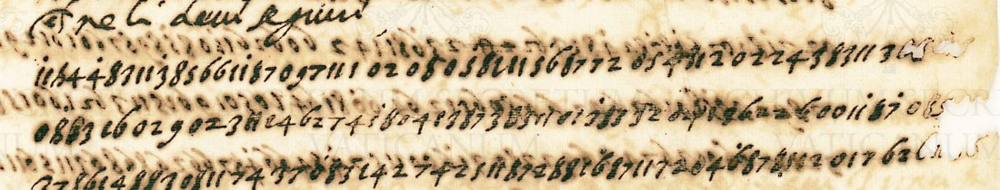
Cardinal Farnese to the nuncio Poggio, December 1541 — the companion of Vatican Challenge Part 5 deciphered in part with Meister’s 1906 Poggio key, matched to the letter and corrected: 80% of 2,965 figures deciphered (67% certain); Paul III refuses to brand the King of France the Turk’s ally for Charles V. write-up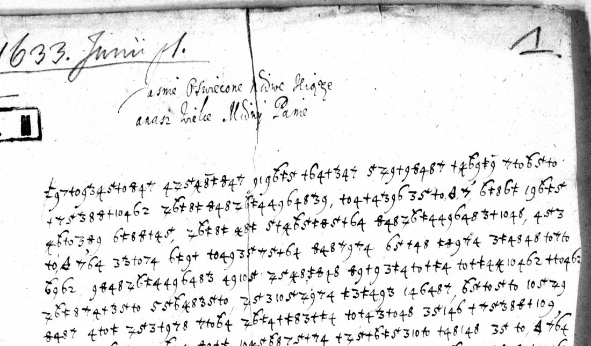
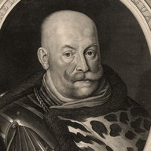
The besieged at Smolensk to Krzysztof Radziwiłł, 1 June 1633 — key recovered from the cipher (a substitution on digits marked by cross strokes) with the clear close’s W.X.Mci as first crib: an appeal for relief in the eighth month of the siege, 95.0% of 1,856 signs write-up- Carl Pawel to Frederick V, 25 Nov 1624 — letter cipher identified by Brice Dudout as the Johann Casimir–Camerarius alphabet moved by three, fitted on one page and tested on the next (13 of 13 letters) write-up
- “Ex Conde” to Diego José Dormer, Catalonia 1693–96 — key recovered from the ciphertext by Brice Dudout (partial by protocol, 0.577 and 0.594 on two held-out sets): the muster at Gerona and the blame for the campaign, 91.7% of counted words write-up
- Johann Casimir to Ludwig Camerarius, 1629 — key of the two-digit cipher rebuilt from the contemporary glosses by Brice Dudout and validated on a held-out letter (0.873 against 0.170) write-up
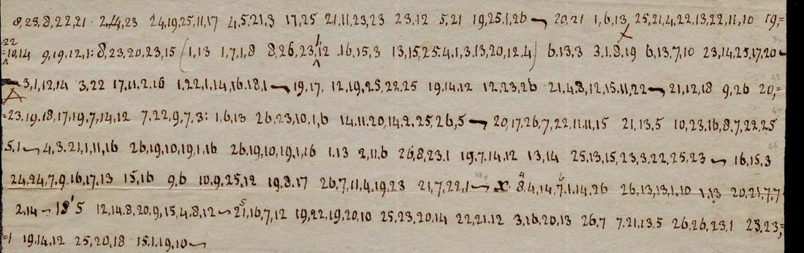
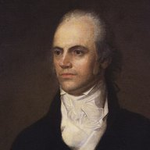
Aaron Burr to Joseph Alston, July 1804, and to Theodosia, Baltimore, 1808 — keys recovered from the cipher alone for both ciphers on Gilder Lehrman’s GLC01523, catalogued as undecoded: ten lines of a figure-and-stroke substitution in the letter a week after the Hamilton duel, all 132 signs (“If the inquest of murder be found, what would you advise – To stand – to go to Europe or what?”), and two sheets catalogued as its pages 2–3 that are three letters of 1808 to his daughter in a six-place Vigenère, 969 of 973 numbers write-up (1804) · write-up (1808)- Olivares to the Duke of Alba, 22 Aug 1626 — the Count-Duke’s letter on the deaths in his family, read with Philip IV’s cipher A plus 20 values learnt on its first part (key partial by protocol, 95.2% of words read), by Brice Dudout write-up
- Ferdinand III to Field Marshal Hatzfeldt, Aug–Sept 1641 — five cipher pieces read with the key Stützel printed in 1963, the first publication of the texts (94.1% of words), by Brice Dudout write-up
- Cipher telegrams of the Leticia crisis, Sept 1932 — seventeen telegrams between Bogotá and Puerto Asís read with the Ministry’s weekday key of 1931 (99.5% of words, one numeric telegram open), by Brice Dudout write-up
- Willem Lodewijk of Nassau to Johann VII, spring 1620 — three letters and a postscript on the defence of the Palatinate read with the shape grid of the family key book (96.4% of words, nomenclator open), by Brice Dudout write-up
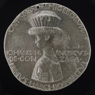
Pandolfo Malatesta to Gianfrancesco Gonzaga, Rome, 22 April 1428 — key and reading by Mark Vladimir Prizmic (with Claude), from Satoshi Tomokiyo’s transcription, checked here: a homophonic substitution of Latin with two nulls, 307 of 308 signs; three days after the peace of Ferrara the archbishop of Patras asks Gonzaga to keep his men-at-arms and proposes that he become king of the Morea; this project had failed on a 262-sign transcription that left out cipher letters write-up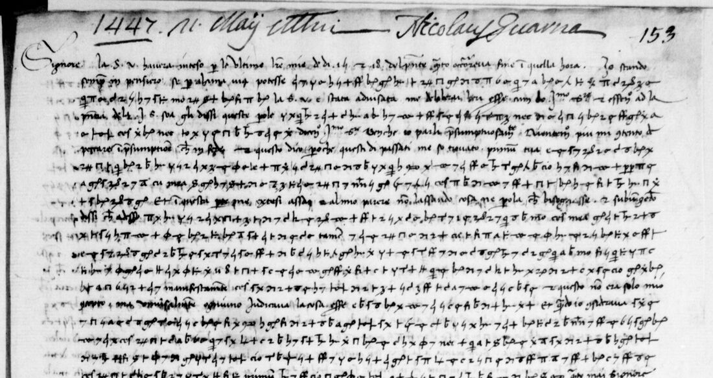
Nicolò Guarna to Francesco Sforza, Milan, 21 May 1447 — key rebuilt by Brice Dudout from another Guarna letter and its late clear copy, only partly validated (both held-out tests partial, no fresh block left): 616 of about 852 cipher words read (72.3%, below the read bar) on money, the plague and the Duke’s wish that Sforza come; the end was already in clear on f. 156 write-up- Cardinal Pascual de Aragón to his brother Pedro, c. 1676–77 — key learned from 14 other cipher and clear pairs of the volume by Brice Dudout and measured once on a held-out page (0.742 against 0.422 for shuffled keys, key partial): the suspension of arms and Sicily, orders at Melgar, Medina and Oropesa feared; 82 of 95 margin words read (86%), and the cipher corrects the margin in three places write-up
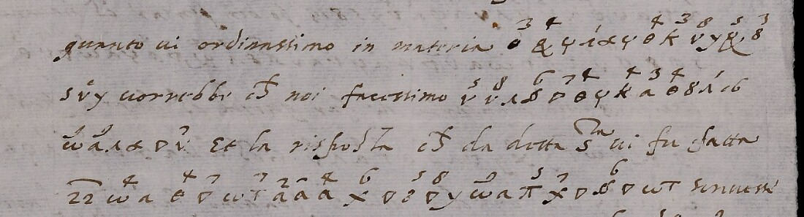
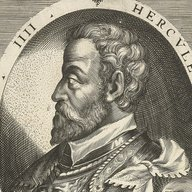
Ercole II d’Este to Claudio Ariosto, Ferrara, 23 April 1559 — key recovered from the signs alone by Brice Dudout and measured once on held-out lines (0.605 against 0.155 for shuffled keys): a countess’s claim to arrears of rents and her husband’s rebellion, 357 of 402 cipher words read (88.8%) write-up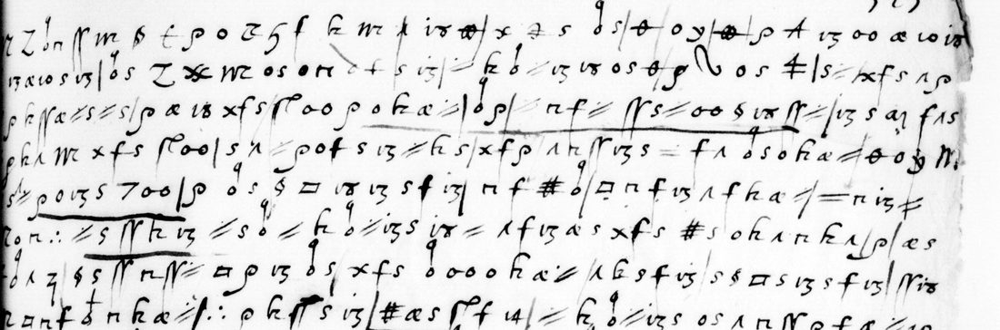
A cipher page in Cardinal d’Este’s cipher, Rome 1584–85 — known key applied: one page of Colbert 338 read with Satoshi Tomokiyo’s d’Este table (177 of 200 words, 88.5%), a prince’s request for a royal title refused by the pope and pressed on the emperor, by Brice Dudout write-up
 The Marquis of Mirabel to Carlos Coloma, Lyon, 8 December 1622 — key rebuilt by Brice Dudout from the margin clears of Feria’s letters to Coloma, only partly validated (two of four held-out tests partial, two failed): 375 of 425 cipher words read (88.2%) on Savoy, the Valtellina and Richelieu, but only 35% of the sentences read clean write-up
The Marquis of Mirabel to Carlos Coloma, Lyon, 8 December 1622 — key rebuilt by Brice Dudout from the margin clears of Feria’s letters to Coloma, only partly validated (two of four held-out tests partial, two failed): 375 of 425 cipher words read (88.2%) on Savoy, the Valtellina and Richelieu, but only 35% of the sentences read clean write-up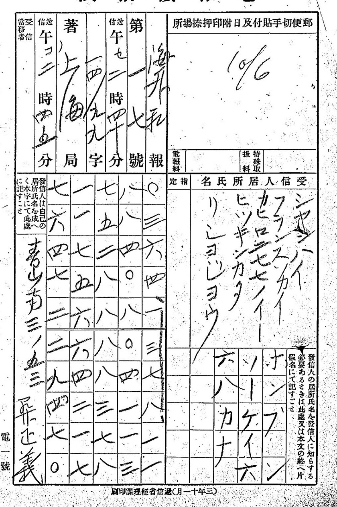
 Huang Xing, 共密 telegrams, 10 June – 2 July 1916 — key recovered from the ciphertext alone by Brice Dudout with Claude (the tens digit through a table, then 9000 minus the group); 96.2% of 555 groups read as sense, partial: one more telegram under the same prefix does not read; the key is read as a renumbered 明密 book by Satoshi Tomokiyo write-up
Huang Xing, 共密 telegrams, 10 June – 2 July 1916 — key recovered from the ciphertext alone by Brice Dudout with Claude (the tens digit through a table, then 9000 minus the group); 96.2% of 555 groups read as sense, partial: one more telegram under the same prefix does not read; the key is read as a renumbered 明密 book by Satoshi Tomokiyo write-up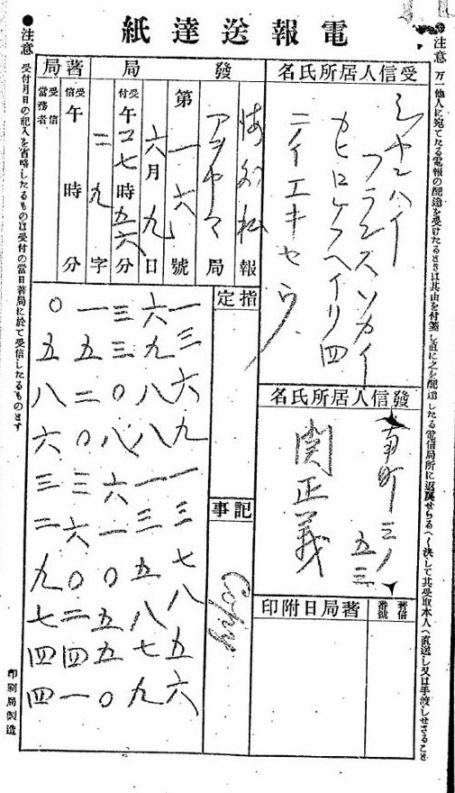
Huang Xing, 容密 telegrams, June 1916 — key recovered from the ciphertext alone by Brice Dudout with Claude (a digit table per place, plus 0901); 95.9% of 1,306 groups read as sense: Japanese arms for Zhejiang, a loan, the 1912 Constitution write-up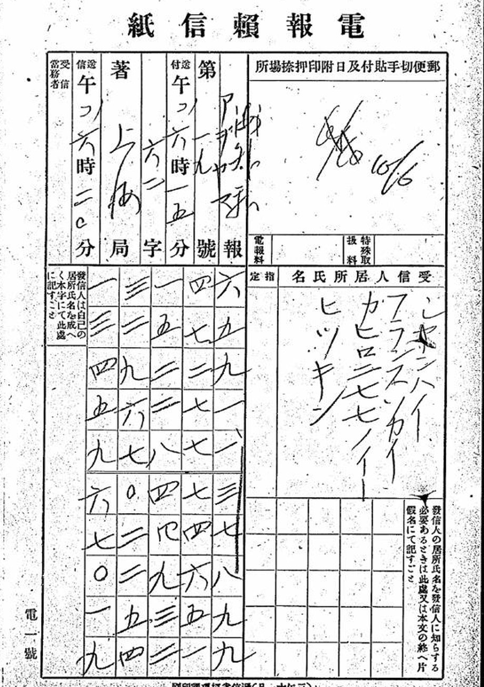
Huang Xing, 辰密 telegrams, 3–13 June 1916 — key recovered from the ciphertext alone by Brice Dudout with Claude (the telegraph code with pages counted backwards over zero-free numbers); all 239 groups read as sense, 232 without doubt write-up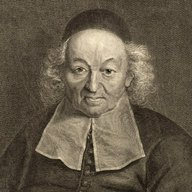
Pierre Des Noyers to Ismaël Boulliau, Danzig, December 1659 — existing decipherment, transcribed by Brice Dudout: a short note on the Spanish marriage and la Mancini, deciphered at the time by the gloss above its cipher groups; the 00-99 nomenclator is rebuilt from the other glossed passages of the volume write-up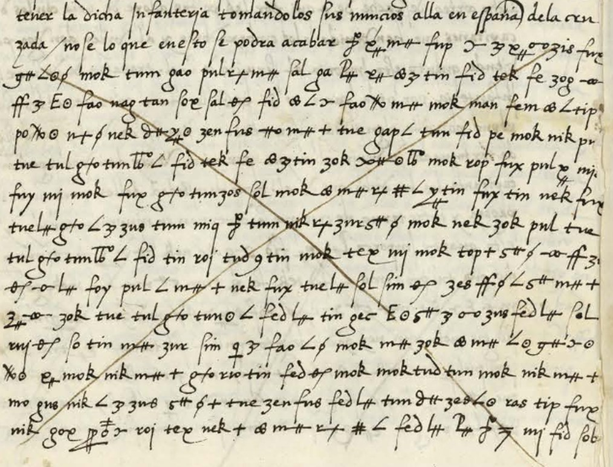
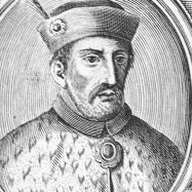
Ramón de Cardona to Charles I, Naples, 1517 and 1520 — key recovered from the ciphertext alone by Michael Brackx with Claude Code: letter signs and whole-word code groups, two historical names (Borghese Petrucci, Giampaolo Baglioni) confirm it; about half the sentences still have holes, so decoded, not read write-up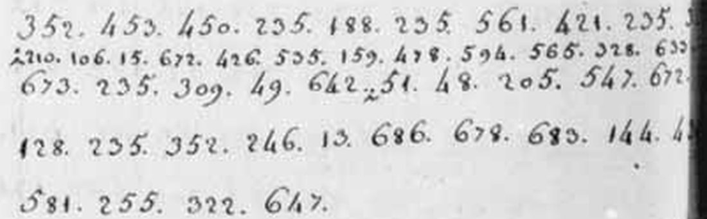
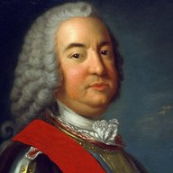
Vaudreuil to the minister of the Marine, 13 Aug 1760 — external key matched: the governor of New France's last war report before Montréal fell, read with his own 1757 table from the same volume of the Colonies archive, 96% of 2,424 groups write-up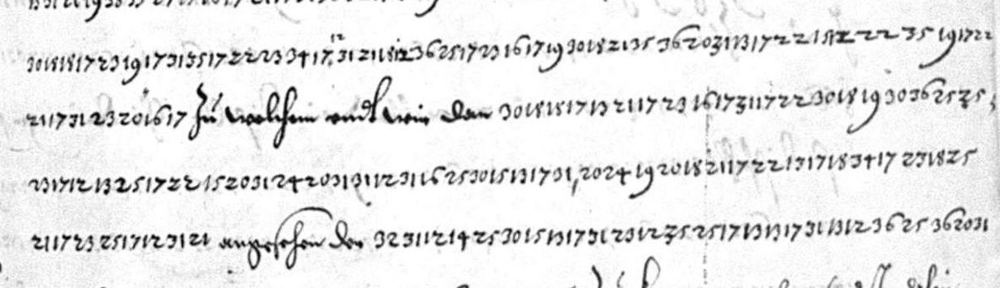
 The Electors of Mainz and Cologne to Geleen, 1633 — key from ciphertext only: two-digit numbers in a letter on the relief of Hildesheim, 186 of 221 cipher words read by Brice Dudout, 19 lost in the binding write-up
The Electors of Mainz and Cologne to Geleen, 1633 — key from ciphertext only: two-digit numbers in a letter on the relief of Hildesheim, 186 of 221 cipher words read by Brice Dudout, 19 lost in the binding write-up- Siege of Dole, 1636 — key from adjacent plaintext: letters from the besieged town to the relief army, key learnt from a marginal gloss and tested on a held-out block, 124 of 128 words, read by Brice Dudout write-up
- Deboli to King Stanisław August, 13 May 1788 — key from adjacent plaintext: a despatch with no cabinet decipherment, read in part with the 1789 key completed on 1788 pairs (0.86 on a held-out pair), by Brice Dudout write-up
- Pacheco to Granvelle, April–June 1554 — key from adjacent plaintext: Five letters of the viceroy of Naples to the bishop of Arras on money, troops and the war of Siena write-up
- Alfonso II d’Este to his agent at Venice, 14 April 1576 — ciphertext-only break: A two-leaf cipher letter of the duke of Ferrara to his agent at Venice, with no decipherment on the leaf write-up
- Marignano to Ferrante Gonzaga, 12 June 1546 — existing decipherment: Ten cipher lines in a letter from the imperial court at Ratisbon on the war against the Lutherans write-up
- Maffeo da Treviglio to Tamás Bakócz, 30 November 1490 — read in part: A four-page Latin cipher letter on the Sforza marriage alliance with the new king of Hungary, with the dowry raised from 150,000 to 200,000 ducats write-up
 Bouillé to the Navy minister, 1780–1782 — key from adjacent plaintext, partial: three cipher letters with no decipherment filed decode as French with a 507-group key read off the clerks’ glosses of 1779, 93.6–95.9% of their groups write-up
Bouillé to the Navy minister, 1780–1782 — key from adjacent plaintext, partial: three cipher letters with no decipherment filed decode as French with a 507-group key read off the clerks’ glosses of 1779, 93.6–95.9% of their groups write-up
 Charles V to Ferrante Gonzaga, 14 November 1549 — external key matched, partial: the Emperor’s ciphered orders on Parma, written just after Paul III died; 93% of the signs firm, by eye write-up
Charles V to Ferrante Gonzaga, 14 November 1549 — external key matched, partial: the Emperor’s ciphered orders on Parma, written just after Paul III died; 93% of the signs firm, by eye write-up- Adrian of Utrecht to Charles V, 9 September 1520 — key from external plaintext: six cipher lines of the regent’s letter during the Comuneros revolt, 44 of 46 words, read by Brice Dudout write-up
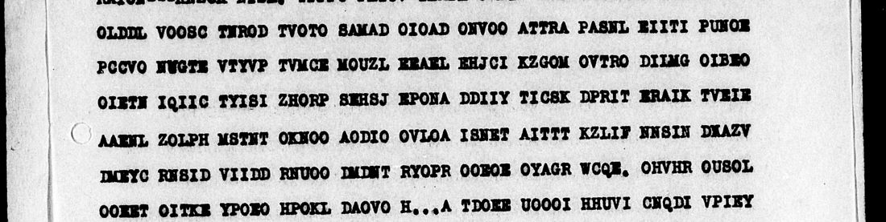
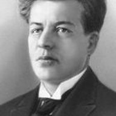
Voikov to Stomoniakov, 1 June 1921 — key recovered from the ciphertext: a Soviet radio telegram filed unread by the State Department is a buying order for nails, rakes and saws write-up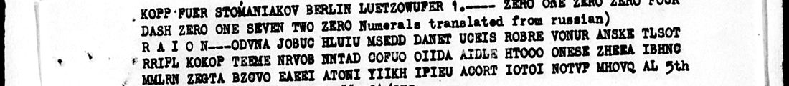
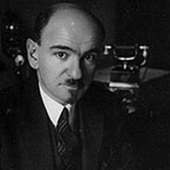
Lejava to Stomoniakov, 5 April 1921 — key recovered from the ciphertext: fifty thousand gold rubles to Berlin for scientific and technical orders write-up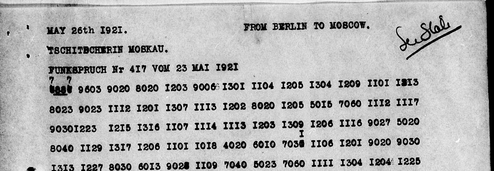
 The Kopp and Chicherin radiograms, 1921 — attempted, not deciphered: the small figure table measured, no group value recovered write-up
The Kopp and Chicherin radiograms, 1921 — attempted, not deciphered: the small figure table measured, no group value recovered write-up- Siruela to Philip IV, 19 May 1638 — key from external plaintext: a Genoa embassy letter with no clear copy, 93 of 94 words, read by Brice Dudout write-up
- Partyet to the Conseil de Marine, 7 April 1721 — known key applied: six enciphered lines at Cadiz, 35 of 35 words, read by Brice Dudout write-up
- Bouillé to the minister of the Navy, 1778 — known key applied: two cipher letters and two troop returns after Dominica, 455 of 458 words, read by Brice Dudout write-up
- Damas to the Navy, 2 Nov 1787 — known key applied: a governor’s war plan in Bouillé’s cipher of 1778, 298 of 302 words, read by Brice Dudout write-up
- The Auckland cables, February 1918 — key recovered from ciphertext-only: two cables on an unknown wireless transmitter, Vigenère with the key FEBRUARY, read by Brice Dudout write-up
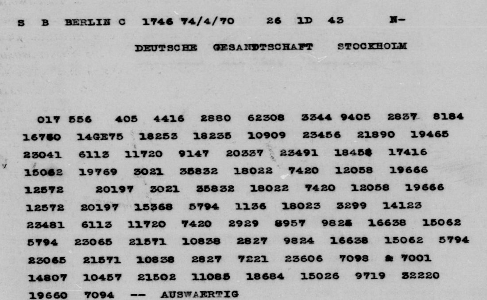
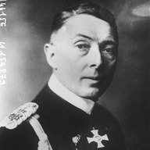
The German Foreign Office to Stockholm, July 1918 — not solved: four numeric codes ruled out against Mendelsohn’s tables; the heads decoded, Nr. 1010–1015 in an unbroken run write-up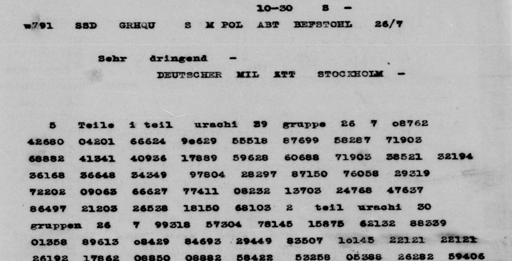
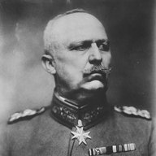
Ludendorff to the attaché in Stockholm, July 1918 — not solved: a very urgent five-part telegram and five legation telegrams in flat five-figure groups, transcribed and tested write-up- The Milroy telegrams, 1861–62 — known key applied: two Union telegrams in Stager Cipher No. 7, solved by Richard Bean in 2026; two routes checked on Milroy’s copy write-up
- Feynman ciphers nos. 2 and 3, 1953 — known key applied: David Vierra’s two alternating alphabets re-enciphered, 228 of 231 letters of no. 3 match write-up
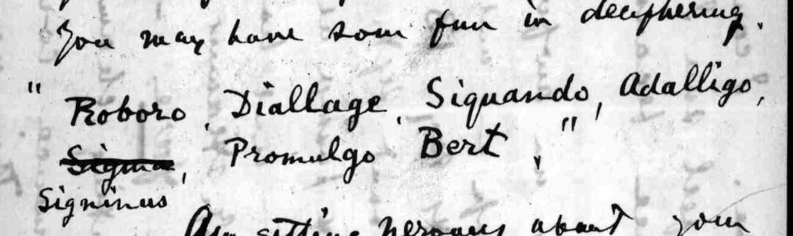
Alexander Graham Bell → Mabel Hubbard Bell, 27 August 1900 — known key applied: a seven-word “Unicode” code telegram read with the printed 1896 phrase book, all six code words checked on the page images; Bell struck out Sigma and wrote Signinus, so the catalogue’s “signature” is a word of the message. write-up- Gen. Rubio Navarrete to the Minister of War, Lampazos and Zacatecas, 1913–14 — known key applied: the printed Clave núm. 109 filed with the telegrams, tested on a contemporary pencil pair, reads all 67 cipher words of three telegrams: the Laredo garrison courted by the Carrancistas, a railway to Torreón being destroyed; contributed by Brice Dudout write-up
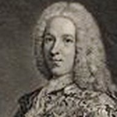
Champigny to Maurepas, Fort-Royal, 17 Aug 1744 — key recovered from adjacent plaintext: the Windward Islands Navy code rebuilt from the glosses of six sibling letters and tested on a seventh reads 154 of 155 words of Commodore Knowles’s notice to Dominica; contributed by Brice Dudout write-up- Antonio Pérez to Don John of Austria, Madrid, 19 Aug 1578 — known key applied: the 1577 Spanish chancery syllabary, adapted from the Genoa embassy table and tested on a fresh cipher/decipherment pair, reads 69 of 70 cipher words: the Council of Finance has “not a single real”; contributed by Brice Dudout write-up
- Anonymous Polish letter, Sanguszko archive, 31 Jul 1662 — key recovered from the ciphertext alone: 23 composite sign groups, frozen on the front and tested on the held-out reverse; all 71 words read, the Swedes arming and the Elector expected in August; contributed by Brice Dudout write-up
 Filippo Sega, Paris, 26 Nov 1590 and 16 Jan 1591 — known key applied: Meister key no. 65, identified by George Lasry for Sega’s letter of 9 January 1591, reads 134 of 136 cipher words in two letters; tested on a letter with its contemporary decipherment; contributed by Brice Dudout write-up
Filippo Sega, Paris, 26 Nov 1590 and 16 Jan 1591 — known key applied: Meister key no. 65, identified by George Lasry for Sega’s letter of 9 January 1591, reads 134 of 136 cipher words in two letters; tested on a letter with its contemporary decipherment; contributed by Brice Dudout write-up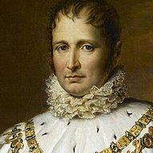
King Joseph to Napoleon, Spain, Dec 1812 — known key applied: a cryptogram printed as Berthier’s dispatch of 22 December 1812 reads with the Great Cipher of 1812, all 325 groups; the writer is King Joseph, with no news of the Emperor; key and writer first found by Ilia Chirtulov, re-read by Brice Dudout write-up- Japanese Army reports, Soviet weather ciphers, 1938–1940 — Japanese decipherment transcribed and checked: the Moscow key tables of June 1940 (4,796 figures) are one 109-figure cycle, and the worked example deciphers, 60 of 60 figures; contributed by Brice Dudout write-up
- Japanese Navy copies of American telegrams, 1932 — Japanese readings transcribed, partial: about 77% of the words of 53 State Department telegrams recovered against FRUS, the confidential passages not read; errors fit a one-part code; contributed by Brice Dudout write-up
- Melchiorre Biglia, Vienna to Rome, Dec 1565 — key from the ciphertext alone, partial: a numerical syllabic cipher rebuilt with no key or crib and tested on held-out text; the nuncio defends his handling of the Emperor’s demand for priests’ marriage; contributed by Brice Dudout write-up
 Juan de Eraso to Philip IV, Genoa, 18 Jan 1643 — key from external plaintext: the Grand Duke of Tuscany refers the request for troops to his resident in Madrid, which Eraso reads as gaining time; contributed by Brice Dudout write-up
Juan de Eraso to Philip IV, Genoa, 18 Jan 1643 — key from external plaintext: the Grand Duke of Tuscany refers the request for troops to his resident in Madrid, which Eraso reads as gaining time; contributed by Brice Dudout write-up- Philip IV to the Marquis of Santa Cruz, Madrid, 6 Dec 1630 — key from external plaintext: a seven-page letter marked “sin descifrar” on the Casale agreement and the army’s unreadiness, 1,162 of 1,171 words; contributed by Brice Dudout write-up
 Ferdinand → John II, Hostalric 1473 and Zaragoza 1474 — key recovered from adjacent plaintext, partial: both homophonic alphabets rebuilt from a second hand’s interlinear notes; Ferdinand brings 800 horse for the relief of Perpignan, and asks that Mossèn Santcliment go to Naples for Juana’s marriage; contributed by Michael Brackx write-up
Ferdinand → John II, Hostalric 1473 and Zaragoza 1474 — key recovered from adjacent plaintext, partial: both homophonic alphabets rebuilt from a second hand’s interlinear notes; Ferdinand brings 800 horse for the relief of Perpignan, and asks that Mossèn Santcliment go to Naples for Juana’s marriage; contributed by Michael Brackx write-up Andrea da Birago to Francesco Sforza, Pavia 1448 — existing decipherment: the one unglossed cipher of the Milan series is the twin of the clear letter above it, checked sign by sign with Birago’s own key, found on DECODE (R5316) … write-up
Andrea da Birago to Francesco Sforza, Pavia 1448 — existing decipherment: the one unglossed cipher of the Milan series is the twin of the clear letter above it, checked sign by sign with Birago’s own key, found on DECODE (R5316) … write-up
 Filippo Maria Visconti to Francesco Sforza, Nov 1446 – Mar 1447 — the Duke of Milan’s own key found unlabelled on DECODE; 19 cipher slips, 90% of signs read; three of them with no clear text reached · write-up
Filippo Maria Visconti to Francesco Sforza, Nov 1446 – Mar 1447 — the Duke of Milan’s own key found unlabelled on DECODE; 19 cipher slips, 90% of signs read; three of them with no clear text reached · write-up Filippo Maria Visconti to Francesco Sforza, Cusago, 23 Jan 1447 — a slip in the Duke’s second key, also on DECODE without a name, deciphered and checked against its clear text · write-up
Filippo Maria Visconti to Francesco Sforza, Cusago, 23 Jan 1447 — a slip in the Duke’s second key, also on DECODE without a name, deciphered and checked against its clear text · write-up
 Augur to Sheridan and Russell, Texas, January 1874 — four Army route-cipher telegrams on the Davis–Coke crisis, routes recovered from the words alone: “I decline to act without orders from the President” write-up
Augur to Sheridan and Russell, Texas, January 1874 — four Army route-cipher telegrams on the Davis–Coke crisis, routes recovered from the words alone: “I decline to act without orders from the President” write-up Barbavara and Pusterla to Francesco Sforza, 1447 — existing decipherment: sixteen cipher letters of the conclave of Nicholas V, each with a later clear copy or a decipherment of the time; the copyist’s blanks filled from the key (DECODE R1857) … write-up
Barbavara and Pusterla to Francesco Sforza, 1447 — existing decipherment: sixteen cipher letters of the conclave of Nicholas V, each with a later clear copy or a decipherment of the time; the copyist’s blanks filled from the key (DECODE R1857) … write-up
 Elgar to Dora Penny, 14 July 1897 (the Dorabella cipher) — not solved after fifty calibrated rounds: the 27 opposite flips force one fixed table, and under it no language, plaintext form, misread allowance or homophone set gives a reading write-up
Elgar to Dora Penny, 14 July 1897 (the Dorabella cipher) — not solved after fifty calibrated rounds: the 27 opposite flips force one fixed table, and under it no language, plaintext form, misread allowance or homophone set gives a reading write-up British agent at Port Sainte-Marie → Newcastle, 1729 — key recovered from adjacent plaintext: a coded report never deciphered on the leaf, read 134 of 141 groups with a table rebuilt from the agent’s glossed sibling letters — he asks for orders while Keene leaves him idle. write-up
British agent at Port Sainte-Marie → Newcastle, 1729 — key recovered from adjacent plaintext: a coded report never deciphered on the leaf, read 134 of 141 groups with a table rebuilt from the agent’s glossed sibling letters — he asks for orders while Keene leaves him idle. write-up
 Poinsett to Monroe, Santiago, 20 Feb 1813 — not solved: a clerk’s decipherment of the 1814 letter in the same code gives 161 of 437 groups, no sentence reads write-up
Poinsett to Monroe, Santiago, 20 Feb 1813 — not solved: a clerk’s decipherment of the 1814 letter in the same code gives 161 of 437 groups, no sentence reads write-up Powhatan Ellis → John Forsyth, Mexico City, 1836–1839 — existing decipherment: the coded despatches on the Texas war were deciphered in the State Department at the time, and their groups decode with John Quincy Adams’s 1811 code; Michael Brackx found the decipherments on the film, WAINUT transcribed the 1839 letter, and three groups the catalogue missed close the one passage with no decipherment — write-up
Powhatan Ellis → John Forsyth, Mexico City, 1836–1839 — existing decipherment: the coded despatches on the Texas war were deciphered in the State Department at the time, and their groups decode with John Quincy Adams’s 1811 code; Michael Brackx found the decipherments on the film, WAINUT transcribed the 1839 letter, and three groups the catalogue missed close the one passage with no decipherment — write-up Wąsowicz → Aleksander Michał Lubomirski, 1662–1663 — known key applied: seven letters with names and news in two-digit numbers, deciphered with the nineteenth-century table filed with them and checked blind, 1,561 of 1,587 numbers without doubt; the Marshal Jerzy Sebastian Lubomirski watched two years before his rebellion: “iam ani hetman ani żołnierz do wiosny”. Contributed by Brice Dudout. write-up
Wąsowicz → Aleksander Michał Lubomirski, 1662–1663 — known key applied: seven letters with names and news in two-digit numbers, deciphered with the nineteenth-century table filed with them and checked blind, 1,561 of 1,587 numbers without doubt; the Marshal Jerzy Sebastian Lubomirski watched two years before his rebellion: “iam ani hetman ani żołnierz do wiosny”. Contributed by Brice Dudout. write-up- Philip IV → Cardinal Albornoz, Madrid, 24 July 1648 — key from external plaintext: the syllabic cipher rebuilt from a 1649 letter of Luis de Haro enciphered for Albornoz and its plain copy, and both copies of the letter deciphered, 353 of 359 groups; the King tells his ambassador not to give up asking that the nuncio Rospigliosi, the future Clement IX, stay at Madrid. Contributed by Brice Dudout. write-up
 Jourdan → Soult and Marmont → Jourdan, May–June 1812 — known key applied: two intercepted letters in Spanish copies, deciphered with the French table of the 1812 Grand Chiffre, 259 of 267 numbers of Jourdan’s letter and about 85% of Marmont’s; eight weeks before Salamanca, d’Erlon is to beat Hill on the Guadiana or cross the Tagus at the bridge of the Arzobispo. Contributed by Brice Dudout. write-up
Jourdan → Soult and Marmont → Jourdan, May–June 1812 — known key applied: two intercepted letters in Spanish copies, deciphered with the French table of the 1812 Grand Chiffre, 259 of 267 numbers of Jourdan’s letter and about 85% of Marmont’s; eight weeks before Salamanca, d’Erlon is to beat Hill on the Guadiana or cross the Tagus at the bridge of the Arzobispo. Contributed by Brice Dudout. write-up- Lope Hurtado de Mendoza → Charles V, Tordesillas, 10 December 1520 — key recovered from the ciphertext alone, 97.7% of some 920 cipher words: a letter wholly in cipher, written five days after the royal army retook Tordesillas from the Comuneros; the key an archivist’s slip points to does not fit, and the letter reports an army “muy mal mandada”. Contributed by Brice Dudout. write-up
 Niccolò Ferducci → Ferdinand I, Fiume, 19 July 1532 — key recovered from adjacent plaintext: the eight code groups of a clear Italian report valued from the glosses of the time on two of Ferducci’s other letters, all eight giving sense; the coded signature names the sender, who offers to seize the French ambassador at sea, “pretending to go fishing”. Contributed by Brice Dudout. write-up
Niccolò Ferducci → Ferdinand I, Fiume, 19 July 1532 — key recovered from adjacent plaintext: the eight code groups of a clear Italian report valued from the glosses of the time on two of Ferducci’s other letters, all eight giving sense; the coded signature names the sender, who offers to seize the French ambassador at sea, “pretending to go fishing”. Contributed by Brice Dudout. write-up Henry II → Suleiman, in Malvezzi’s cipher, 1547 — external key matched: Ferdinand I’s resident at the Porte enciphered a Latin copy of Henry II’s letters to the Sultan, and his alphabet from DECODE, calibrated on a sibling copy and tested blind, deciphers about 97.5% of it; Henry asks for the Swiss to be included in the Habsburg truce and for the Ottoman fleet. Contributed by Brice Dudout. write-up
Henry II → Suleiman, in Malvezzi’s cipher, 1547 — external key matched: Ferdinand I’s resident at the Porte enciphered a Latin copy of Henry II’s letters to the Sultan, and his alphabet from DECODE, calibrated on a sibling copy and tested blind, deciphers about 97.5% of it; Henry asks for the Swiss to be included in the Habsburg truce and for the Ottoman fleet. Contributed by Brice Dudout. write-up Charles XII → the Council of the Realm, Bender, 26 April 1710 — key from adjacent plaintext: a Swedish number nomenclator rebuilt from a troop list and its clear draft in the same Stade file, and both copies of the letter deciphered, 639 of 640 groups; after Helsingborg the King offers Denmark peace under English and Dutch mediation and lets his Council agree an armistice. Contributed by Brice Dudout. write-up
Charles XII → the Council of the Realm, Bender, 26 April 1710 — key from adjacent plaintext: a Swedish number nomenclator rebuilt from a troop list and its clear draft in the same Stade file, and both copies of the letter deciphered, 639 of 640 groups; after Helsingborg the King offers Denmark peace under English and Dutch mediation and lets his Council agree an armistice. Contributed by Brice Dudout. write-up Afonso VI → the Count of Vila Flor, 13–26 May 1663 — ciphertext-only break: four cipher letters from the Lisbon court to the Alentejo army, the key tested blind on a second letter and confirmed by duplicate copies; the order to relieve Évora “a todo o risco”, two weeks before Ameixial. Contributed by Brice Dudout. write-up
Afonso VI → the Count of Vila Flor, 13–26 May 1663 — ciphertext-only break: four cipher letters from the Lisbon court to the Alentejo army, the key tested blind on a second letter and confirmed by duplicate copies; the order to relieve Évora “a todo o risco”, two weeks before Ameixial. Contributed by Brice Dudout. write-up
 Bernstorff → Berlin, Washington, 10 January 1917 — key from external plaintext, partial: the code telegram the State Department cabled for the German ambassador opens with his telegram No. 205, printed in 1920, and the alignment recovers 82 code groups; a second text of 430 groups in the same code stays undecoded. Contributed by WAINUT. write-up
Bernstorff → Berlin, Washington, 10 January 1917 — key from external plaintext, partial: the code telegram the State Department cabled for the German ambassador opens with his telegram No. 205, printed in 1920, and the alignment recovers 82 code groups; a second text of 430 groups in the same code stays undecoded. Contributed by WAINUT. write-up
 King Carlos → Queen Amélie, three code telegrams, 1903 — existing decipherment, partial: two of three telegrams deciphered from decodes of the time, one on a Hotel Bristol card filed with them; the telegram to the yacht at Oran has no decode. Contributed by WAINUT. write-up
King Carlos → Queen Amélie, three code telegrams, 1903 — existing decipherment, partial: two of three telegrams deciphered from decodes of the time, one on a Hotel Bristol card filed with them; the telegram to the yacht at Oran has no decode. Contributed by WAINUT. write-up
 Hintze Ribeiro → Queen Amélie, two code telegrams, 1903 — existing decipherment, partial: the May telegram from the decode written under it, a peer’s interpellation about the Queen’s journey called a “falso boato”; 24 code values, the April telegram to Naples still closed. Contributed by WAINUT. write-up
Hintze Ribeiro → Queen Amélie, two code telegrams, 1903 — existing decipherment, partial: the May telegram from the decode written under it, a peer’s interpellation about the Queen’s journey called a “falso boato”; 24 code values, the April telegram to Naples still closed. Contributed by WAINUT. write-up
 Venceslau de Lima → King Manuel II, November–December 1909 — existing decipherment: eight code telegrams of the state visit transcribed from the receiver’s pencil decodes, 400 of 409 code items, and 261 values of a two-part code rebuilt; the return route via Medina to avoid a stop at Luso. Contributed by WAINUT. write-up
Venceslau de Lima → King Manuel II, November–December 1909 — existing decipherment: eight code telegrams of the state visit transcribed from the receiver’s pencil decodes, 400 of 409 code items, and 261 values of a two-part code rebuilt; the return route via Medina to avoid a stop at Luso. Contributed by WAINUT. write-up
 Count of Sabugosa → Queen Amélie, 1903–1910 — existing decipherment, partial: three of four code telegrams from decodes of the time found among the clear cards, 52 values of an alphabetical code rebuilt; from London in May 1910, the British marriage project for Manuel II. Contributed by WAINUT. write-up
Count of Sabugosa → Queen Amélie, 1903–1910 — existing decipherment, partial: three of four code telegrams from decodes of the time found among the clear cards, 52 values of an alphabetical code rebuilt; from London in May 1910, the British marriage project for Manuel II. Contributed by WAINUT. write-up
 King Manuel II → Queen Amélie, Bussaco, August 1910 — not solved: three code telegrams to his mother transcribed and dated, one code with a shared opening phrase; Sabugosa’s code does not fit and no decode or codebook has been found. Contributed by WAINUT. write-up
King Manuel II → Queen Amélie, Bussaco, August 1910 — not solved: three code telegrams to his mother transcribed and dated, one code with a shared opening phrase; Sabugosa’s code does not fit and no decode or codebook has been found. Contributed by WAINUT. write-up Johnston → Seddon, Jackson, 16 June 1863 — existing decipherment: the five Vigenère words (“invade Kentucky”) fit the Confederate key MANCHESTERBLUFF advancing by plaintext length; the War Department’s 1863 translation is filed with the telegram. Contributed by WAINUT. write-up
Johnston → Seddon, Jackson, 16 June 1863 — existing decipherment: the five Vigenère words (“invade Kentucky”) fit the Confederate key MANCHESTERBLUFF advancing by plaintext length; the War Department’s 1863 translation is filed with the telegram. Contributed by WAINUT. write-up Rose Greenhow, letter on mourning paper, Washington 1861 — external key matched, partial: side 1 deciphered with the key found on her body in 1864, “attack is hourly expected”; about 60% of its words read as sense between paper losses. Contributed by WAINUT. write-up
Rose Greenhow, letter on mourning paper, Washington 1861 — external key matched, partial: side 1 deciphered with the key found on her body in 1864, “attack is hourly expected”; about 60% of its words read as sense between paper losses. Contributed by WAINUT. write-up Jordan → “My Dearest Rachel” (Greenhow), 1861 — existing decipherment: a burnt cipher fragment and a clerk’s clear copy are one letter, and the 1864 Greenhow key gives the copy’s letters (82 of 82). Contributed by WAINUT. write-up
Jordan → “My Dearest Rachel” (Greenhow), 1861 — existing decipherment: a burnt cipher fragment and a clerk’s clear copy are one letter, and the 1864 Greenhow key gives the copy’s letters (82 of 82). Contributed by WAINUT. write-up- De Puebla → Almazán, London, 21 April 1506 — known key applied, partial: Tomokiyo’s table for Puebla’s First Cipher deciphers the ambassador’s report that Katharine’s household is “tan bien ataviados”, the day before she wrote she was all but naked; contributed by WAINUT write-up
 Comenius → Andreas Klobusiczky, Leszno, 4 August 1655 — existing decipherment, partial: “Nihil certius quam Poloniam periisse, et papatum in illa”, deciphered in print in 1890; its key is the Rákóczi envoys’ table printed in 1874; the 24 May 1655 passage stays open (contributed by WAINUT, PR #102). write-up
Comenius → Andreas Klobusiczky, Leszno, 4 August 1655 — existing decipherment, partial: “Nihil certius quam Poloniam periisse, et papatum in illa”, deciphered in print in 1890; its key is the Rákóczi envoys’ table printed in 1874; the 24 May 1655 passage stays open (contributed by WAINUT, PR #102). write-up
 Deboli → Stanisław August, St Petersburg, 1789 — key from adjacent plaintext, partial: the clear texts of 103 of the 106 cipher despatches found in Zbiór Popielów 419 and 417; the code rebuilt from eleven aligned pairs reads the three that have none. 5,094 of 5,903 groups: Potemkin, Branicki, Prussia’s offer, and Deboli asking to be recalled. write-up
Deboli → Stanisław August, St Petersburg, 1789 — key from adjacent plaintext, partial: the clear texts of 103 of the 106 cipher despatches found in Zbiór Popielów 419 and 417; the code rebuilt from eleven aligned pairs reads the three that have none. 5,094 of 5,903 groups: Potemkin, Branicki, Prussia’s offer, and Deboli asking to be recalled. write-up
 João IV → the marquês de Nisa, 1642–44 — two cipher alphabets rebuilt from clear text in the same letter-book; the 1644 passage nobody had deciphered keeps the marriages of Prince Teodósio and the Infantas secret (398 of 438 cipher words; catalogue 380) · write-up
João IV → the marquês de Nisa, 1642–44 — two cipher alphabets rebuilt from clear text in the same letter-book; the 1644 passage nobody had deciphered keeps the marriages of Prince Teodósio and the Infantas secret (398 of 438 cipher words; catalogue 380) · write-up
 Livingston → Jay, Philadelphia, 28 November 1781 — existing decipherment: the “undecipherable” addition to the cypher is glossed in Livingston’s draft and entered on Jay’s key sheet, be to he as 600–605 (226 is e, not r) write-up
Livingston → Jay, Philadelphia, 28 November 1781 — existing decipherment: the “undecipherable” addition to the cypher is glossed in Livingston’s draft and entered on Jay’s key sheet, be to he as 600–605 (226 is e, not r) write-up
 La Touche and La Rivière → Berryer, Martinique, 12 June 1761 — key from adjacent plaintext, partial: the governor and intendant’s coded order for flour and beef from Saint Eustatius before the British attack, 92.2% read as sense; the code rebuilt from the decipherment above a sibling letter of August 1761 (ANOM C8 A 64 f° 1). write-up
La Touche and La Rivière → Berryer, Martinique, 12 June 1761 — key from adjacent plaintext, partial: the governor and intendant’s coded order for flour and beef from Saint Eustatius before the British attack, 92.2% read as sense; the code rebuilt from the decipherment above a sibling letter of August 1761 (ANOM C8 A 64 f° 1). write-up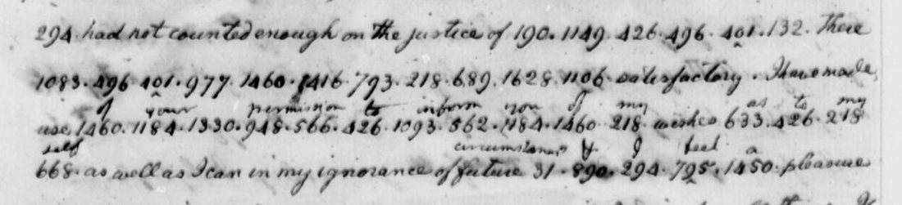
 Short, Carmichael and Pinckney → Jefferson, 1788–1793 — existing decipherment: the last groups of Jefferson’s legation codes Nos. 10, 13 and 16 checked. All 737 code groups transcribed and set against values decoded at the time in sibling letters; the editors’ readings hold, Pinckney’s “undeciphered 497” is 447, and nine single groups stay open. write-up
Short, Carmichael and Pinckney → Jefferson, 1788–1793 — existing decipherment: the last groups of Jefferson’s legation codes Nos. 10, 13 and 16 checked. All 737 code groups transcribed and set against values decoded at the time in sibling letters; the editors’ readings hold, Pinckney’s “undeciphered 497” is 447, and nine single groups stay open. write-up
 Nisbet Balfour → Cornwallis, Charleston, March 1781 — existing decipherment: the intercepted dispatches in the Papers of the Continental Congress, deciphered between the lines in 1781, were deciphered again from the numbers with the rebuilt ring of the British “Common cipher” and its 35 setting changes — 99.8% English, against Saberton’s finding that these ciphers were never broken. write-up
Nisbet Balfour → Cornwallis, Charleston, March 1781 — existing decipherment: the intercepted dispatches in the Papers of the Continental Congress, deciphered between the lines in 1781, were deciphered again from the numbers with the rebuilt ring of the British “Common cipher” and its 35 setting changes — 99.8% English, against Saberton’s finding that these ciphers were never broken. write-up Deboli → Stanisław August, St Petersburg, 1791 — existing decipherment: the 105 cipher despatches were deciphered at the time. The cabinet’s fair copies are filed as Zbiór Popielów 421 and catalogued as Deboli’s clear letters; five despatches were aligned with them group by group (98.9% of 3,082 groups), and two codes were found alternating. write-up
Deboli → Stanisław August, St Petersburg, 1791 — existing decipherment: the 105 cipher despatches were deciphered at the time. The cabinet’s fair copies are filed as Zbiór Popielów 421 and catalogued as Deboli’s clear letters; five despatches were aligned with them group by group (98.9% of 3,082 groups), and two codes were found alternating. write-up
 Georg Ernst zu Erbach → Ludwig VI of Hesse-Darmstadt, 1666 — key recovered from adjacent plaintext: the number pairs are line and letter of a rhymed German Lord’s Prayer, rebuilt from a Latin outline filed with the letter; all three cipher letters now deciphered — a count’s eight reasons for not leaving his county, and whether a lord may “put his sheep under hirelings”. write-up
Georg Ernst zu Erbach → Ludwig VI of Hesse-Darmstadt, 1666 — key recovered from adjacent plaintext: the number pairs are line and letter of a rhymed German Lord’s Prayer, rebuilt from a Latin outline filed with the letter; all three cipher letters now deciphered — a count’s eight reasons for not leaving his county, and whether a lord may “put his sheep under hirelings”. write-up
 Jefferson’s Code No. 11, Barclay, Carmichael, Short and Jefferson, 1786–1791 — key recovered from adjacent plaintext, partial: 348 values from Jefferson’s own decodings, 1,868 of 1,917 groups read. The editors’ “sea” in Jefferson’s letter to Barclay of 4 July 1787 is a group meaning larg-, and Barclay’s coded footnote names the Procurer General in six groups, not five. write-up
Jefferson’s Code No. 11, Barclay, Carmichael, Short and Jefferson, 1786–1791 — key recovered from adjacent plaintext, partial: 348 values from Jefferson’s own decodings, 1,868 of 1,917 groups read. The editors’ “sea” in Jefferson’s letter to Barclay of 4 July 1787 is a group meaning larg-, and Barclay’s coded footnote names the Procurer General in six groups, not five. write-up Smallwood → Washington, Chester County, 19 Sept 1777 — not a cipher: five erased words marked with printer’s symbols. § stands for a number in one place and a route in another, so the editors’ “simple code” is a set of blanks. write-up
Smallwood → Washington, Chester County, 19 Sept 1777 — not a cipher: five erased words marked with printer’s symbols. § stands for a number in one place and a route in another, so the editors’ “simple code” is a set of blanks. write-up
 William Vans Murray → James Madison, Paris, 26 June 1801 — key recovered from adjacent plaintext: the six-group coded postscript the Madison Papers left “not deciphered (key not found)”, every group decoded between the lines in Murray’s 1797–98 despatches in the same code. “As to the armed neutrality not a Word has yet been said”; 406 = arm was predicted from the sense and then found decoded three times. write-up
William Vans Murray → James Madison, Paris, 26 June 1801 — key recovered from adjacent plaintext: the six-group coded postscript the Madison Papers left “not deciphered (key not found)”, every group decoded between the lines in Murray’s 1797–98 despatches in the same code. “As to the armed neutrality not a Word has yet been said”; 406 = arm was predicted from the sense and then found decoded three times. write-up
 Mountflorence → the Secretary of State, Paris, 18 March 1801 — key recovered from the ciphertext alone: a one-part code broken from four spelled names, all 39 groups decoded. Spain has ceded Louisiana (“the Mississippi, with all its Dependencies”), not Florida, in compensation for Tuscany; the Madison Papers had “key not found”. write-up
Mountflorence → the Secretary of State, Paris, 18 March 1801 — key recovered from the ciphertext alone: a one-part code broken from four spelled names, all 39 groups decoded. Spain has ceded Louisiana (“the Mississippi, with all its Dependencies”), not Florida, in compensation for Tuscany; the Madison Papers had “key not found”. write-up Ferdinand to Trauttmansdorff, 13 November 1634 — not solved: the cipher letter has no image online or in print. Mírka’s 2012 survey describes a nomenclator of two- and three-digit numbers, so Ferdinand’s graphic-sign cipher of October 1634 is not its key. write-up
Ferdinand to Trauttmansdorff, 13 November 1634 — not solved: the cipher letter has no image online or in print. Mírka’s 2012 survey describes a nomenclator of two- and three-digit numbers, so Ferdinand’s graphic-sign cipher of October 1634 is not its key. write-up- Ferdinand II → Garcilaso de la Vega, Rome, 31 August 1498 — the ten-line postscript in Garcilaso’s own cipher transcribed and tried against every key online, including Galende’s whole 9/15 file found on DECODE; none fits, not solved — the key is in his 1496 letters at the RAH. write-up
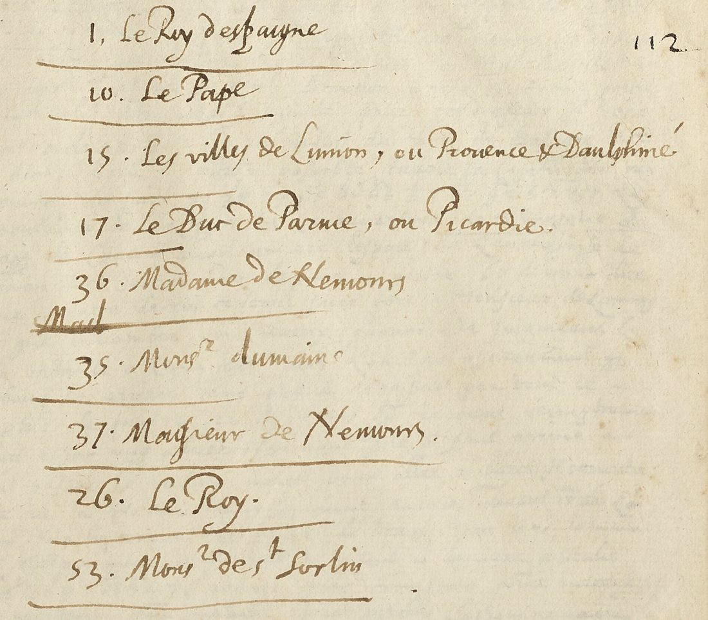
 Bienvenut to “Vostre Altesse”, Paris, February 1590 — both pages transcribed and deciphered with the key slip bound after them, 99.6% of words read: the Pope, Spain and Mayenne agree that Spanish aid will go through the Pope; the writer is probably Bienvenu, the Duke of Savoy’s secretary. write-up
Bienvenut to “Vostre Altesse”, Paris, February 1590 — both pages transcribed and deciphered with the key slip bound after them, 99.6% of words read: the Pope, Spain and Mayenne agree that Spanish aid will go through the Pope; the writer is probably Bienvenu, the Duke of Savoy’s secretary. write-up
 Schöning → Van der Hoop and Princess Wilhelmina, 1783–84 — a private symbol cipher from the Prussian court, key rebuilt from the decipherer’s copies; eleven uncopied letters deciphered (“914 est un infâme”) … write-up
Schöning → Van der Hoop and Princess Wilhelmina, 1783–84 — a private symbol cipher from the Prussian court, key rebuilt from the decipherer’s copies; eleven uncopied letters deciphered (“914 est un infâme”) … write-up
 Arend Willem van Reede → the Hereditary Prince, 1796–1807 — nine code passages tried and left open: his own “Explication” shows a book code whose book is not named … write-up
Arend Willem van Reede → the Hereditary Prince, 1796–1807 — nine code passages tried and left open: his own “Explication” shows a book code whose book is not named … write-up Maximilien d’Yvoy ↔ the Hereditary Prince of Orange, 1797–99 — two Dutch codes rebuilt from the contemporary decipherments (KHA A35-1450–1453); the undeciphered runs point to invisible ink … write-up
Maximilien d’Yvoy ↔ the Hereditary Prince of Orange, 1797–99 — two Dutch codes rebuilt from the contemporary decipherments (KHA A35-1450–1453); the undeciphered runs point to invisible ink … write-up- A cipher letter of 1628 in the Riksarkivet key boxes (R4284) — key matched by Dolly Moulekhi (issue #98): an alphabet strip on another sheet in the same boxes turns its numbers into Swedish, with Latin, about harbours on the Baltic; the strip checked here on the image, the text not yet read. write-up
 Champagne news-letter to the duc de Nevers, 5 June 1590 — deciphered with Nevers key no. 25, found by Michael Brackx (issue #96): the two-digit alphabet rebuilt here from a few glosses turned out to be the Duke’s own key of October 1589; the letter of 5 June now reads in part, with the comte de Soissons and La Noue distrusting each other. write-up
Champagne news-letter to the duc de Nevers, 5 June 1590 — deciphered with Nevers key no. 25, found by Michael Brackx (issue #96): the two-digit alphabet rebuilt here from a few glosses turned out to be the Duke’s own key of October 1589; the letter of 5 June now reads in part, with the comte de Soissons and La Noue distrusting each other. write-up- “W.”, The Standard, 8 and 20 May 1875 (Catokwacopa) — not solved: the letters force DYING DECLARATION and the Oxford lines, about half the rest fit many readings; the Hertford Scholars of 1852–56 point to a Balliol freshman of 1853. write-up

 Philip II → Don Juan of Austria, Madrid, 28 Aug 1574 — read from its clear version, key rebuilt: a royal cipher letter in the Dutch royal archives answering Hürrem Bey, the Sultan’s chief interpreter. write-up
Philip II → Don Juan of Austria, Madrid, 28 Aug 1574 — read from its clear version, key rebuilt: a royal cipher letter in the Dutch royal archives answering Hürrem Bey, the Sultan’s chief interpreter. write-up Juan Gara de Senisteros → Juan de la Peña, Alcalá, 23 Dec 1605 — key recovered from the ciphertext alone, about 97% read: a Spanish letter in Oldenbarnevelt’s papers that wrote its vowels as digits; the writer confesses forging his patron’s signature. write-up
Juan Gara de Senisteros → Juan de la Peña, Alcalá, 23 Dec 1605 — key recovered from the ciphertext alone, about 97% read: a Spanish letter in Oldenbarnevelt’s papers that wrote its vowels as digits; the writer confesses forging his patron’s signature. write-up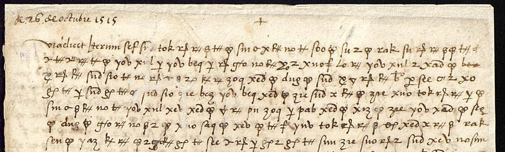
Ferdinand the Catholic to Jerónimo de Vich, Pedrezuela, 26 October 1515 — key recovered from the ciphertext alone by Michael Brackx (issue #94); decoded, not read (0.824): the code groups stand for syllables inside spelled words as well as for words, which is why it resisted; a printed quotation of the letter (Terrateig 1963) then confirmed lines 9–31 and served as a crib. write-up Camus de Pontcarré → Villeroy, 1586 — three cipher blocks read from the margin decipherments, two in part; Michael Brackx corrected Tomokiyo’s key against them · write-up
Camus de Pontcarré → Villeroy, 1586 — three cipher blocks read from the margin decipherments, two in part; Michael Brackx corrected Tomokiyo’s key against them · write-up Malicorne → Henri III, Niort, 21 April 1586 — one stretch read in part, margin-confirmed; the rest decoded, not read; Michael Brackx’s aligned decode with Tomokiyo’s corrected key · write-up
Malicorne → Henri III, Niort, 21 April 1586 — one stretch read in part, margin-confirmed; the rest decoded, not read; Michael Brackx’s aligned decode with Tomokiyo’s corrected key · write-up Matignon to Henri III, Guyenne, May 1586 — read from the contemporary glosses: f. 234r in full, eight pages in part: Michael Brackx transcribed all ten pages of the only known letter in Matignon’s “tuple” cipher, took the key from the decipherer’s glosses and translated it: the Garonne trade cut by Caumont, Gascon captains talking of a league, rewards for the baron de Vaillac; f. 236v still fragments. write-up
Matignon to Henri III, Guyenne, May 1586 — read from the contemporary glosses: f. 234r in full, eight pages in part: Michael Brackx transcribed all ten pages of the only known letter in Matignon’s “tuple” cipher, took the key from the decipherer’s glosses and translated it: the Garonne trade cut by Caumont, Gascon captains talking of a league, rewards for the baron de Vaillac; f. 236v still fragments. write-up Saint-Luc to Henri III, Brouage, June 1586 — decoded, not read: Michael Brackx corrected Tomokiyo’s table on the f. 245 margin decipherments and decoded f. 260, on the Rochelais blockade and the salt of La Rochelle; over a third of the letters still rest on multi-valued signs. write-up
Saint-Luc to Henri III, Brouage, June 1586 — decoded, not read: Michael Brackx corrected Tomokiyo’s table on the f. 245 margin decipherments and decoded f. 260, on the Rochelais blockade and the salt of La Rochelle; over a third of the letters still rest on multi-valued signs. write-up- An informant at Ernst of Bavaria’s court to Duke Wilhelm V, 12 June 1583 — key recovered from the ciphertext alone by Ryan Xu (issue #89); re-read here on the images, read in part (92.8% of words). Court news of the Cologne war and a plan to bring “Susanna” down to Cologne or Liège. write-up
 Duke Ernst of Bavaria to Wilhelm V, Cologne, April–May 1583 — earlier decipherment found: the “Post Scripta” sheets are a dot cipher, deciphered in full by A. C. Leighton in 1974, not grilles over lost letters. Pointer from ry-xu (issue #88). write-up
Duke Ernst of Bavaria to Wilhelm V, Cologne, April–May 1583 — earlier decipherment found: the “Post Scripta” sheets are a dot cipher, deciphered in full by A. C. Leighton in 1974, not grilles over lost letters. Pointer from ry-xu (issue #88). write-up Keresdi Bethlen cipher letters, 1645–1648 — two Hungarian letter alphabets recovered from the ciphertext alone: the 1646 letter to the Hofmeister, Zsigmond Rákóczi’s ciphers of 1648, and R4939, in which the Rákóczi brothers tell the Polish-diet envoys their father is dying and press Zsigmond’s candidacy (2,775 of 4,785 cipher letters). write-up
Keresdi Bethlen cipher letters, 1645–1648 — two Hungarian letter alphabets recovered from the ciphertext alone: the 1646 letter to the Hofmeister, Zsigmond Rákóczi’s ciphers of 1648, and R4939, in which the Rákóczi brothers tell the Polish-diet envoys their father is dying and press Zsigmond’s candidacy (2,775 of 4,785 cipher letters). write-up Vargas to Charles V, Venice, 25 August 1552 — the decipherment written on the letter in 1552 transcribed and checked against the cipher: the Pope suspected of working with France over Siena. write-up
Vargas to Charles V, Venice, 25 August 1552 — the decipherment written on the letter in 1552 transcribed and checked against the cipher: the Pope suspected of working with France over Siena. write-up Vetési Kökényesdi to Rákóczi, 9 January 1706 — Rákóczi’s own key found among the DECODE key records and matched to a glossed newsletter: Nice castle in French hands, Holland tiring of the war. write-up
Vetési Kökényesdi to Rákóczi, 9 January 1706 — Rákóczi’s own key found among the DECODE key records and matched to a glossed newsletter: Nice castle in French hands, Holland tiring of the war. write-up- The reading audit, 22–23 October 2026 — every published reading re-checked against the read bar (George Lasry: a reading must build coherent sentences and be translated, not only decode). 126 targets changed: 42 dropped a class, 28 of them no longer counting as a reading at all; 3 moved up; most of the rest were re-read document by document, and contemporary decipherments were found among the DECODE images of twelve targets (Alessandrino, Ceva, Morosini 1589, the Spagna 423 nunciature, Sánchez 1522–23, Vargas and others). On 24 October the read bar was set per document: a document counts as read only when 95% of its words read as sense, so 155 documents that build sentences at under 95% are now read in part, and 35 targets moved from read to read in part. Each write-up now says what reads and what is only decoded. write-ups

 Mayenne and Forget to Henri III and Villeroy, Guyenne 1585–86 — Mayenne–Forget’s Cipher-1: 14 of 16 documents deciphered into sentences and translated (86% of the cipher). After George Lasry found the decryptions unusable, each leaf was rebuilt sentence by sentence on the images, with about 400 of Michael Brackx’s figure labels corrected: Pons and Taillebourg, Mayenne’s reputation, Marmande, credit, the siege of Monségur (f. 196v transcribed here). The clear copy of fr. 15571 f. 177 found on f. 176; ff. 123r and 124r stay decoded, not read. write-up
Mayenne and Forget to Henri III and Villeroy, Guyenne 1585–86 — Mayenne–Forget’s Cipher-1: 14 of 16 documents deciphered into sentences and translated (86% of the cipher). After George Lasry found the decryptions unusable, each leaf was rebuilt sentence by sentence on the images, with about 400 of Michael Brackx’s figure labels corrected: Pons and Taillebourg, Mayenne’s reputation, Marmande, credit, the siege of Monségur (f. 196v transcribed here). The clear copy of fr. 15571 f. 177 found on f. 176; ff. 123r and 124r stay decoded, not read. write-up
 The Louis XIII–Sabran cipher, 1631–1635 — key recovered from the ciphertext by George Lasry; 18 letters deciphered from 43 images of Baluze 155, fr. 4134 and fr. 4135. Monaco, a Savoyard plot on Savona, Genoa in the war of 1635; one code and seven listed leaves open. write-up
The Louis XIII–Sabran cipher, 1631–1635 — key recovered from the ciphertext by George Lasry; 18 letters deciphered from 43 images of Baluze 155, fr. 4134 and fr. 4135. Monaco, a Savoyard plot on Savona, Genoa in the war of 1635; one code and seven listed leaves open. write-up- Saint-Luc’s cipher letter, 30 January 1586 — key recovered from the ciphertext by George Lasry: a homophonic table with word signs. An agent working on a household written in cover names. write-up
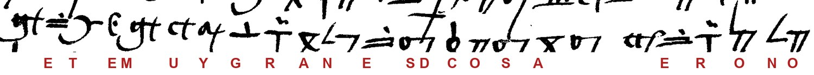
Espagnol 318 no. 95, 8 January 1497 — George Lasry deciphers the whole recto with his own key. Famine, the French bid for the city and a cardinal’s peace mission; five name codes open. write-up- Sabran to Bouthillier, Genoa 1633 — contributed: Harumi-Matsuba deciphered with George Lasry’s key the cipher passages of nine leaves of Sabran’s letter-book: a plot on Savona, the munitionnaire and two others arrested. An AI-only transcription; measured here at about three quarters of the letters in words, two leaves checked on the images. write-up

 Bilia to Francesco II Sforza, Burgos, 22 November 1527 — contributed: Harumi-Matsuba deciphered the first cipher page with Bilia’s own Sforza key R5258; checked here against the project’s copy of the key (440 of 459 values agree); the verso’s seven cipher lines stay open. write-up
Bilia to Francesco II Sforza, Burgos, 22 November 1527 — contributed: Harumi-Matsuba deciphered the first cipher page with Bilia’s own Sforza key R5258; checked here against the project’s copy of the key (440 of 459 values agree); the verso’s seven cipher lines stay open. write-up
 Le Tellier to Marca, 26 April 1644 — contributed: Harumi-Matsuba (with Claude and Codex) deciphered the one 1644 Le Tellier–Marca letter that has no decipherment of the time, with Tomokiyo’s table; 600 of 619 signs keep their key value, no person has checked the transcription yet. Marca’s Barcelona host was chosen by a friend of Marshal de La Motte to spy on him. write-up
Le Tellier to Marca, 26 April 1644 — contributed: Harumi-Matsuba (with Claude and Codex) deciphered the one 1644 Le Tellier–Marca letter that has no decipherment of the time, with Tomokiyo’s table; 600 of 619 signs keep their key value, no person has checked the transcription yet. Marca’s Barcelona host was chosen by a friend of Marshal de La Motte to spy on him. write-up Guillaume Ancel, Vienna, October–December 1577 — contributed: Harumi-Matsuba deciphered with AI, using Tomokiyo’s Vulcob–Ancel key, the cipher passages of four letters that have no decipherment of the time: Archduke Matthias’s flight to the Low Countries and the Emperor’s double game with Spain. Measured and spot-checked here; no person has checked the transcription. write-up
Guillaume Ancel, Vienna, October–December 1577 — contributed: Harumi-Matsuba deciphered with AI, using Tomokiyo’s Vulcob–Ancel key, the cipher passages of four letters that have no decipherment of the time: Archduke Matthias’s flight to the Low Countries and the Emperor’s double game with Spain. Measured and spot-checked here; no person has checked the transcription. write-up
 Scipion de Fiesque, Vienna, to Catherine de’ Medici and Charles IX, 1567–69 — contributed: Harumi-Matsuba applied Tomokiyo’s key to an AI transcription of all 44 cipher pages of BnF fr. 15919; measured here, 81% of the decoded letters fall in French words and the one letter with a decipherment of the time agrees on 83.8%. write-up
Scipion de Fiesque, Vienna, to Catherine de’ Medici and Charles IX, 1567–69 — contributed: Harumi-Matsuba applied Tomokiyo’s key to an AI transcription of all 44 cipher pages of BnF fr. 15919; measured here, 81% of the decoded letters fall in French words and the one letter with a decipherment of the time agrees on 83.8%. write-up The viceroy of Sicily to Ferdinand, Messina, 27 April 1503 — key recovered from the ciphertext by Michael Brackx: a 39-sign homophonic alphabet and about twenty code groups. The day before Cerignola: Seminara’s aftermath and Portocarrero’s death. Split from no. 93, a different key. write-up
The viceroy of Sicily to Ferdinand, Messina, 27 April 1503 — key recovered from the ciphertext by Michael Brackx: a 39-sign homophonic alphabet and about twenty code groups. The day before Cerignola: Seminara’s aftermath and Portocarrero’s death. Split from no. 93, a different key. write-up- An unaddressed Spanish cipher of 8 January 1497 (Espagnol 318 no. 95) — every line deciphered but ten code groups: Lasry’s lines 1–13 and, with his alphabet, Michael Brackx’s first reading of the rest. Brackx’s corrections to Lasry’s lines await his review. write-up
 Mayenne–Forget’s Cipher-2: Matignon at Monségur and two autumn letters, 1586 — deciphered by Harumi-Matsuba and Brett Burford with Tomokiyo’s key and Claude: 4,560 of 5,293 signs in runs of French, measured here, no human sign check yet. Twelve hundred shots against the wall, Sacramore de Birague wounded, an army breaking up in winter. write-up
Mayenne–Forget’s Cipher-2: Matignon at Monségur and two autumn letters, 1586 — deciphered by Harumi-Matsuba and Brett Burford with Tomokiyo’s key and Claude: 4,560 of 5,293 signs in runs of French, measured here, no human sign check yet. Twelve hundred shots against the wall, Sacramore de Birague wounded, an army breaking up in winter. write-up A six-page despatch to Henri III in Matignon’s Cipher-3, autumn 1586 — deciphered by Brett Burford with Tomokiyo’s key and values from a letter deciphered in 1585: 2,540 of 2,836 signs, measured here. Added to the Cipher-3 page with the two Poitou slips. write-up
A six-page despatch to Henri III in Matignon’s Cipher-3, autumn 1586 — deciphered by Brett Burford with Tomokiyo’s key and values from a letter deciphered in 1585: 2,540 of 2,836 signs, measured here. Added to the Cipher-3 page with the two Poitou slips. write-up- Two intelligence notes in Matignon’s Cipher-3, Poitou 1586 — deciphered by alejandrozarco with Tomokiyo’s key, checked and extended on a sibling deciphered at the time: 1,179 of 1,243 signs. Split from the Mayenne–Forget despatches, which use another cipher. write-up

 The Japanese Army’s numeric kana cipher, 1902–04 — Harumi-Matsuba rebuilt the two-digit kana table from an outgoing draft and read four telegrams, among them a January 1904 request for maps of Korea that was never translated. Checked here with an independent decoder, a permutation control and the forms; AI transcriptions only. write-up
The Japanese Army’s numeric kana cipher, 1902–04 — Harumi-Matsuba rebuilt the two-digit kana table from an outgoing draft and read four telegrams, among them a January 1904 request for maps of Korea that was never translated. Checked here with an independent decoder, a permutation control and the forms; AI transcriptions only. write-up Huang Xing’s three-kana telegrams, May 1916 — decoded with Tomokiyo’s formula: the reply of 25 May from our own transcription, correcting the decode filed in 1916, and the two telegrams of 20 May as read by Harumi-Matsuba. 86 of the 229 groups of the 20 May stream needed a spelling correction; the first telegram matches its 1916 print in 102 of 107 characters. write-up
Huang Xing’s three-kana telegrams, May 1916 — decoded with Tomokiyo’s formula: the reply of 25 May from our own transcription, correcting the decode filed in 1916, and the two telegrams of 20 May as read by Harumi-Matsuba. 86 of the 229 groups of the 20 May stream needed a spelling correction; the first telegram matches its 1916 print in 102 of 107 characters. write-up Rusdorff to Oxenstierna, London, February 1625 — key recovered from the ciphertext by George Lasry: a homophonic table and an alphabetical nomenclator. Three Latin letters on the Swedish and Danish offers for the Palatinate and the French marriage; two codes open. write-up
Rusdorff to Oxenstierna, London, February 1625 — key recovered from the ciphertext by George Lasry: a homophonic table and an alphabetical nomenclator. Three Latin letters on the Swedish and Danish offers for the Palatinate and the French marriage; two codes open. write-up The Devil’s Handwriting, Ambrogio 1539 — explained by the source, not a cipher: Ambrogio’s next page says the conjurer was killed by peasants “with as many iron tridents as the invoked Amon had drawn in his characters”. The commonest sign is a trident; calibrated solvers, cribs and Amadi’s demon names find no text. write-up
The Devil’s Handwriting, Ambrogio 1539 — explained by the source, not a cipher: Ambrogio’s next page says the conjurer was killed by peasants “with as many iron tridents as the invoked Amon had drawn in his characters”. The commonest sign is a trident; calibrated solvers, cribs and Amadi’s demon names find no text. write-up Van Dedem to Van de Spiegel, Constantinople, 1789 and 1793 — Feyseel Nur found the order of the legation’s word code from the deciphered siblings: alphabetical within blocks of 500 groups. Both letters are decoded in part, 41% of groups firmly. “ENVOYÉ het verlangen en van PORTA ontrent het doen”. write-up
Van Dedem to Van de Spiegel, Constantinople, 1789 and 1793 — Feyseel Nur found the order of the legation’s word code from the deciphered siblings: alphabetical within blocks of 500 groups. Both letters are decoded in part, 41% of groups firmly. “ENVOYÉ het verlangen en van PORTA ontrent het doen”. write-up
 Baudouin-Desportes to Aldobrandini and Frachetta, Paris, 22 July 1593 — Paolo Rosson deciphered both League letters with Tomokiyo’s polyphonic key, which the royal office never read and this project could not; checked here, 98.5% of cipher words. “et doit dimanche aller a la messe”. write-up
Baudouin-Desportes to Aldobrandini and Frachetta, Paris, 22 July 1593 — Paolo Rosson deciphered both League letters with Tomokiyo’s polyphonic key, which the royal office never read and this project could not; checked here, 98.5% of cipher words. “et doit dimanche aller a la messe”. write-up
 Marie de Médicis to Brèves, Rome, 1610 — Brice Dudout deciphered both ciphered passages with Henri IV’s key for Brèves, found at BnF fr. 3462 (not 3642); partial, 95 of 98 signs checked here. “que le pape recognoissant leurs arogance et sentant sa timidite”. write-up
Marie de Médicis to Brèves, Rome, 1610 — Brice Dudout deciphered both ciphered passages with Henri IV’s key for Brèves, found at BnF fr. 3462 (not 3642); partial, 95 of 98 signs checked here. “que le pape recognoissant leurs arogance et sentant sa timidite”. write-up
 Sun Yat-sen and Soong Ching-ling (“Rosamonde”), 1915–1916 — Brice Dudout recovered the key from the cipher alone: 22 English telegrams in a reciprocal letter substitution; partial. “Whenever ye see Yung you inflict tor[t]ure [u]pon me.” write-up
Sun Yat-sen and Soong Ching-ling (“Rosamonde”), 1915–1916 — Brice Dudout recovered the key from the cipher alone: 22 English telegrams in a reciprocal letter substitution; partial. “Whenever ye see Yung you inflict tor[t]ure [u]pon me.” write-up Costabili to Ercole d’Este, 1493 — Three clear letters removed from the open cipher group. Rectos and versos inspected; no decipherment claimed. write-up
Costabili to Ercole d’Este, 1493 — Three clear letters removed from the open cipher group. Rectos and versos inspected; no decipherment claimed. write-up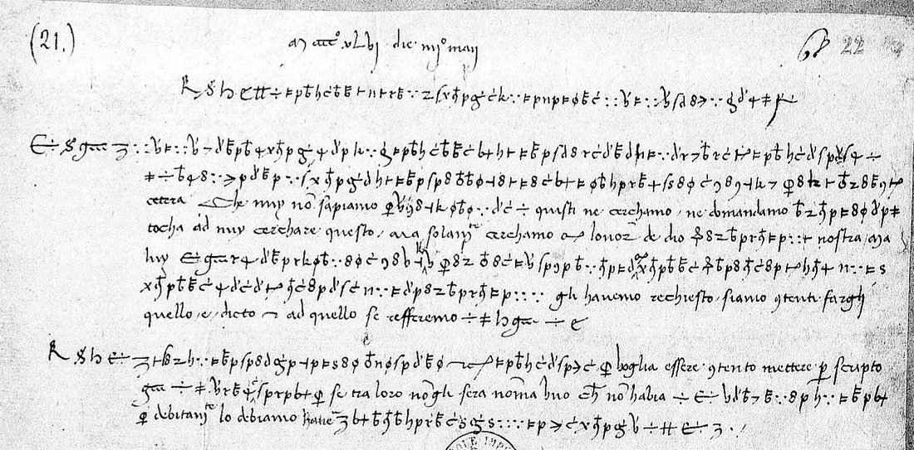
Two Sforza letters of 4 May 1446, to Zorzo del Maino and from Milan — George Lasry recovered the key from the ciphertext with CTTS, refined by Astra and Fable 5.1; partial. Count Francesco’s obligations, “la secvreza nostra”, and a move against Cremona; 721 of 827 cipher signs give sense, where the project’s own attempt in September had failed. write-up- Rodrigo Niño to Charles V, 19 March 1522 — George Lasry recovered the key with CTTS cryptanalysis. Eight lines on unpaid troops and the towns of Naples; 260 elements, 49 key entries, one ambiguous sign. write-up
 A Sienese slip on the Milan–Ferrara league, c. 1440–41 — the clear memorandum on the same sheet is its decipherment, aligned sign by sign here: the Duke of Milan and the Marquis of Ferrara leagued against Venice, and Bianca Maria offered to Leonello d’Este; all 166 cipher signs read with the key it gives. write-up
A Sienese slip on the Milan–Ferrara league, c. 1440–41 — the clear memorandum on the same sheet is its decipherment, aligned sign by sign here: the Duke of Milan and the Marquis of Ferrara leagued against Venice, and Bianca Maria offered to Leonello d’Este; all 166 cipher signs read with the key it gives. write-up Siena nos. 7, 19 and 21, fifteenth century — attempted, not solved: an orator at Milan whose own gloss rules out the embassy’s filed key, envoys kept waiting by the S. Capitano, and a letter in crosses and squares; each now has its own page. no. 7 · no. 19 · no. 21
Siena nos. 7, 19 and 21, fifteenth century — attempted, not solved: an orator at Milan whose own gloss rules out the embassy’s filed key, envoys kept waiting by the S. Capitano, and a letter in crosses and squares; each now has its own page. no. 7 · no. 19 · no. 21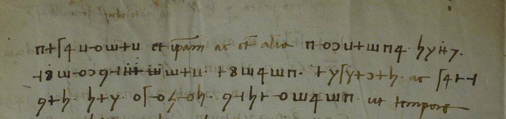
 Maximilian I to the Sienese orators, Pisa, November 1496 — George Lasry recovers the key of no. 18 independently with CTTS and Claude and gives the complete reading: the King’s League articles, a 5,000-ducat loan and war at Ponte a Valiano; his key agrees with the project’s of September on 35 of 38 letter signs, and his dating replaces ours. write-up
Maximilian I to the Sienese orators, Pisa, November 1496 — George Lasry recovers the key of no. 18 independently with CTTS and Claude and gives the complete reading: the King’s League articles, a 5,000-ducat loan and war at Ponte a Valiano; his key agrees with the project’s of September on 35 of 38 letter signs, and his dating replaces ours. write-up
 Donato Acciaiuoli to Lorenzo de’ Medici, Rome, 13 June 1478 — George Lasry recovers the key from the ciphertext alone with CTTS and Claude: a Florentine letter in the Sienese file, seven weeks after the Pazzi conspiracy; Gianfrancesco Gonzaga offers 80 men-at-arms. write-up
Donato Acciaiuoli to Lorenzo de’ Medici, Rome, 13 June 1478 — George Lasry recovers the key from the ciphertext alone with CTTS and Claude: a Florentine letter in the Sienese file, seven weeks after the Pazzi conspiracy; Gianfrancesco Gonzaga offers 80 men-at-arms. write-up A Sienese slip on Castiglione, 1440s–50s? — George Lasry recovers the key from the decipherment written below the cipher, with CTTS and Claude: Castiglione this winter with the King of Aragon’s assent, the war another year. write-up
A Sienese slip on Castiglione, 1440s–50s? — George Lasry recovers the key from the decipherment written below the cipher, with CTTS and Claude: Castiglione this winter with the King of Aragon’s assent, the war another year. write-up A Sienese slip, “presura di Montepulciano” — deciphered at the time letter by letter above the line; transcribed and checked sign by sign. write-up
A Sienese slip, “presura di Montepulciano” — deciphered at the time letter by letter above the line; transcribed and checked sign by sign. write-up Siena nos. 13 and 16, the Pope and Bologna, c. 1527–29 — George Lasry rebuilds the key from the clear copy filed in the same bundle, with CTTS and Claude Fable 5.1: a letter proposing to seize a castle as Lautrec took Modena and Reggio. write-up
Siena nos. 13 and 16, the Pope and Bologna, c. 1527–29 — George Lasry rebuilds the key from the clear copy filed in the same bundle, with CTTS and Claude Fable 5.1: a letter proposing to seize a castle as Lautrec took Modena and Reggio. write-up An unsigned slip to a Signoria, 16th century — George Lasry recovers the key from the ciphertext alone with CTTS and Claude: a pigpen-like grid in which a dot moves a frame to another block of letters; pieces of artillery and a suspicious envoy, four number codes open. write-up
An unsigned slip to a Signoria, 16th century — George Lasry recovers the key from the ciphertext alone with CTTS and Claude: a pigpen-like grid in which a dot moves a frame to another block of letters; pieces of artillery and a suspicious envoy, four number codes open. write-up Mario Bandini from Innsbruck to the Signori of Siena, 4 January 1547 — George Lasry gives values to 75 of 240 cipher signs by crib dragging with CTTS and Claude Opus 5.5: discord among the factions and a minister’s warning; code words buf, abs, som and Za open. write-up
Mario Bandini from Innsbruck to the Signori of Siena, 4 January 1547 — George Lasry gives values to 75 of 240 cipher signs by crib dragging with CTTS and Claude Opus 5.5: discord among the factions and a minister’s warning; code words buf, abs, som and Za open. write-up Bartolomeo Tantucci to Antonio del Vescovo, August 1528 — George Lasry recovers the “cifra di Balìa” from the ciphertext alone with CTTS and Claude: about 85% of the letter, on bishoprics for the nephews, the Cardinal of Naples and Pitigliano. write-up
Bartolomeo Tantucci to Antonio del Vescovo, August 1528 — George Lasry recovers the “cifra di Balìa” from the ciphertext alone with CTTS and Claude: about 85% of the letter, on bishoprics for the nephews, the Cardinal of Naples and Pitigliano. write-up
 The bishop(?) of Fermo to Sforza, Naples, 10 March 1413 — George Lasry recovers the key from the ciphertext alone with CTTS and Claude: a letter wholly in invented signs, in which King Ladislaus offers Sforza a bride of his own house. write-up
The bishop(?) of Fermo to Sforza, Naples, 10 March 1413 — George Lasry recovers the key from the ciphertext alone with CTTS and Claude: a letter wholly in invented signs, in which King Ladislaus offers Sforza a bride of his own house. write-up Michel de Seure from Lisbon to de Fresne and Henri II, December 1558 — Angus Robinson recovers the key from three deciphered paragraphs bound beside the letters and deciphers all five: 118 signs, 21 nulls, Peruvian silver and Seure’s debts, 99.6% of the cipher given a value. write-up
Michel de Seure from Lisbon to de Fresne and Henri II, December 1558 — Angus Robinson recovers the key from three deciphered paragraphs bound beside the letters and deciphers all five: 118 signs, 21 nulls, Peruvian silver and Seure’s debts, 99.6% of the cipher given a value. write-up- Riksarkivet R4306, undated Dutch report — Transcribed with CTTS, then solved with Opus 5.5; contributed by George Lasry. Edited Dutch and English, visual numerical key and five mechanical lines; four codes remain open. write-up
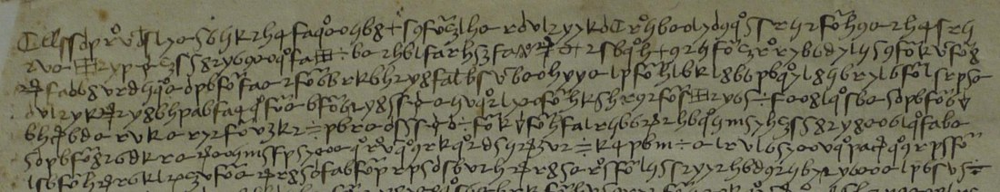
 Siena nos. 20 and 23, spring 1413 — George Lasry recovers the key from the ciphertext alone with CTTS and Claude and deciphers both sheets in full: a captain at Perugia to King Ladislaus, and two royal memoranda to keep Paolo Orsini shut in the Marche. write-up
Siena nos. 20 and 23, spring 1413 — George Lasry recovers the key from the ciphertext alone with CTTS and Claude and deciphers both sheets in full: a captain at Perugia to King Ladislaus, and two royal memoranda to keep Paolo Orsini shut in the Marche. write-up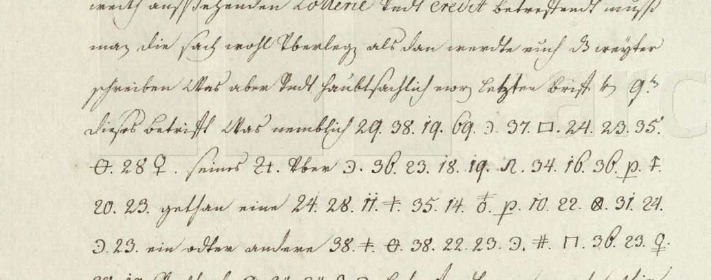
 Charles VI to Count Windischgrätz in the private key, 1720–22 — deciphered with the Emperor’s private key R5018: a Spanish marriage for his children, “beede so klein”. Split from the letter of February 1720, which is in the Chancellery key. write-up
Charles VI to Count Windischgrätz in the private key, 1720–22 — deciphered with the Emperor’s private key R5018: a Spanish marriage for his children, “beede so klein”. Split from the letter of February 1720, which is in the Chancellery key. write-up Beatrice d’Aragona to Ippolito d’Este, Naples, 1505 — not a cipher: plain Italian of 1505, not 1504, which says she has no cipher. Split from her cipher letters of 1482 and 1486. write-up
Beatrice d’Aragona to Ippolito d’Este, Naples, 1505 — not a cipher: plain Italian of 1505, not 1504, which says she has no cipher. Split from her cipher letters of 1482 and 1486. write-up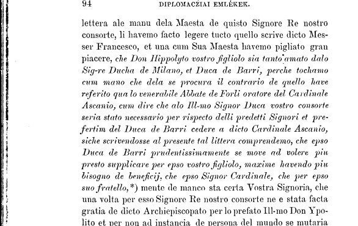
Beatrice d’Aragona to Eleonora, Buda, 2 May 1486 — deciphered at the time on slips laid over the cipher, and printed in 1877. Its own entry, two months after a new cipher was sent. write-up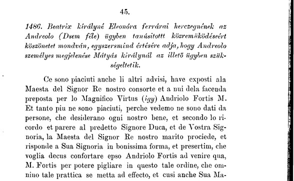
Beatrice d’Aragona to Eleonora, Buda, 8 March 1486 — printed deciphered in 1878; written in the sisters’ old cipher, and enclosing a new one. Split from the 1482 letters, whose alphabet looks different. write-up- Pápai to Rákóczi, Belgrade, 6 March 1710 — not solved: six passages in a graphic-sign alphabet; a validated solver finds no Hungarian and the photographs cannot settle the signs. Split from Pápai’s numeric despatches, which now meet the read bar on their own (99.4%). write-up
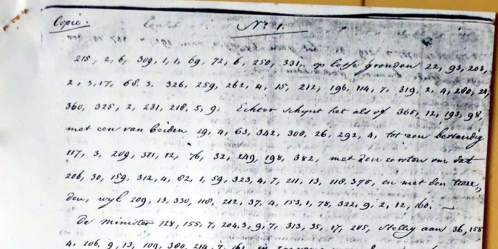
DECODE R2236, the Dutch copies in the Hereditary Prince file — not solved: numbers between clear Dutch words, in a list other than the one that decrypts its sibling R2239. Split from the Hereditary Prince’s letter of 1796. write-up
 Henri IV to Maisse at Venice, February and April 1593 — existing decipherment: the contemporary clear copies in Brienne 13 give both letters; f. 406 is the twin of f. 404. Split from the November 1592 letters, which are in a different cipher. write-up
Henri IV to Maisse at Venice, February and April 1593 — existing decipherment: the contemporary clear copies in Brienne 13 give both letters; f. 406 is the twin of f. 404. Split from the November 1592 letters, which are in a different cipher. write-up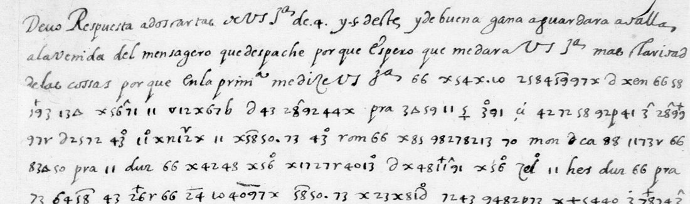
Diego de Ibarra from Paris, 10 July 1593 — Tomokiyo’s Feria–Mansfeld table applied to a full transcription: 224 of 598 groups, the word codes open. Split from the despatches in the Spanish office cipher of 1592–93. write-up
 Van Swieten from Bonn to Cobenzl, undated (1757–58) — read from the decipherment written under the numbers; aligned, it gives the 1757 table. Split from the 1759 letters, whose table is different and whose key was recovered from the ciphertext alone. write-up
Van Swieten from Bonn to Cobenzl, undated (1757–58) — read from the decipherment written under the numbers; aligned, it gives the 1757 table. Split from the 1759 letters, whose table is different and whose key was recovered from the ciphertext alone. write-up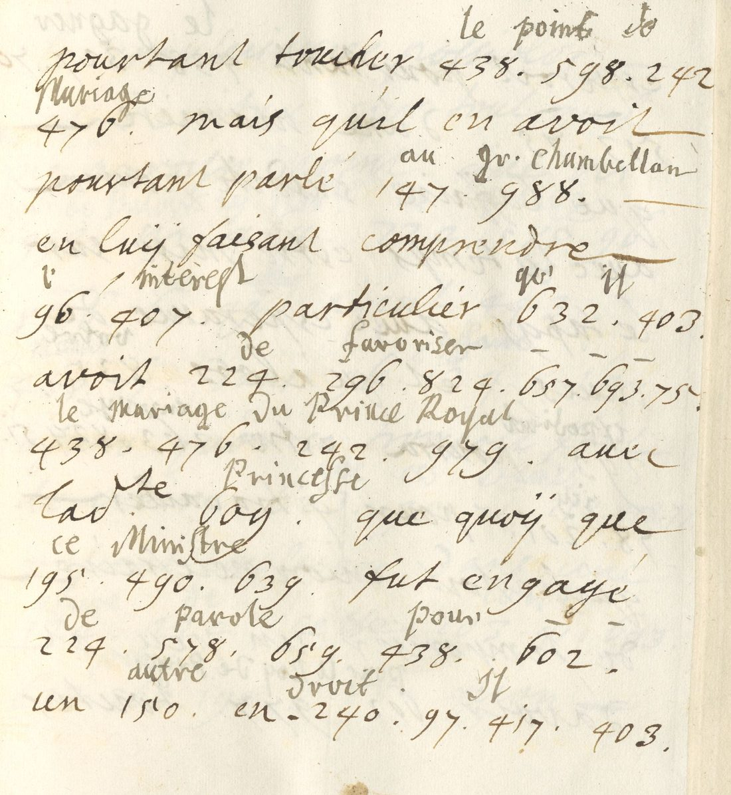
Heusch, Hattorf and the Elector to J. H. von Ilten, 1705–1706 — deciphered at the time: 411 of 418 code groups glossed between the lines, transcribed and checked. Split from the 1697 letter, which is in another code. write-up- Castelcicala’s second code, two undated letters to Naples — not solved yet: transcribed, 969 groups in a code different from his usual one; faint pencil glosses are the next crib to try. Split from the Castelcicala despatches, which are in the Segreteria di Stato code. write-up
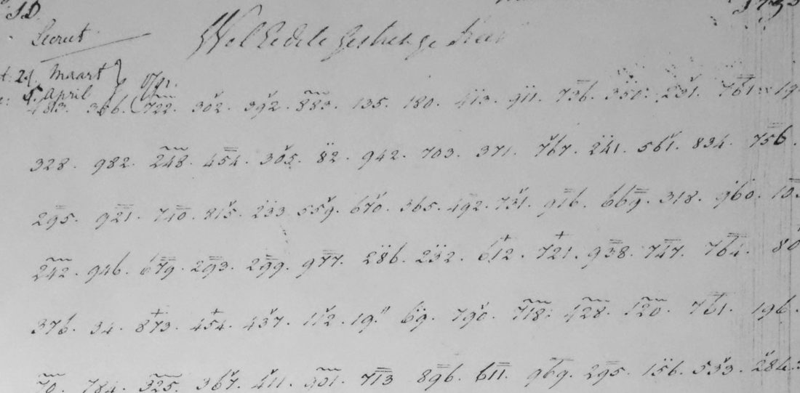
Van Reede to the Secret Committee, Berlin, 24 March 1793 — not solved: a marked three-digit code (513 forms in 696 groups) with no key on DECODE and no crib. Split from van Reede’s 1787–88 despatches, which are in the Grand Chiffre. write-up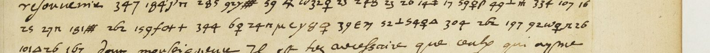
Laurière to the duc de Nevers, July–August 1593 — three letters in his own key sheet, Nevers key no. 57, now one entry: 320 of 334 counted tokens, f. 58 at 94.8%. Split from the Champagne news-letters of 1590, which use other ciphers. write-up- Bienvenut to the duc de Nevers, Paris, February 1590 — deciphered with the name key bound after the copy: 26 of 26 code numbers. Split from the Champagne news-letters, which use a two-digit alphabet. write-up
- Fr. Pedro de Vico to Guillem Carbonell, Avignon, 4 December 1398 — not solved: one cipher line “de clave desconocida”, never printed and not imaged. Split from Benedict XIII’s letters to Climent. write-up
- Santa Cruz to Francesc Climent, Avignon, 22 October 1399 — deciphered by Puig y Puig in 1920; the cipher is not imaged and its key is not known. Split from Benedict XIII’s letters, whose key is not shown to be the same. write-up
- Jafet to Francesc Climent, 15 September 1400 — one sentence deciphered in print by Puig y Puig, 1920; the rest not printed. Split from Benedict XIII’s letters. write-up
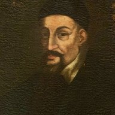
Alfonso de Exea to Francesc Climent, Perpignan, 23 August 1408 — deciphered by Puig y Puig in 1920, about 2,090 words; the cipher is not imaged. Split from Benedict XIII’s letters. write-up- Pedro Comuel to Francesc Climent, 21 December 1415 — deciphered by Puig y Puig in 1920; the cipher is not imaged. Split from Benedict XIII’s letters. write-up
- Pedro Comuel to Francesc Climent, 27 June 1416 — deciphered by Puig y Puig in 1920; the cipher is not imaged. Split from Benedict XIII’s letters. write-up
- Van Dedem to the Burger Agent van der Goes, Constantinople, 26 August 1799 — not solved: a marked code of short number groups, no key known, not yet transcribed. Split from Van Dedem’s 1788–93 despatches, which are in another code. write-up
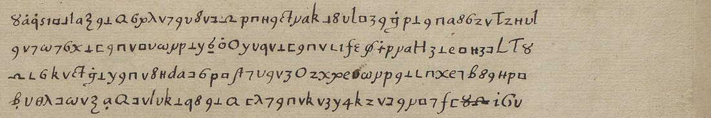
 Throckmorton to Elizabeth I, Paris, 10 July 1559 — Tomokiyo’s Cipher 1 key applied, partial: about 85–90% of an unprinted letter, now on its own page. Split from the Add MS 4136 leaves page; the margin code and Wood’s line are other ciphers. write-up
Throckmorton to Elizabeth I, Paris, 10 July 1559 — Tomokiyo’s Cipher 1 key applied, partial: about 85–90% of an unprinted letter, now on its own page. Split from the Add MS 4136 leaves page; the margin code and Wood’s line are other ciphers. write-up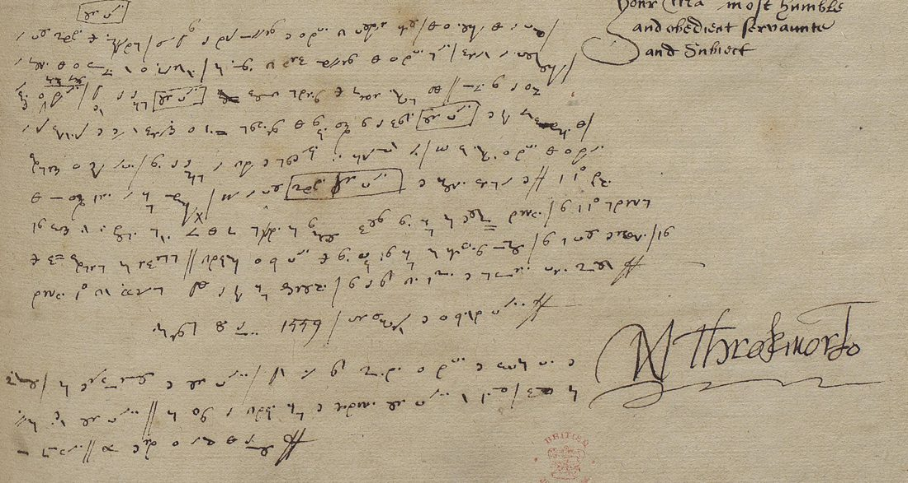
The margin code on Throckmorton’s leaf, 1559 — not solved: a word-sign code, half its 222 groups used once, needing its key or the 8 July despatches. Split from the Throckmorton letter it sits under. write-up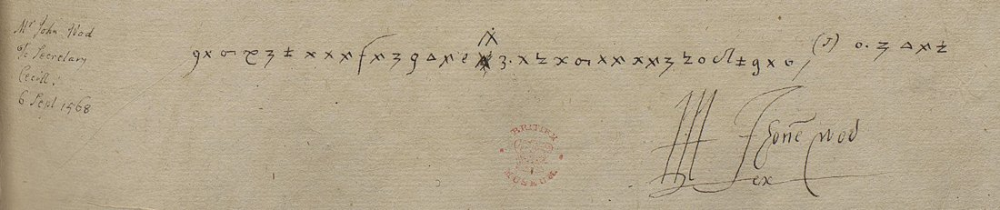
 John Wood to Cecil, 6 September 1568 — not solved: 39 symbols with no unique solution; the printed cipher phrase does not fit. Split from the Throckmorton leaves page, a different cipher. write-up
John Wood to Cecil, 6 September 1568 — not solved: 39 symbols with no unique solution; the printed cipher phrase does not fit. Split from the Throckmorton leaves page, a different cipher. write-up- Noailles to the Cardinal de Lorraine, Venice, 13 November 1558 — not solved: the decipherment of the time stands in the margin, half lost in the binding; the cipher itself not yet worked. Split from the La Guiche entry, a different cipher. write-up
- Beverning and Vande Perre to Boreel, Westminster, 1653 — not solved: 136 groups that no key of 1653–60 reads, though a matched control shows the length suffices. The first of four Thurloe intercepts, now one entry per cipher. write-up
- Du Gard to White, Brussels, 10 June 1656 — not solved: a 27-sign cover address, too short. Split from the Thurloe intercepts. write-up
- Brussels to Mr Copinger, 12 August 1656 — not solved: a twelve-digit name and a four-digit word, too short. Split from the Thurloe intercepts. write-up
- Waddall to “Vanyeare” at Bruges, 22 August 1656 — not solved: eight words in homophonic figures, too short to pin. Split from the Thurloe intercepts. write-up
- The comte d’Affry to the Marquis de Stainville, August 1757 — not solved: 761 groups of a code of its own, with no key or decipherment found. Split from d’Affry’s letters to Paris, which are in another code. write-up

 Sormano and de Vaulx to François I, Ferrara, 27 February 1529 — the third sheet of no. 63 (f. 123), deciphered with Lasry’s key: about 386 of 389 signs; the postscript reports the Pope relapsed and asks for the French cardinals to be readied for a conclave. Arya Sanketbhai Patel’s separate entry on the same three letters, which found the sheet, is merged into this one: one cipher, one page. write-up
Sormano and de Vaulx to François I, Ferrara, 27 February 1529 — the third sheet of no. 63 (f. 123), deciphered with Lasry’s key: about 386 of 389 signs; the postscript reports the Pope relapsed and asks for the French cardinals to be readied for a conclave. Arya Sanketbhai Patel’s separate entry on the same three letters, which found the sheet, is merged into this one: one cipher, one page. write-up- The police radiogram of 16 June 1942 (A115), Mogilev — read from Bletchley’s decrypt, the report of the Borki massacre; the key was not recovered. Split from the 27 February 1942 messages, which are in a different daily key and keep their own page. write-up
 Giuliano Caprile’s sign cipher, 1520–21 — the key recovered from Somogyi’s 2025 decipherment now has its own entry: 992 of 1,236 cipher letters and signs deciphered over three letters. Split from the Caprile and Cistarelli page; Caprile’s 1519 letters and Cistarelli’s figures are other ciphers. write-up
Giuliano Caprile’s sign cipher, 1520–21 — the key recovered from Somogyi’s 2025 decipherment now has its own entry: 992 of 1,236 cipher letters and signs deciphered over three letters. Split from the Caprile and Cistarelli page; Caprile’s 1519 letters and Cistarelli’s figures are other ciphers. write-up- Giuliano Caprile, Eger, 9 March 1519 — not solved: the 1519 two-tier cipher, with tables rebuilt from the 1882 decipherments of his other letters, gives no Italian. Split from the Caprile and Cistarelli page; the 1520–21 cipher has its own page. write-up
- Alfonso Cistarelli to Cardinal Ippolito d’Este, Eger, 25 July 1520 — not solved: two-digit figures give only fragments to a ciphertext-only search, and the photograph does not settle the digits. Split from the Caprile page, a different cipher. write-up
- Anonymous letters to Mr Carré in Pall Mall, 1742–45 — not solved: 1,323 groups of a two-part code with no gloss or crib. Split from the Paris 1719 letters of the same volume, which are in a different code. write-up
- Erving to Madison, Madrid, 24 March 1807 — read from Madison’s own decode, every hole in it closed from the two received copies and Pinckney’s decoded despatches. Split from the combined legation page: Erving wrote in Pinckney’s code (the = 1651), a different cipher from Adams’s 1812 code, which has its own page. write-up
- Ferenc Rákóczi II to an envoy, Lwów, 27 June 1711 — the clerk’s interlinear decipherment transcribed and checked against a 224-code key rebuilt from it. Split from the French letters to Rákóczi, which use another key. write-up
- Villars to Polignac, camp of Arleux, 1 June 1710 — not solved: 173 groups of a code no key of the period fits. Split from the Torcy letter of the same volume, which is in a different code. write-up
- Francesco de’ Cattanei to Gianfrancesco Gonzaga, February 1430 — key recovered from the ciphertext alone, 1,704 of 1,736 signs: the archbishop of Patras offers his see to Venice. Split from the four-letter Mantua record, one cipher per entry. write-up
- An informant at Forlì to Gianfrancesco Gonzaga, 6 November 1428 — key taken from the faint decipherment written over the signs at the time, 869 of 894 signs. Split from the four-letter Mantua record. write-up
- Pandolfo Malatesta to Gianfrancesco Gonzaga, 22 April 1428 — not solved: three runs of letter-like signs that no solver or register key opens. Split from the four-letter Mantua record, whose other letters are deciphered. write-up
- The Pressburg report and a servant’s letter to the Duke of Bavaria, c. 1533–34 — key recovered from the ciphertext alone for the report, six lines clean; the servant’s letter deciphered at the time. Split from the Munich key volume’s fourteen-letter page, one cipher per entry. write-up
- The Fulda protest of 1576 — deciphered in full with the key filed a few leaves earlier, matched by its null signs. Split from the Munich key volume’s fourteen-letter page. write-up
- A son to his father, 22 March 1535 — about half of the cipher words deciphered with a key from the volume’s own key register. Split from the Munich key volume’s fourteen-letter page. write-up
- A letter to Duke Wilhelm V of Bavaria, 1583, and the “Post Scripta” grilles of 1583 — not solved: no key fits the letter; the grilles’ cover letters were not photographed. Each now has its own page. write-up · write-up
 Łaski’s cipher, 1529–31, and System A′ of 1534–35 — the Munich key volume’s two big groups each on one page by key: four Łaski letters (95.3% of words) and six letters of the dukes’ agents and King John (89.8%). write-up · write-up
Łaski’s cipher, 1529–31, and System A′ of 1534–35 — the Munich key volume’s two big groups each on one page by key: four Łaski letters (95.3% of words) and six letters of the dukes’ agents and King John (89.8%). write-up · write-up- A Vienna agent to Baron Schenck, 1706, now on its own page — the letter table recovered from the ciphertext alone (93.5% of its numbers) stays with the Schenck letters; the Sieniawski letters filed with them use four other keys and now have their own pages. write-up

 Brâncoveanu and Cantacuzino to Hetman Sieniawski, 1709–1714 — already in print: twelve DECODE records matched with Kaczka’s 2012 edition and its chancellery key; ten lines checked. Split from the Vienna-Schenck letters. write-up
Brâncoveanu and Cantacuzino to Hetman Sieniawski, 1709–1714 — already in print: twelve DECODE records matched with Kaczka’s 2012 edition and its chancellery key; ten lines checked. Split from the Vienna-Schenck letters. write-up News from Bender, 1709, in the Turculeț key — the contemporary interlinear decipherment, unpublished, transcribed and checked against the key: 875 of 877 numbers. write-up
News from Bender, 1709, in the Turculeț key — the contemporary interlinear decipherment, unpublished, transcribed and checked against the key: 875 of 877 numbers. write-up An adviser to Hetman Sieniawski, about 1707 — deciphered from the letter-by-letter gloss between the lines, which also rebuilds its own homophonic table: 99.6%. write-up
An adviser to Hetman Sieniawski, about 1707 — deciphered from the letter-by-letter gloss between the lines, which also rebuilds its own homophonic table: 99.6%. write-up- Chomentowski at the Porte to Sieniawski, 1713–1714 — a glossed three-digit syllabary transcribed and checked: 95.5% of 2,230 tokens, R7476 94.9% after seven passes. write-up
- Nevers to Revol, August–October 1593 — the Court’s symbol cipher no. 60 applied with a reader’s corrections: three words of the 21 August letter, the rest blocked by the copyist’s hand (in progress). Split from the letters to Pisany, which use Nevers’s numerical cipher no. 46. write-up
- A Bavarian at Wardein to Duke Ludwig of Bavaria, 14 March 1537 — key recovered from a three-line gloss of the time, 958 of 1,039 words (92.2%). Split from the Munich key volume’s catalogue-162 page, whose three letters are in three ciphers; Łaski’s letters now share one page, and the 1533 letter joined the Sperantio file’s key. write-up
- A Venetian secretary to the ambassador in England, 1625 (SP 106/10) — not solved: the clear text and endorsement are read and the 420 code groups transcribed, but the codebreaker’s partial key and annealing do not break the code. Split from the SP 106/10 codebreaker’s file, one cipher per entry. write-up
- The SP 106/10 codebreaker’s key sheet R725, c. 1623–24 — key sheet transcribed in full and the file dated; no text in its two-figure cipher deciphered yet. Split from the same file. write-up
- Two SP 106/10 intercepts in a letter-and-figure syllabary — not yet worked: the system set apart from the file’s other ciphers. Split from the same file. write-up
- A royalist letter in a numerical code, September 1645 (SP 106/10 f. 251) — not solved: none of the known royalist keys of 1645 fits. Split from the SP 106/10 codebreaker’s file, to which it does not belong. write-up
 Morosini’s second key, Tours and Moulins, spring 1589 — deciphered in part with George Lasry’s partial reconstruction of the F22b key: long stretches of R53, fragments of R54. Split from Morosini’s other despatches, which use Meister’s key no. 40. write-up
Morosini’s second key, Tours and Moulins, spring 1589 — deciphered in part with George Lasry’s partial reconstruction of the F22b key: long stretches of R53, fragments of R54. Split from Morosini’s other despatches, which use Meister’s key no. 40. write-up Frederick II’s ministerial letter to Michell, 28 December 1751 — decoded in part by WAINUT in Michell’s envoy code, with a table from the contemporary Dutch decipherments of two of his reports: 95 of 360 groups, fragments. Split from the King’s own letter of that day, which uses the cabinet code. write-up
Frederick II’s ministerial letter to Michell, 28 December 1751 — decoded in part by WAINUT in Michell’s envoy code, with a table from the contemporary Dutch decipherments of two of his reports: 95 of 360 groups, fragments. Split from the King’s own letter of that day, which uses the cabinet code. write-up- Jean du Bellay to Montmorency, London, 28 October 1528 — found already deciphered: Bourrilly and de Vaissière recovered his first cipher in 1905, George Lasry again in 2022. Split from du Bellay’s 1529 letters, another cipher with its own page. write-up
 Lorenzo Suárez and the viceroy of Sicily to the Catholic Monarchs, 1503–04 (Espagnol 318 nos. 93–94) — not solved: keys not identified, and no shared key claimed; the code groups are atomic. Split from the Espagnol 318 entry. write-up
Lorenzo Suárez and the viceroy of Sicily to the Catholic Monarchs, 1503–04 (Espagnol 318 nos. 93–94) — not solved: keys not identified, and no shared key claimed; the code groups are atomic. Split from the Espagnol 318 entry. write-up- An unaddressed Spanish cipher of 8 January 1497 (Espagnol 318 no. 95) — deciphered in part with George Lasry’s alphabet: about two thirds of the recto. Split from the Espagnol 318 entry; the verso is still to do. write-up
- Federico of Naples to the Catholic Monarchs, 11 January 1497 (Espagnol 318 no. 5) — deciphered from Ivan Parisi’s printed decipherment, in the Spanish ambassador’s own cipher. Split from the Espagnol 318 entry. write-up
 The Great Captain to Lorenzo Suárez, 17 August 1500 (Espagnol 318 no. 92) — now its own entry: deciphered in part with the Cifra general, about three quarters of the words. The volume’s other ciphered letters have their own pages. write-up
The Great Captain to Lorenzo Suárez, 17 August 1500 (Espagnol 318 no. 92) — now its own entry: deciphered in part with the Cifra general, about three quarters of the words. The volume’s other ciphered letters have their own pages. write-up- Galgano Borghesi to Leonardo Benvoglienti, Naples, 12 May 1456 — key rebuilt from an alphabet fragment and the recipient’s glosses on the letter; 114 of 144 signs. Split from the Siena bundle, one key per page. write-up
 Sienese envoys to the Priori of Siena, before 1429 — key recovered from the ciphertext alone; 58.6% in sense, Carlo Malatesta alive. Split from the Siena bundle, one key per page. write-up
Sienese envoys to the Priori of Siena, before 1429 — key recovered from the ciphertext alone; 58.6% in sense, Carlo Malatesta alive. Split from the Siena bundle, one key per page. write-up- Siena and the imperial side, treaty articles (no. 18) — key recovered from the ciphertext alone; 87.1% of the Latin cipher words read. Split from the Siena bundle, one key per page. write-up
- Sienese envoys to the Signoria, a lord’s route to Casole (no. 25) — key recovered from the ciphertext alone; 96.2% read. Split from the Siena bundle; its unread pieces keep the bundle’s page. write-up
 The prince de Conti to Laigue, 5 March 1649 — key rebuilt from the clerk’s glosses; the twelve lines he left undeciphered now give the mémoire’s address and purpose. Split from Conti’s March mémoires in Lasry’s letter cipher, another cipher with its own page. write-up
The prince de Conti to Laigue, 5 March 1649 — key rebuilt from the clerk’s glosses; the twelve lines he left undeciphered now give the mémoire’s address and purpose. Split from Conti’s March mémoires in Lasry’s letter cipher, another cipher with its own page. write-up- Henry of Navarre’s news-sheet to Ségur, La Rochelle, 10 July 1586 — decrypted with Tomokiyo’s f. 321 key, extended by four values: 103 of 108 figures. Split from the Ségur entry, another cipher. write-up
- A letter to Ségur from Beaupréau, July 1583 — not solved: a third key of Navarre’s design, 58 figures, too short. Split from the Ségur entry, another cipher. write-up
 The Cardinal of Como to the nuncio Dandini, 8 August 1580 — deciphered by George Lasry in 2020; dated here from the covering letter, with a contemporary clear copy of its second half that agrees with his text. Split from the May 1580 enclosure, which reassigns the letters: a different key with its own page. write-up
The Cardinal of Como to the nuncio Dandini, 8 August 1580 — deciphered by George Lasry in 2020; dated here from the covering letter, with a contemporary clear copy of its second half that agrees with his text. Split from the May 1580 enclosure, which reassigns the letters: a different key with its own page. write-up- D’Émery to Rohan, 25 January 1636 — not solved: the cipher letter and Rohan’s reply lie beyond the online copy of BnF fr. 5190. Split from the Savoy and Canisy letters to Rohan: no shared key is shown. write-up
- Savoy and Canisy to Rohan, 27 May 1636 — not solved: plaintext printed in 1758, cipher not in the online copy of the manuscript. The 1635 letters once on this page are George Lasry’s deciphered louis1635 and chatillon1635. write-up
- Henrietta Maria’s household to “Sir”, Paris, 26 January 1646 — deciphered with George Lasry’s SP106-5 key: 293 of 348 groups, every one equal to his own decipherment. Split from the Henrietta Maria letters, which use three other keys. write-up
 From the Queen’s household at Paris to Charles I, January 1646 — deciphered from George Lasry’s existing decipherment (key SP106-8); his key, applied as a check, gives back his text. Split from the Henrietta Maria letters. write-up
From the Queen’s household at Paris to Charles I, January 1646 — deciphered from George Lasry’s existing decipherment (key SP106-8); his key, applied as a check, gives back his text. Split from the Henrietta Maria letters. write-up A French news letter in the Queen’s papers, 19/29 July 1645 — deciphered from George Lasry’s existing decipherment (key SP106-2); his key, applied as a check, gives back his text. Split from the Henrietta Maria letters. write-up
A French news letter in the Queen’s papers, 19/29 July 1645 — deciphered from George Lasry’s existing decipherment (key SP106-2); his key, applied as a check, gives back his text. Split from the Henrietta Maria letters. write-up Henrietta Maria’s household to Charles I, September 1645 — now three letters in one key, Lasry’s “TNA SP 106”, deciphered from his existing decipherment. The other three letters of the old entry have their own pages. write-up
Henrietta Maria’s household to Charles I, September 1645 — now three letters in one key, Lasry’s “TNA SP 106”, deciphered from his existing decipherment. The other three letters of the old entry have their own pages. write-up Langeac to Montmorency, Venice, 14 January 1529 — deciphered with Lasry’s key “Avranches’ cipher 1”: all but about six signs; Saint-Pol wants to leave the army. Split from the Gramont 1529 entry, another cipher. write-up
Langeac to Montmorency, Venice, 14 January 1529 — deciphered with Lasry’s key “Avranches’ cipher 1”: all but about six signs; Saint-Pol wants to leave the army. Split from the Gramont 1529 entry, another cipher. write-up- Gramont to Montmorency, Rome, 21 July 1530 — deciphered in part (about 85%) with Lasry’s key “Gramont’s cipher (1530)”: a nuncio to greet the returning princes. Split from the Gramont 1529 entry, another cipher. write-up
- An unsigned letter to Montmorency, 1536 (fr. 3053 f. 85, R4248) — transcribed from the contemporary decipherment on f. 86; a second fr. 3053 cipher, not the cardinal de Mâcon’s. Split from the Mâcon 1536–37 entry, which now also holds his letter of April 1537 in the same key. write-up
- Swedish letters to Axel Oxenstierna, June 1633 (E 708) — not solved: surveyed only; code numbers inside clear Swedish, part glossed at the time; DECODE’s 1646 corrected. Split from the Bremen 1631 entry, another cipher. write-up
- Rusdorff to Oxenstierna, The Hague, 1628 — not solved: five letters with figure runs, surveyed only. Split from the Bremen 1631 entry, another cipher. write-up
- A Latin cipher letter of 1628 (Riksarkivet R4284) — not solved: homophonic Latin annealing and two box keys failed; 68 keys still untried. Split from the Bremen 1631 entry, another cipher. write-up
- Louis XIII to Melchior de Sabran, Dijon, 28 March 1631 — found already deciphered by George Lasry (2022): two cipher paragraphs on the Prince of Monaco. Split from the Brûlart de Léon letters of 1615–17, another cipher with its own page. write-up
- Louis XIII to Brûlart de Léon in Venice, 1615 and 1617 — found already deciphered by Satoshi Tomokiyo, who rebuilt the key in 2021. Split from the Sabran letter of 1631, another cipher with its own page. write-up
- Alvise Mocenigo to Doge Lorenzo Priuli, Rome, 25 April 1558 — deciphered from Paolo Bonavoglia’s published decipherment: four passages in a nomenclator of letters with superscript letters. Split from Foscarini’s Paris despatch of 1680, another cipher with its own page. write-up
- Sebastiano Foscarini to the Doge, Paris, 11 September 1680 — read from Paolo Bonavoglia’s decipherment, back online in October 2026 (pointer from Brice Dudout): a postscript on Spanish troops in the Milanese and the Pinerolo garrison. The ciphertext-only attempt here had failed. write-up
- Józef Mniszech to Jakub Dunin, 18 March 1714 — not solved: 232 word-divided cipher figures resist every attack tried, and the solver also fails a matched control of that size. Split from the Potocka letters, which are another cipher (95.3% of their tokens give sense; three letters and four person codes still open). write-up
 Gilino to Francesco II Sforza, 15 September 1527 — George Lasry contributes his reconstruction of the key, a revised nine-page transcription and the complete Italian reading. His key, rebuilt from the ciphertext, agrees with the Sforza key sheet R5258 on 101 of 106 numbered signs; the letter now has its own page, apart from Ghinucci’s unrelated cipher. write-up
Gilino to Francesco II Sforza, 15 September 1527 — George Lasry contributes his reconstruction of the key, a revised nine-page transcription and the complete Italian reading. His key, rebuilt from the ciphertext, agrees with the Sforza key sheet R5258 on 101 of 106 numbered signs; the letter now has its own page, apart from Ghinucci’s unrelated cipher. write-up- Ranzo correspondence, 1528 — George Lasry contributes a reconstructed working key based on Norbert Biermann’s transcription, with Claude Opus 5.5 and GPT-6 Astra: visual key and translated excerpts; Ranzo’s code now has its own page, apart from del Vasto’s unrelated ciphers.
 Undated Latin diplomatic letter, Riksarkivet, DECODE R4282 — key recovered from ciphertext-only by George Lasry with the CTTS built-in homophonic solver; both pages deciphered with three name/title codes open. GPT-6 Astra improved and finalized the key and decryption using the images and four cleartext passages. The 99.38% non-null figure measures key-assignment coverage. Sender, recipient and precise date remain unknown. write-up
Undated Latin diplomatic letter, Riksarkivet, DECODE R4282 — key recovered from ciphertext-only by George Lasry with the CTTS built-in homophonic solver; both pages deciphered with three name/title codes open. GPT-6 Astra improved and finalized the key and decryption using the images and four cleartext passages. The 99.38% non-null figure measures key-assignment coverage. Sender, recipient and precise date remain unknown. write-up Cristofano to the Signori of Siena, c. 1431–38 — key recovered from the ciphertext alone by George Lasry with CTTS’s built-in cryptanalysis, refined by Claude Opus 5.5 and GPT-6 Astra, then matched to the filed key DECODE R4755; our blind transcription decodes to the same letters (69% with the key read by eye); no. 6 93%, no. 24 73% understood, and no. 24 is signed by the same Cristofano on its back · write-up
Cristofano to the Signori of Siena, c. 1431–38 — key recovered from the ciphertext alone by George Lasry with CTTS’s built-in cryptanalysis, refined by Claude Opus 5.5 and GPT-6 Astra, then matched to the filed key DECODE R4755; our blind transcription decodes to the same letters (69% with the key read by eye); no. 6 93%, no. 24 73% understood, and no. 24 is signed by the same Cristofano on its back · write-up- George Lasry’s BnF cipher research: fifty-six ciphers, 1452–1859 — deciphered by George Lasry with ChatGPT Astra 6 and Anthropic Opus 5.5 (10 Oct 2026): 13 keys from the ciphertext alone, 3 with a matching key, 40 with plaintext available (mostly contemporary decipherments); spot-checked here, 28 confirmed and 28 partly confirmed, none contradicted · his fifty-five pages
 Frederick the Great’s cabinet code of 1751, rebuilt by WAINUT — key recovered from external plaintext by WAINUT (pull request #29): six letters to Michell aligned with their printed minutes, tested blind on the 28 December letter; the ministerial letter of that day deciphered in part (26.4%) with the Dutch decipherments of Michell’s reports. Two of our anchors corrected. write-up
Frederick the Great’s cabinet code of 1751, rebuilt by WAINUT — key recovered from external plaintext by WAINUT (pull request #29): six letters to Michell aligned with their printed minutes, tested blind on the 28 December letter; the ministerial letter of that day deciphered in part (26.4%) with the Dutch decipherments of Michell’s reports. Two of our anchors corrected. write-up Prince Maurice to Prince Rupert, 1645, and the Digby-coach intercepts, 1646 — not solved: none of the 73 keys taken in Lord Digby’s coach fits Cryptiana’s items #5 and #6; a graphic-sign letter filed beside them (f. 107) deciphered with its own key sheet, 122 of 128 words. A woman writes to a royalist officer reported killed: “God knowes how ioyfull I was to heare you got safe to the King” (BL Add MS 72438). write-up
Prince Maurice to Prince Rupert, 1645, and the Digby-coach intercepts, 1646 — not solved: none of the 73 keys taken in Lord Digby’s coach fits Cryptiana’s items #5 and #6; a graphic-sign letter filed beside them (f. 107) deciphered with its own key sheet, 122 of 128 words. A woman writes to a royalist officer reported killed: “God knowes how ioyfull I was to heare you got safe to the King” (BL Add MS 72438). write-up The Doge and Senate of Venice to Giovanni Mocenigo, ambassador in France, 27 April 1589 — deciphered in part with the Council of Ten’s Zifra Prima (DECODE R1789), 981 of 1,565 groups (62.7%). The letter Philip II’s cipher secretary Valle de la Cerda broke at Turin, his solution lost (BNE Mss/994, DECODE R2252). The digits of the scan were corrected by hand, by a calibrated decoder and by line fits checked against a wrong-line control. France asked Venice to help Henry III; the Senate offered to intercede with Sixtus V instead. write-up
The Doge and Senate of Venice to Giovanni Mocenigo, ambassador in France, 27 April 1589 — deciphered in part with the Council of Ten’s Zifra Prima (DECODE R1789), 981 of 1,565 groups (62.7%). The letter Philip II’s cipher secretary Valle de la Cerda broke at Turin, his solution lost (BNE Mss/994, DECODE R2252). The digits of the scan were corrected by hand, by a calibrated decoder and by line fits checked against a wrong-line control. France asked Venice to help Henry III; the Senate offered to intercede with Sixtus V instead. write-up- Ferdinand, King of Hungary (Ferdinand III), and the Cardinal-Infante Ferdinand, 1634, 1635 and 1640 — three keys recovered: the 1635 alphabet from the Cardinal-Infante’s own draft, the 1640 syllabary from the ciphertext, the 1634 nomenclator from a clear phrase the letter repeats. 1635 and 1640 deciphered in full (Trier winter quarters; 100,000 florins for Hatzfeldt at Cologne), 1634 at 88.4%. An independent re-solution of Andrew Aymeloglu’s September 2026 reading; not the Top 50 letters Ernst solved in 2017. write-up
- Jean du Bellay to Montmorency, London, 16 June and 22 October 1529 — existing decipherment: the two cipher passages left blank by Le Grand (1688), Brewer and Tomokiyo are printed in clear in Rémy Scheurer’s edition (1969). The 16 June block (BnF fr. 3078 p. 21, DECODE R3688) had been transcribed here and lines 0–6 deciphered with a key re-derived from the 22 June interlinear before Scheurer was found; his text agrees word for word, 191 of 194 signs valued. So every passage of catalogue item 4 is in print. write-up

 Ghinucci to Wolsey, 22 July 1527 — key recovered from the decipherments of three sibling letters in print: 797 of 814 signs (97.9%) of the “undeciphered” duplicate now give Latin. The Imperialists want to part Henry VIII from Francis I; rumour has Wolsey dividing the English and French churches from Rome. write-up
Ghinucci to Wolsey, 22 July 1527 — key recovered from the decipherments of three sibling letters in print: 797 of 814 signs (97.9%) of the “undeciphered” duplicate now give Latin. The Imperialists want to part Henry VIII from Francis I; rumour has Wolsey dividing the English and French churches from Rome. write-up- Torcy to the plenipotentiaries at Geertruidenberg, 3 April 1710 — Not solved. An intercepted letter Blencowe “cannot decypher”: the code transcribed and checked against the images, the clear opening transcribed; no key in Add MS 61575, on DECODE or in Tomokiyo’s tables fits. The French copy is in AE Hollande 223, not online. write-up
 Desmarets to an unnamed correspondent, 4 June 1710 — deciphered with Tomokiyo’s 1710 table, as suggested in issue #28 by yuanyi-350: read as one stream, 456 of 471 groups are attested. Twelve group types are open. write-up
Desmarets to an unnamed correspondent, 4 June 1710 — deciphered with Tomokiyo’s 1710 table, as suggested in issue #28 by yuanyi-350: read as one stream, 456 of 471 groups are attested. Twelve group types are open. write-up- A Vienna agent to Baron Schenck, March–July 1706 — Key recovered from ciphertext-only; partial. Fifteen letters catalogued as “from Dresden”: the letter table (a = 7 8 9 … in alphabetical blocks of three) found by a boundary search, 93% of its numbers read, most code names still open; the Sieniawski letters filed with them are mostly in print. write-up
- A Hamburg despatch to the Hessian chancellor, 1672 — both cipher passages deciphered with the letter table of a 1666 Hessian key from another Marburg file, 59 of 64 cipher tokens: HStAM 4 f Dänemark Nr. 125 (HCPortal 494); one five-sign word open. write-up
- Esterházy papers, box 636, 1744 — Not solved. The one page online, a Moscow despatch of 5 Oct 1744 (176 groups of a code of about 2,000 values), transcribed; the Vienna keys of 1740–46 on DECODE, the 1745 circulars included, do not fit. Blocked on scans of the box and the 1744 key. write-up
 Van Beuningen to Fagel, 23 May/2 June 1676 — Key recovered based on adjacent plaintext; partial. First reading: the French plan against Den Briel and Hellevoetsluis, Du Plat and a doubtful informer. Strict 264/278 (94.96%); 95.32% only conditionally. Feyseel Nur, with Claude and Codex. write-up
Van Beuningen to Fagel, 23 May/2 June 1676 — Key recovered based on adjacent plaintext; partial. First reading: the French plan against Den Briel and Hellevoetsluis, Du Plat and a doubtful informer. Strict 264/278 (94.96%); 95.32% only conditionally. Feyseel Nur, with Claude and Codex. write-up- Pieter Battier to Gaspar Fagel, 1686–1688 — Read with known key, partial. Two letters pass strict sense: 186/186 and 313/323 (96.9%); the volume remains partial. Decipherment by Feyseel Nur (with Claude and Codex). write-up
- Aerssen to Oldenbarnevelt, 25 May 1601 — Key rebuilt from sibling decipherments: 59/61 tokens attested. Two name codes remain open; 2 June sibling below the bar. Feyseel Nur (with Claude and Codex). write-up
 Philip II to the nuncio Ormanetto, 1573, re-measured — deciphered in full: 98.0% of the 1,324 cipher tokens read as sense after the two passages were re-read against the full-resolution scans; six single-context code groups stay open. write-up
Philip II to the nuncio Ormanetto, 1573, re-measured — deciphered in full: 98.0% of the 1,324 cipher tokens read as sense after the two passages were re-read against the full-resolution scans; six single-context code groups stay open. write-up- Ferdinand I to Malvezzi at the Porte, 1548, second pass — all five ciphered runs deciphered, 509 of 514 cipher words (99.0%), with the troops on the border and the captives now read; a banker’s surname stays open. write-up
- The report to Rákóczi of 15 October 1707, re-transcribed — both cipher pages transcribed afresh from the images: 982 of 1,017 groups (96.6%) read as sense, from the Swedish army near Poznań to the harm done by Ráday’s letters to Rehnskiöld. write-up
- King John and an agent at Buda to the dukes of Bavaria, 1534, re-measured — both letters deciphered: 886 of 929 cipher words (95.4%), counting every word supplied from sense as unread; the rest is under blotted signs. write-up
- Erving to Madison, Madrid, 10 August 1807 — Pinckney’s legation code rebuilt from the Founders text: 1,125 of 1,145 groups (98.3%) give sense, and six of the edition’s ten gaps are filled from the code; checked on Jacob Wagner’s 1803 decode (45 of 47 shared groups) and reviewed adversarially by OpenAI Codex. Godoy, “as a dernier resort”, will make an alliance with England. Contributed by Feyseel Nur (PR #21). write-up
- Prince Frederick of Orange to an officer of the Orange troops, late 1795 — now classed as read: 1,860 of 1,954 tokens (95.2%) under the project’s rule that 95% read as sense is a full reading; the Dutch postscript’s recurring word signs stay open. Also new figures for the Duke of Sessa’s 1524–25 despatches (R9873 92.8%, R9898 79.8%, with tentative pooled values), Lope Hurtado’s 1522 letters (76% over five, R9656 re-transcribed) and Caprile’s R1139 (89.7%). R1892 · Sessa · Hurtado · Caprile
 Lanssac’s cipher letters from Warsaw and Płock, April–May 1573 — every cipher letter now deciphered at over 95%, 2,094 of 2,159 signs (97.0%): a third pass at twice the scale against Tomokiyo’s current table; the cipher corrects the Court decipherer (the German princes “se monstrent estre ennemis jurez de … France”), and f. 164’s skipped line sets “trente mil escus” against the Emperor’s 300,000. write-up
Lanssac’s cipher letters from Warsaw and Płock, April–May 1573 — every cipher letter now deciphered at over 95%, 2,094 of 2,159 signs (97.0%): a third pass at twice the scale against Tomokiyo’s current table; the cipher corrects the Court decipherer (the German princes “se monstrent estre ennemis jurez de … France”), and f. 164’s skipped line sets “trente mil escus” against the Emperor’s 300,000. write-up
 Armstrong’s THE=972 despatches, 1807–1810 — 13 of 14 coded items now read as sense at 95% or more, 1,553 of 1,587 groups (97.9%), from the State Department clerk’s pencil decodes on the manuscripts of NARA M34 rolls 13–14: Lucien Bonaparte to marry the Queen of Etruria, “Russia is sincere and will be duped”, Lafayette’s “Burn my scrawl”. write-up
Armstrong’s THE=972 despatches, 1807–1810 — 13 of 14 coded items now read as sense at 95% or more, 1,553 of 1,587 groups (97.9%), from the State Department clerk’s pencil decodes on the manuscripts of NARA M34 rolls 13–14: Lucien Bonaparte to marry the Queen of Etruria, “Russia is sincere and will be duped”, Lafayette’s “Burn my scrawl”. write-up The SP 106/10 pigpen letter, Nancy, December (17th c.) — every unread word re-read sign by sign: 95.6% of the letter’s signs now give sense, the rest under ink blots or name signs; “lequel salua dernierement […] de la part de […] mon maistre”. write-up
The SP 106/10 pigpen letter, Nancy, December (17th c.) — every unread word re-read sign by sign: 95.6% of the letter’s signs now give sense, the rest under ink blots or name signs; “lequel salua dernierement […] de la part de […] mon maistre”. write-up
 Prince Frederick of Orange’s two cipher letters, 1795 — R2242 deciphered to 95.9% and R1892 to 95.2% under a stricter, controlled measure; R2242’s open signs are single word signs with no key, R1892’s Dutch postscript (90.7%) keeps it partial. R2242 · R1892
Prince Frederick of Orange’s two cipher letters, 1795 — R2242 deciphered to 95.9% and R1892 to 95.2% under a stricter, controlled measure; R2242’s open signs are single word signs with no key, R1892’s Dutch postscript (90.7%) keeps it partial. R2242 · R1892
 Thomas Edmondes to Burghley, 1593–94 — every cipher passage measured letter for letter, 1,023 of 1,035 signs (98.8%), only the person symbols open; two lines of f. 109v added from the image. write-up
Thomas Edmondes to Burghley, 1593–94 — every cipher passage measured letter for letter, 1,023 of 1,035 signs (98.8%), only the person symbols open; two lines of f. 109v added from the image. write-up- La Verrière to Nevers, Poissy, 12 August 1593 — second pass on fr. 3985 f. 58, 235 of 248 tokens (94.8%): the key’s name panel read in full, “lettre[s] du [Pape] pour atanter a la personne du [Cardinal de Bourbon]”. write-up
- Bavarian agents and King John Zápolya to the Dukes of Bavaria, Buda 1534–35 — five System A′ records re-keyed with the key improved on R9407, 83.9% of 6,820 words deciphered: Jörg Weinmeister from Ofen on 8 February 1534, Rincon at Constantinople, the Württemberg affair, and a newly transcribed Latin letter of King John of 30 June 1534, “nos cum adversario nostro pacem non habere sed … inducias” — write-up
- Lanssac to Anjou and to Catherine de Médicis, Warsaw, 24 April 1573 — the two long cipher letters deciphered with the key recovered from the margin glosses, 1,521 of 1,639 signs (92.8%): the Lithuanian lords’ vote, the Sultan’s recommendation made “avec ruse”, and to the Queen Mother, “vous serez mere des deux plus grans roys du monde”; the four letters of 9 May turn out to be in clear. write-up
- Giuliano Caprile to Alfonso I d’Este, Esztergom, 25 February 1521 — 161 of 166 cipher signs deciphered with the key rebuilt from Somogyi’s 2025 decipherment: the custode of Eger blamed for the claim that the see was given away before the new bishop came; its five new values bring two other letters to 89% and 67%. write-up
 Lope Hurtado de Mendoza to Charles V, Genoa, 13 September 1522 — the rebuilt key extended: four more letters deciphered in part (61–80%) and one in full: catalogued as a Rome letter, R9634 is from Genoa and reports Geronimo Adorno’s plan to invade France through Provence, “la tierra mas flaca que el tiene”, at 70,000 ducats a month. write-up
Lope Hurtado de Mendoza to Charles V, Genoa, 13 September 1522 — the rebuilt key extended: four more letters deciphered in part (61–80%) and one in full: catalogued as a Rome letter, R9634 is from Genoa and reports Geronimo Adorno’s plan to invade France through Provence, “la tierra mas flaca que el tiene”, at 70,000 ducats a month. write-up- The Duke of Sessa to Charles V, 14 April 1524 and 24 February 1525 — two more despatches deciphered in part with the key rebuilt here (87.5% and 77.2%): the second, written on the day of Pavia, turned out to carry six contemporary marginal decipherments, which gave the values that close the 18 April letter’s gaps. write-up
- John Armstrong to Madison and Robert Smith, 1807–1810 — twelve more despatches decoded with the THE=972 table rebuilt here: about 160 values added; “with one hand they offer us the blessings of equal alliance against Great Britain; with the other they menace us with war”. write-up
 Prince Frederick of Orange to his brother, 1795 — 94.6% of the cipher now read as sense: a second transcription pass and twelve more word signs; Colenbrander’s Gedenkstukken names the envoys De Sitter and Van Grasveld carrying the ratification to Paris. write-up
Prince Frederick of Orange to his brother, 1795 — 94.6% of the cipher now read as sense: a second transcription pass and twelve more word signs; Colenbrander’s Gedenkstukken names the envoys De Sitter and Van Grasveld carrying the ratification to Paris. write-up- Prince Frederick of Orange to an officer of the Orange troops, late 1795 — writer and date identified, 90.1% read as sense: not “a son of William V, 1 January 1795” but Prince Frederick, in England in late November or early December 1795, before Henry Dundas’s orders of 8 December. write-up
- A pigpen letter from Nancy, SP 106/10 ff. 241–243 — all three pages transcribed, 84% read as sense: the letter runs f. 243 to f. 241, f. 242 is a second copy, and it closes “De Nancy le [..] decembre”. write-up
- Archduke Albert’s resolution for the League’s agent Morreus, 15 December 1619 (DECODE R9425) — deciphered with the key recovered here from its sibling, 97.3% of the cipher: the key rebuilt ciphertext-only from Ferdinand of Bavaria’s Bonn letter reads the neighbouring record unchanged; Albert will send troops to the Catholic army but cannot spare a regiment or 500 horse, and refers the 1,000 cuirassiers to Spinola. It also shows five nomenclator groups to be nulls. write-up

 García de Toledo to Philip II, Messina, 16 July 1565, the covering letter (AGS Estado leg. 1394 no. 249) — deciphered in full with the key recovered from no. 247: all 150 cipher tokens; La Valette’s latest letters are worse than expected, the Algiers ships are off Cape Bon, and the galleys for La Goletta leave tomorrow. write-up
García de Toledo to Philip II, Messina, 16 July 1565, the covering letter (AGS Estado leg. 1394 no. 249) — deciphered in full with the key recovered from no. 247: all 150 cipher tokens; La Valette’s latest letters are worse than expected, the Algiers ships are off Cape Bon, and the galleys for La Goletta leave tomorrow. write-up- The Paris informant to the duc de Nevers, 4 June 1588 (BnF fr. 3976 f. 131) — deciphered in full with the key rebuilt from its own glosses: 130 of 130 signs, every run agreeing with the decipherment of the time; Épernon “que s’il perissoit” would have the kingdom perish with him, and Savoy is arming to take Saluzzo. write-up
- La Verrière to the duc de Nevers, Poissy, 12 August 1593 (BnF fr. 3985 f. 58) — deciphered with his key sheet, Nevers key no. 57, 89.5% of the cipher: the letter Tomokiyo names for the key, on the prince de Conty, Madame d’Angoulême and the Montmorency house, La Trémoille, and a papal design against the Cardinal de Bourbon. write-up
 From Warsaw, 24 December 1627 (DECODE R1408) — checked against the manuscript image, 95.2% of the cipher deciphered: two transcription slips corrected, a docket names Cardinal Dietrichstein as the addressee; the neighbouring R1409 is a different system and none of the fascicle’s fifteen key records fits. write-up
From Warsaw, 24 December 1627 (DECODE R1408) — checked against the manuscript image, 95.2% of the cipher deciphered: two transcription slips corrected, a docket names Cardinal Dietrichstein as the addressee; the neighbouring R1409 is a different system and none of the fascicle’s fifteen key records fits. write-up- Thomas Edmondes to Burghley, Tours, 3 March 1593, f. 59 (BL Stowe MS 166, DECODE R7772) — the last four cipher lines deciphered with the key recovered here: Montmorency, “popis[h]lie nourished”, claims the government of “the younge heire of the crowne”; every cipher line of the six letters now reads, with only the person signs open. write-up
 Fra Guglielmo Vizani to the Comte de Césy, Prinkipo, 8 October 1637 (BnF Français 16158) — read with an outside key: Satoru (with Claude) transcribed the eight cipher lines and recovered the key ciphertext-only; verified here. 4,000 scudi promised for Monsignor Beria, close to the Patriarchate; six name codes open. write-up
Fra Guglielmo Vizani to the Comte de Césy, Prinkipo, 8 October 1637 (BnF Français 16158) — read with an outside key: Satoru (with Claude) transcribed the eight cipher lines and recovered the key ciphertext-only; verified here. 4,000 scudi promised for Monsignor Beria, close to the Patriarchate; six name codes open. write-up
 Archduke Leopold Wilhelm to the abbé de Mercy, 6 June 1648 — key recovered from the ciphertext alone by an outside contributor, 98.5% of the cipher read: a Spanish instruction for the Fronde plot (BnF Espagnol 144 f. 22) in the numbers 2–34; the transcription corrected here, the name sign identified as the comte de Saint-Ibal, and the Elector of Brandenburg’s chief chamberlain named; Mercy is to ask whether 3,000 infantry can be raised in his lands. write-up
Archduke Leopold Wilhelm to the abbé de Mercy, 6 June 1648 — key recovered from the ciphertext alone by an outside contributor, 98.5% of the cipher read: a Spanish instruction for the Fronde plot (BnF Espagnol 144 f. 22) in the numbers 2–34; the transcription corrected here, the name sign identified as the comte de Saint-Ibal, and the Elector of Brandenburg’s chief chamberlain named; Mercy is to ask whether 3,000 infantry can be raised in his lands. write-up Ormanetto and Clementino, Spain nunciature, 15 October 1576 or 1577 (ASV Segr. Stato Spagna 10) — read with an outside key: Ajaydas Devadas reconstructed the nunciature’s ordinary cipher; R118 reads in Italian (the nuncio has told Secretary Pérez what Rome wrote in the cipher of 19 September) and the clear note on the leaf is its decipherment, minus the dateline. write-up
Ormanetto and Clementino, Spain nunciature, 15 October 1576 or 1577 (ASV Segr. Stato Spagna 10) — read with an outside key: Ajaydas Devadas reconstructed the nunciature’s ordinary cipher; R118 reads in Italian (the nuncio has told Secretary Pérez what Rome wrote in the cipher of 19 September) and the clear note on the leaf is its decipherment, minus the dateline. write-up- Philip II to the nuncio Ormanetto, 1573 (ASV Segr. Stato Spagna 7) — partial: the same key reads the King’s two cipher passages in Italian (the Pope’s league with the Emperor, and Pitigliano); about fifteen code groups are open. write-up

 Otto von der Malsburg to Landgrave Wilhelm V of Hesse-Kassel, January–March 1637 — key recovered from the ciphertext alone, 96% of the cipher deciphered: ten letters catalogued on HCPortal as unsolved (HStAM 4 h Nr. 1411) on unpaid garrisons, Ehrenbreitstein and the refused safe-conducts for the Cologne peace talks; a second cipher on f. 12 stays closed. write-up
Otto von der Malsburg to Landgrave Wilhelm V of Hesse-Kassel, January–March 1637 — key recovered from the ciphertext alone, 96% of the cipher deciphered: ten letters catalogued on HCPortal as unsolved (HStAM 4 h Nr. 1411) on unpaid garrisons, Ehrenbreitstein and the refused safe-conducts for the Cologne peace talks; a second cipher on f. 12 stays closed. write-up
 An informant to the Prince of Waldeck, January 1744 — not deciphered: a two-part homophonic nomenclator that one letter of 717 groups cannot identify, shown on synthetic letters of the same design. The prince’s French draft reply on the back dates it and names its motive, a place in his regiment. write-up
An informant to the Prince of Waldeck, January 1744 — not deciphered: a two-part homophonic nomenclator that one letter of 717 groups cannot identify, shown on synthetic letters of the same design. The prince’s French draft reply on the back dates it and names its motive, a place in his regiment. write-up A Wallachian postscript against Antide Dunod, after 1688 — the “Latin cipher letter” in the Szembek papers at Kórnik was deciphered between the lines at the time; key rebuilt from the glosses and every run checked. Not a Szembek letter: it blames the imperial Jesuit envoy Dunod for misleading the late Prince Şerban Cantacuzino of Wallachia. write-up
A Wallachian postscript against Antide Dunod, after 1688 — the “Latin cipher letter” in the Szembek papers at Kórnik was deciphered between the lines at the time; key rebuilt from the glosses and every run checked. Not a Szembek letter: it blames the imperial Jesuit envoy Dunod for misleading the late Prince Şerban Cantacuzino of Wallachia. write-up Snell to an unidentified correspondent, 1824 — key rebuilt from the decipherer’s note, whole text deciphered: a Hessian copy of an invisible-ink message (HStAM 9 a Nr. 259 f. 249, HCPortal 513), listed as an unsolved polyalphabetic cipher. Key bcdefg over a Vigenère table whose columns run on past z into the digits 1–4; it asks what Paul Follen heard about America from Fries, Oken and de Wette. write-up
Snell to an unidentified correspondent, 1824 — key rebuilt from the decipherer’s note, whole text deciphered: a Hessian copy of an invisible-ink message (HStAM 9 a Nr. 259 f. 249, HCPortal 513), listed as an unsolved polyalphabetic cipher. Key bcdefg over a Vigenère table whose columns run on past z into the digits 1–4; it asks what Paul Follen heard about America from Fries, Oken and de Wette. write-up Charles V to Prince Philip, 1543–54 (catalogued as Burgo to Gattinara, 1527) — not a cipher: DECODE R9970 is a clear minute on an exchange of 110,770 ducats with Anton Fugger, not the ciphered Ferrara letter of 1527. write-up
Charles V to Prince Philip, 1543–54 (catalogued as Burgo to Gattinara, 1527) — not a cipher: DECODE R9970 is a clear minute on an exchange of 110,770 ducats with Anton Fugger, not the ciphered Ferrara letter of 1527. write-up- Sienese envoys to the government of Siena, before 1429–1547 — keys recovered from the ciphertext alone for three never-studied letters (a treaty with the Emperor, 87%; a lord’s route to Casole, 96%; envoys writing while Carlo Malatesta lived), and a fourth rebuilt from its own fragment; none of the 43 filed keys fits, and the 1421 letter was never photographed. Write-ups, one per key since 14 Oct 2026: no. 25, no. 18, no. 14, no. 4; the unread pieces.
- London to J. G. von Ilten, 1743 — a code letter with no decipherment, deciphered with the table filed in a later volume of the same papers: forage, discipline and Lord Stair’s instructions. write-up
- Hattorf to J. H. von Ilten, 7 November 1697 — listed here as “not deciphered”, but deciphered at the time: the interlinear decipherment of code A was transcribed and checked. write-up
- The Indus script, c. 2600–1900 BCE — not read; some 3,400 hypotheses registered before testing set out the grammar a reading must fit Names end in a slot chosen by their last sign; the kind of object, not the region, shapes the texts, and the size of a number decides what is counted. The Tamil Nadu graffiti match Indus signs about as often as unrelated scripts do, do not combine them the Indus way, and the Indus-like ones are not the oldest. write-up
- Linear A, Minoan Crete, c. 1800–1450 BC — the accounts give sense without the language (41.8% of tokens); the language is not solved Linear B sound values tested against chance; totals rechecked, HT 34 against the published fraction values; 67 rounds of tests on the sound shape, the Knossos names and the bookkeeping. write-up
- Cardinal Schiner to Henry VIII, 14 June 1516 — the “not deciphered” cipher was deciphered in print in 1925 The ciphered words in Schiner’s autograph letter from Trent, Maximilian’s proposal to Henry of Milan and the crown of the Empire, were deciphered and printed in italics by Büchi and Schiess; Letters and Papers had given six of the fourteen passages. write-up
- Benedict XIII to Francesc Climent, 1399–1416 — the best pre-1425 lead was deciphered in print in 1920 Meister’s unseen papal cipher in the Barcelona cathedral archive is fourteen letters that Canon Puig y Puig deciphered from Climent’s own glosses and printed with the cipher passages in italics; from his one facsimile page the key he never printed is rebuilt here (a simple substitution, 91% of the page confirmed symbol by symbol), and it corrects him three times. write-up
- A letter from Reims on the chapter’s postulation, 19 June 1589 — catalogued as a 1556 letter to Guise; deciphered in part (91.8%) with the known Nevers–Piles key Three pages wholly in cipher tell how the Reims chapter postulated the grand archdeacon Brulart and the dean Frison after the Cardinal de Guise’s murder, with Parma, Mayenne and the Elbeuf ransom. write-up
- Barbara Potocka to Dunin, 1714–16 and undated — key recovered from the ciphertext alone on a Polish postscript, then applied to the French passages of eight other letters. Four person codes remain open; Mniszech’s letter, another cipher, has its own page. write-up
- L’Abbé to Nevers, Prague and Breslau, 1577 — attempted; the numerical cipher is not deciphered. Expanded draft inventory and failed substitution tests; a February cipher-dispatch reference supplies the next archival lead. write-up
- Segura to the Constable of Castile, 8 August 1596 — key recovered from the ciphertext alone for two short cipher passages; six symbol values are tentative. A councillor reports a comet prediction: the world will end or the king die around September. write-up
- Passano to Francis I, London, March 1530 — key recovered from the ciphertext alone, after a corrected transcription of the surviving cipher account. Cash, credits, revenues and valuables associated with Wolsey: 386 of 402 symbols give sense, with explicit emendations and three rare signs still open. write-up
- An Agenais gentleman to the connétable de Montmorency, 12 December 1560 — ten pages of an unknown cursive cipher; key recovered from the ciphertext alone, 98.9% deciphered: two thousand Protestants in arms at Clairac, Biron turning back from Bergerac, the rebel captains at Nérac around the king of Navarre, a week after the death of François II. write-up
- Speculum cipher flyleaf, undated in a 1618 volume — key recovered from Rous’s published partial decipherment and completed: ram gall, a vessel and a furnace. 79 symbols assigned; one apparent textual error marked. write-up
- Henriette de Clèves and Renato Birago to the duke of Nevers, Lyon, September 1574 — partial: a clear copy and an interlinear decipherment survive with the cipher and were transcribed. Birago's 28 September letter is complete under its cipher flap; the duchess's cipher has an interlinear French decipherment and a clear 16 September ending, but most of her two pages still need a palaeographic edition. write-up
- Niccolò Guidi di Bagno to the Secretariat of State, Paris, 5 January 1652 — attempted, not deciphered: the suggested Francia 346 key is excluded. Four cipher pages in AAV Francia 104 repeatedly write
66and666, impossible under the 1632 table’s rule that6is a separator. No transcript, decipherment, clear copy, edition or matching key was found; automated transcription was too noisy to publish. write-up - Georges de Selve at Venice to Francis I, 1535–1536 — deciphered in part with Tomokiyo’s published key: two despatches with no decipherment on DECODE Satoshi Tomokiyo had reconstructed Selve’s cipher as a table. Applied sign by sign and extended here (a null between doubled letters), it deciphers the letter of 5 July 1536 at 99.1%: why Charles V wanted Marseille, the French galleys under the guns of La Garde, and the Pope refusing him tenths. The 1535 letter gives 95% outside the decipherer’s strikes: an Imperial informant sent to the French court as a merchant. write-up
- Johan Banér to Torsten Stålhandske, Hof, 29 December 1640 — partial: a Cipherbrain challenge letter, key recovered from cribs in the context A copy of an intercepted field letter kept in Kircher’s correspondence. None of the Swedish keys on DECODE fits; durch and und let the solver write nach der Oberpfaltz und gegen die [442], and the key was rebuilt from there. Banér warns that the enemy may draw in the troops acting in Silesia and asks Stålhandske to follow with caution and report through spies. 90% of the cipher deciphered; a name, a corrupt stretch and the code words open. write-up
- “L’Estat du Roy de Navarre et de son party en France”, after 1580 — key recovered from the ciphertext alone: DECODE’s “unknown sender, unknown graphic signs” in Harley 1582 is a French memoir on Navarre’s party. It is a homophonic alphabet of ~50 symbols in which the letter m is a group of dots, taken for punctuation by every earlier pass. The prince of Parme, a party of malcontents, an engineer at Lisbon, Beaucaire, Carcassonne, d’Épernon. write-up
- A Venetian ambassador at Rome to the Doge, 29 April 1628 — key recovered from a related record’s decipherment DECODE R1862 had no transcription and no known contents. Its cipher is R1874’s syllabary, and R1874 is imaged with the chancery’s decipherment; aligning the two rebuilt the key. Cardinal Barberini had asked twice whether Palmanova was fortified and the Pontebba pass secured, and spoke of the disgusto di Aquileia; 0.95 of the text gives sense. write-up
- “Johann Arndt”, Das zweyte Silentium Dei, 1798 (Beinecke Mellon MS 136, DECODE R2873) — deciphered with the key drawn in the book. Catalogued as a ciphered letter, it is an alchemical manuscript book about a “magical machine” of burning glasses. Its 31 passages are in a Rosicrucian pigpen script whose key is on p. 83. Page 24 had been deciphered online in 2022; every passage is now deciphered, 1,545 symbols with two open. write-up
- Nevers to La Vieuville, 30 September 1587 — not deciphered: DECODE R4289 is a copy of a clear letter with code numbers and three short runs; Nevers’s key no. 16 decodes the numbers (42 et 43, the eschevins and maire of Mézières; 63, La Vieuville) but not the runs, and the hand is illegible on the only images, a microfilm. write-up
 Vatican Challenge Part 5, the Farnese letter of April 1542 — key recovered by Simon Klee; reviewed here and accepted by MysteryTwister. Klee recovered the same eighteen letter codes and null from either half independently, validated the search on synthetic and shuffled controls, corrected the public transcription against the manuscript, and published the key, edited Italian and token alignment. The earlier classification here is retracted:
Vatican Challenge Part 5, the Farnese letter of April 1542 — key recovered by Simon Klee; reviewed here and accepted by MysteryTwister. Klee recovered the same eighteen letter codes and null from either half independently, validated the search on synthetic and shuffled controls, corrected the public transcription against the manuscript, and published the key, edited Italian and token alignment. The earlier classification here is retracted: 4is o,9is the null, and the core key uses mixed one- and two-digit letter codes. review and credit- Four cipher letters to Gianfrancesco Gonzaga, Rome and Forlì, 1428–30 — partial: DECODE R1854’s “unknown sender” is four letters in four ciphers; three are deciphered, two of them with keys recovered from the ciphertext alone, among the oldest deciphered here; Pandolfo Malatesta’s runs stay open. write-up
- King John Zápolya and an agent at Buda → the dukes of Bavaria, February 1534 — partial: the two ciphertexts DECODE files under Cornelio Sperantio (R9411, R9412) are letters to the dukes under cover to him: King John on the Hungarian mines, 96% deciphered with a key rebuilt from its interlinear decipherment, and a Buda newsletter on Werbőczy’s peace with the Turk, 95%. write-up

 Guido Rangone to Montmorency, Venice, 1529–30 — partial: an unknown homophonic cipher, key recovered from the ciphertext alone; Venice’s “grande oferte” to his brother-in-law Cesare Fregoso. write-up
Guido Rangone to Montmorency, Venice, 1529–30 — partial: an unknown homophonic cipher, key recovered from the ciphertext alone; Venice’s “grande oferte” to his brother-in-law Cesare Fregoso. write-up- “L’Estat du Roy de Navarre et de son party en France”, after 1580 — identified and transcribed, not deciphered: the catalogue’s “unknown sender, 2 ciphertexts” in Harley 1582 splits in two: R8501 is a Stafford letter with its own contemporary decipherment, and R8505 is this French memoir on Navarre’s party, now transcribed in full (~3,630 graphic signs inline in the clear French). Homophonic on the statistics; no key recovered. write-up
- Ferdinand of Bavaria, Elector of Cologne, to Duke Maximilian I, Bonn, 22 December 1619 — key recovered from the ciphertext alone; the sender, the place and the language were all unknown. DECODE R9426 is ten ciphered pages at the end of the Bavarian key-book, catalogued “… to unknown recipient”. The cipher is a homophonic substitution on the even numbers 10–78 with a three-digit nomenclator, recovered with no key and no crib by a solver (simulated annealing) scored with a language model of 16th-century German; the same key then deciphers the neighbouring letter unchanged (“Albrecht von Gottes Gnaden”). Six weeks after Frederick V’s coronation in Prague, the Elector of Cologne is arranging winter quarters and pay for the Catholic League’s troops (two Kopfstück a day, companies at Deutz and in the county of Horn) and warning his brother that otherwise the Catholics will shortly have nothing left to secure them against “Einfal, Gwalt und Betrangnus”. 95.8% of the cipher tokens deciphered; 31 nomenclator groups stay open. write-up
- Burghley to Walsingham, 29 January 1573 — partial: the six-symbol place name that recurs through the winter’s letters is St Valery Walsingham’s letter-book copy (Harley MS 260 f. 419, DECODE R8364) of Burghley’s letter about the ship sent for the Duke of Alençon. A Folger summary (1 Oct 2026, from a reader) names the people: Davison is Maisonfleur, Hall the Queen, Glasgow the Duke. The same six-symbol word, printed in four letters by Digges in 1655, decodes as VALERY, and Walsingham’s file holds a French letter asking for a ship to be kept waiting at St Valery. The 1571 key survives at Kew (SP 106/2 f. 141A) but is not online. write-up
- A correspondent at Randan to the Duke of Nevers, 27 March and 4 April 1587 — deciphered with Nevers’s key no. 11, matched to it once a glossed letter by the same hand showed how he drew its symbols: DECODE’s “Rome” is De Randan, in Auvergne; Épernon took alarm passing pres Lyon et ce pais; the codes are the marquis, Entragues and the queen of Navarre. write-up
 Catherine de Médicis to Villeroy, 7 February 1581 — the “unknown sender, 1587” is the Queen Mother, and the cipher line Tomokiyo left open is d’Angleterre plus padding The eight cipher lines of BnF fr. 15564 f. 33r, on Anjou and the Low Countries and the embassy to England, deciphered symbol by symbol with Tomokiyo’s key extended by twelve values. write-up
Catherine de Médicis to Villeroy, 7 February 1581 — the “unknown sender, 1587” is the Queen Mother, and the cipher line Tomokiyo left open is d’Angleterre plus padding The eight cipher lines of BnF fr. 15564 f. 33r, on Anjou and the Low Countries and the embassy to England, deciphered symbol by symbol with Tomokiyo’s key extended by twelve values. write-up- A Paris informant to the Nevers household, 6 June 1588 — deciphered with the key rebuilt from the same informant’s glossed April letter: three weeks after the Barricades, the curés of Saint-André and Saint-Benoît stir up the people and the échevin Cotteblanche refuses Guise the Arsenal’s guns (BnF fr. 3976 ff. 133–134). write-up
- Frater Elias’s Lumen luminum, c. 1525 (Beinecke Mellon MS 29, DECODE R2877) — attempted, not deciphered: an alchemical book catalogued as a letter; no key was recovered. The Italian prologue gives the names of the twelve zodiac “spirits” and two recipes, for gold and for silver, in about 234 letters of cipher. Substitution (with a control that shows it would have worked), Vigenère, progressive and Alberti-disk attacks all fail, and the strings may be invented secret names. write-up
 Weinmeister to the Dukes of Bavaria, 10 December 1535 (BayHStA KAA 4591, DECODE R9407) — key recovered from contemporary glosses: the “Augurellio” of the catalogue is the cover address, and the writer signs in cipher, Iorg Weinmaister; f. 233 is 96.4% and f. 235 96.1% deciphered with the volume’s System A′ key, rebuilt from a sibling’s gloss: László Móré besieged in Palota, the diet of Pressburg, and fifty thousand Turks marching from Belgrade on Buda write-up
Weinmeister to the Dukes of Bavaria, 10 December 1535 (BayHStA KAA 4591, DECODE R9407) — key recovered from contemporary glosses: the “Augurellio” of the catalogue is the cover address, and the writer signs in cipher, Iorg Weinmaister; f. 233 is 96.4% and f. 235 96.1% deciphered with the volume’s System A′ key, rebuilt from a sibling’s gloss: László Móré besieged in Palota, the diet of Pressburg, and fifty thousand Turks marching from Belgrade on Buda write-up- Toulon to Van Hogendorp, 30 July 1803 — attempted, not deciphered: the code is identified, but its book is not digitised. Croiset’s six-series Batavian code survives only as a booklet in the Nationaal Archief. The three decrypted 1801 letters in the same code fix 3 of the 67 words, and nine values claimed earlier are withdrawn. write-up
- Wesselényi to Leopold I, c. 1663–64 (MNL OL E 199) — key recovered from the ciphertext alone. DECODE R674, a Latin draft by the Palatine of Hungary, hides its plan in a reversed alphabet (24 = a … 3 = x) with vowel homophones: join the regiments of Heister, Schneidau and Sporck and make a town take an imperial garrison, “ista nux durissima frangi debet”. 241 of 244 tokens; two codes open. write-up
 Andreae, Chymische Hochzeit, Strassburg 1616 — not a letter; the novel itself gives the plaintext. DECODE R4502’s four pages listed with no decipherment are the printed inscriptions of the Rosicrucian novel: two simple substitutions the page boy reads aloud a paragraph later (“hie ligt begraben Venus …”), and two lines of signs that are the dates 1378 and 1459. write-up
Andreae, Chymische Hochzeit, Strassburg 1616 — not a letter; the novel itself gives the plaintext. DECODE R4502’s four pages listed with no decipherment are the printed inscriptions of the Rosicrucian novel: two simple substitutions the page boy reads aloud a paragraph later (“hie ligt begraben Venus …”), and two lines of signs that are the dates 1378 and 1459. write-up- Unknown to unknown, 1728 (Add MS 32287) — attempted, not deciphered: not a simple substitution. 205 invented signs; the contemporary codebreaker’s tallies survive beside it, with no decipherment. write-up
- Strängnäs sequentiary, 1517 (Uppsala C 513) — partial. R4349 holds two ciphers: the scribe’s dating colophon under chant notation, every vowel written as the next letter, decoded with the rule printed in 1992; and the “six symbols” DECODE means, the close of an Old Swedish note to Anders Larsson pasted on f. 1r, too short to decipher. write-up

 Nicholas Wotton to Queen Mary, Soissons, 13 June 1554 — deciphered in part with the SP 106 key R354, matched to it here. R8499, catalogued as “N. Wottoy ?” to an unknown recipient, is the ambassador’s report on Sir Peter Carew and the rebels at the French court: pensions, a band with wages, the Isle of Wight and Plymouth. 75% of 2,801 symbols firm; the contemporary decipherment (Harley 1582 ff. 5–7) is not digitised. write-up
Nicholas Wotton to Queen Mary, Soissons, 13 June 1554 — deciphered in part with the SP 106 key R354, matched to it here. R8499, catalogued as “N. Wottoy ?” to an unknown recipient, is the ambassador’s report on Sir Peter Carew and the rebels at the French court: pensions, a band with wages, the Isle of Wight and Plymouth. 75% of 2,801 symbols firm; the contemporary decipherment (Harley 1582 ff. 5–7) is not digitised. write-up- Pál Bornemisza to Ferdinand I, Transylvania, c. 1556 — deciphered at the time; the key is the next DECODE record. R1212, catalogued as a letter to “Paulo Borne?”, is the bishop’s own report denouncing Ferenc Kendi, “ter perfidus”, for the loss of Transylvania; every run deciphered again from the symbols with key R1211, nine number codes open. write-up
- “Unknown sender to unknown recipient, 1664”, HHStA Verschwörerakten Fasc. 327 — not a cipher: the DECODE “graphic signs” are Cyrillic, a Serb prisoner’s plea to be got out of the German prison. write-up
- Galeazzo Visconti to Angelo Bolano and to Francis I, October 1528 and June 1529 — deciphered with Lasry’s key, extended: the siblings of the Landriano letter (BnF fr. 3045 f. 28, fr. 3096 f. 91; catalogue 179). Both letters are deciphered, 95.3% of symbols (to the King 95.4%, to Bolano 95.2%, a thin margin); a bare Λ doubles the next letter, and both are dated the 15th, not the 12th. write-up
- A court informant to the Duke of Nevers, 29 April 1588 — key recovered from a glossed sibling letter: Henri III nearly had five or six Paris ligueurs thrown in the river a fortnight before the Barricades (BnF fr. 3976 f. 62). write-up
- Gilbert Bayard to Montmorency, 5 January 1526 — attempted, not deciphered: no key. Three cipher lines from the Toledo negotiations; Champollion-Figeac printed the letter in 1847 and left them out. write-up
- Guise to the Duke of Mercœur, May and June 1587 — deciphered with Lasry’s 2022 key, extended: two letters (BnF fr. 15564 ff. 119, 142) on the League’s levies of reiters, Swiss and Italian lances and the Protestant army of 1587, 95.1% of symbols. write-up
- Burghley to Walsingham, 24 January 1573 — not a cipher: the “W. Baurleighs?” letter is clear, its two boxed 9s mark cover-names write-up
- Galeazzo Visconti to Montmorency, Landriano, 30 August 1528 — deciphered in part (93.3% of symbols) with Lasry’s key, extended on the letter: a council of war over Milan or Pavia that Visconti lost; the numbered name codes stay open. write-up
- Guise to the Duke of Mercœur, 16 April 1587 — deciphered with Lasry’s 2022 key, extended: stay in Brittany, Parma’s troops cannot stay, and settle “23” par la douceur. write-up
- Robert Reade to his cousin, Paris, 19 April 1641 — deciphered in part with the Deciphering Branch’s Windebank key, matched to it here: whether the exiled Secretary could return under a summons. write-up
 Walsingham’s letter-book, June 1571 — attempted: the “Elizabeth R.” letter is clear; the cipher is a nine-symbol run in Walsingham to Burghley, too short to decipher write-up
Walsingham’s letter-book, June 1571 — attempted: the “Elizabeth R.” letter is clear; the cipher is a nine-symbol run in Walsingham to Burghley, too short to decipher write-up- Van Swieten from Bonn to Cobenzl, 1759 — key recovered from the ciphertext alone (the 1759 syllabary, 96% of the groups): Soubise’s army, the Gueldre convention, Moers write-up
- Burghley to Walsingham, 5 July 1572 — attempted, one code identified: [3] is the French King. The “unknown recipient” is Walsingham; the letter is clear and already in Digges 1655, and the other name codes need the lost key. write-up
- Sir Edward Stafford to Walsingham, 9 November 1586 — a clear letter whose one cipher word is princes, deciphered with the key rebuilt from Stafford’s sibling letters. write-up
- Walsingham’s letter-book, November 1572 — attempted, one code identified: [3] is the Queen. The “unknown” DECODE letter is four clear letters of Burghley, Leicester and Walsingham, already in Digges 1655; the other name codes need the lost key. write-up
- Walsingham to Burghley, 20 January 1572/3 — attempted, not deciphered: a letter-book copy, clear but for one six-symbol port name; no key survives and twelve symbols are too few. write-up
- Łaski, King John’s side and a Bavarian at Wardein → the Bavarian court, 1531–1537 — partial: three letters in the Munich key volume (DECODE R9403, R9415, R9414), deciphered 99.5%, 95.3% and 91.3% with two homophonic keys rebuilt from their glosses. write-up
- Sir Edward Stafford to Walsingham, Paris, 20 August 1586 — five postscript cipher runs with no contemporary decipherment, deciphered with Stafford’s key rebuilt from a sibling letter’s decipherment: Junius’ son from Cambrai, his credit with Balagny. write-up
- Unknown writer to Hesse-Kassel, Thirty Years’ War (Marburg, DECODE R4500) — key recovered from the ciphertext alone, ~97% of the symbols, checked against the contemporary gloss on the first lines. write-up
- Sir Simonds D’Ewes, private cipher log, 1635–36 — key recovered from the ciphertext alone: Harley MS 286 f. 61, an “unknown sender” on DECODE, is D’Ewes’s Latin record in his invented alphabet of his infant son’s convulsion fits; key rebuilt from probable words, 96.5% deciphered. write-up
- Benedetto Fantini to the Este court, Buda and Eger, 1517–18 — attempted, not deciphered: DECODE’s “Jantini” is Fantini; his two-tier cipher belongs to Caprile’s syllabic family but not to Caprile’s key. write-up
- Sebastiano Foscarini to the Doge and Senate, Escorial, 13 October 1761 — deciphered at the time: the chancery’s decipherment is written on the despatch, and was transcribed. R1875, catalogued with an unnamed sender, is the Venetian ambassador’s report on the broken-off Anglo-French talks and a coming union with “another court”; every cipher line barred out, every word deciphered. write-up
- András Bay to Rákóczi, Jászvásár, 8 March 1706 — deciphered with Rákóczi’s key DECODE R609, matched to it here. DECODE R478, catalogued with no key: scoring every Rákóczi chancery key against it found the one that deciphers it unchanged: the Tsar suing Charles XII for peace and a secret from the Moldavian voivode’s interpreter. write-up
- Sir Edward Stafford to Walsingham, Paris, 19 September 1586 — deciphered at the time; transcribed and checked symbol by symbol. DECODE R8503, listed as Stafford to an unknown recipient: a clear despatch whose four glossed cipher runs warn that men of Guise’s guard were sworn to kill Navarre and Condé. write-up
 Ghinucci, Lee and Poyntz to Cardinal Wolsey, Valladolid, 17 July 1527 — deciphered by Tuke in 1527, and in print. DECODE R8565, listed as Poyntz to an unknown recipient, is the separated second part of Letters and Papers IV no. 3271; its few cipher passages offer Milan with the daughter of Portugal to the duke of Richmond. write-up
Ghinucci, Lee and Poyntz to Cardinal Wolsey, Valladolid, 17 July 1527 — deciphered by Tuke in 1527, and in print. DECODE R8565, listed as Poyntz to an unknown recipient, is the separated second part of Letters and Papers IV no. 3271; its few cipher passages offer Milan with the daughter of Portugal to the duke of Richmond. write-up Claude de Mondoucet to Charles IX, Antwerp, 4 January 1573 — deciphered in part, then found in print: the one 1573 cipher in BnF fr. 16127 without a Court decipherment, decoded to about 60 % with a key rebuilt from the deciphered 9 September letter (open alpha = r), then found in clear in Didier’s 1891 edition of Mondoucet’s register: Louis of Nassau’s secret retainers, English money at Hamburg, an Irish bishop kept by Alba. write-up
Claude de Mondoucet to Charles IX, Antwerp, 4 January 1573 — deciphered in part, then found in print: the one 1573 cipher in BnF fr. 16127 without a Court decipherment, decoded to about 60 % with a key rebuilt from the deciphered 9 September letter (open alpha = r), then found in clear in Didier’s 1891 edition of Mondoucet’s register: Louis of Nassau’s secret retainers, English money at Hamburg, an Irish bishop kept by Alba. write-up
 Vincenzo Gonzaga, Duke of Mantua, to the duc de Nevers, 17 September 1590 — deciphered with the key in Nevers’s papers: the rumour that Sixtus V was poisoned by the Spaniards, and Mantua’s devotion to Henri IV. write-up
Vincenzo Gonzaga, Duke of Mantua, to the duc de Nevers, 17 September 1590 — deciphered with the key in Nevers’s papers: the rumour that Sixtus V was poisoned by the Spaniards, and Mantua’s devotion to Henri IV. write-up- Ambrogio Bizozola to Maximilian Sforza, Bologna, 4 November 1529 — deciphered with Lasry’s key: the Emperor’s council discussing a partition of the duchy of Milan, and an archbishop who would give it back to Maximilian. write-up
 Cardinal Campeggio to Francis I, c. 1534 — deciphered with Lasry’s key: catalogued as the French marshals in 1520, it is a papal candidate’s sworn articles for the 1534 conclave, Milan, Asti and Genoa for French votes; the second page, which Lasry had left open, deciphered with his key. write-up
Cardinal Campeggio to Francis I, c. 1534 — deciphered with Lasry’s key: catalogued as the French marshals in 1520, it is a papal candidate’s sworn articles for the 1534 conclave, Milan, Asti and Genoa for French votes; the second page, which Lasry had left open, deciphered with his key. write-up Cardinal Caracciolo to Charles V, 14 November 1537 — deciphered with Luo’s Cifrario 38 unchanged: a DECODE letter from Milan with no decipherment on the record, past the four lines Tomokiyo had given; the Swiss, the Grisons, free grain export for Como and “la malignita et perfidia”. write-up
Cardinal Caracciolo to Charles V, 14 November 1537 — deciphered with Luo’s Cifrario 38 unchanged: a DECODE letter from Milan with no decipherment on the record, past the four lines Tomokiyo had given; the Swiss, the Grisons, free grain export for Como and “la malignita et perfidia”. write-up
 Lebel to Charles Emmanuel I of Savoy, January–March 1593 — deciphered with Tomokiyo’s key (≈98% of enciphered tokens): three letters from the Estates of the League whose key Tomokiyo rebuilt without publishing a decipherment; Mayenne bought off by Spain, a marriage offer from the Cardinal de Bourbon, Feria’s jurist “dont l’on se mocque”. write-up
Lebel to Charles Emmanuel I of Savoy, January–March 1593 — deciphered with Tomokiyo’s key (≈98% of enciphered tokens): three letters from the Estates of the League whose key Tomokiyo rebuilt without publishing a decipherment; Mayenne bought off by Spain, a marriage offer from the Cardinal de Bourbon, Feria’s jurist “dont l’on se mocque”. write-up Zeschau to Seebach, 1841–1843 — attempted, not deciphered: a two-digit syllabary. The 1841 despatch was transcribed in full (3,969 digits). The rubbed pencil decipherment gives la pre m i er e and six other values, but no key survives. write-up
Zeschau to Seebach, 1841–1843 — attempted, not deciphered: a two-digit syllabary. The 1841 despatch was transcribed in full (3,969 digits). The rubbed pencil decipherment gives la pre m i er e and six other values, but no key survives. write-up- Mary Queen of Scots to Archbishop Hamilton, 18 January 1569 — deciphered at the time: DECODE’s nameless “Jan 1568” record is Mary at Bolton, with its contemporary decipherment bound in; the decipherment is transcribed in full. write-up
- Łaski, King John and Bavarian agents to the Dukes of Bavaria, 1529–1583 — twelve of fourteen ciphertexts in the Munich key volume deciphered: the Fulda protest of 1576 with its own key, Łaski’s letters from their glosses, and German reports of 1534–35 on the Turks, keys recovered with a new language model of sixteenth-century German. write-up
 Brussels to the Cologne nunciature, 9 Oct 1721 — already deciphered by Lasry and Bonavoglia on DECODE; three values added, date and place fixed: “sopra l’affare di Colonia”. write-up
Brussels to the Cologne nunciature, 9 Oct 1721 — already deciphered by Lasry and Bonavoglia on DECODE; three values added, date and place fixed: “sopra l’affare di Colonia”. write-up- Throckmorton to Elizabeth, Paris, 10 July 1559 — partial: an unprinted letter on the leaf Tomokiyo flagged for its unidentified margin, deciphered at about 85–90% with his Cipher 1; the margin word code and John Wood’s 1568 line cannot be decoded without their originals. write-up
 Thomas Randolph to the Earl of Sussex, 5 July 1570 — deciphered at the time: a crib attack from Boyd’s abstract recovered 70% of the cipher, then the next leaf proved to be its contemporary decipherment; the Scottish Queen’s party distrusts Elizabeth, “that so ofte changeth her course”. write-up
Thomas Randolph to the Earl of Sussex, 5 July 1570 — deciphered at the time: a crib attack from Boyd’s abstract recovered 70% of the cipher, then the next leaf proved to be its contemporary decipherment; the Scottish Queen’s party distrusts Elizabeth, “that so ofte changeth her course”. write-up Francis Needham to Walsingham, before Sluys, 28 July 1587 — key recovered from four glossed words: the bare pigpen runs of Harley MS 287 f. 39v; Parma’s chained boom of hoys and flyboats across the channel. write-up
Francis Needham to Walsingham, before Sluys, 28 July 1587 — key recovered from four glossed words: the bare pigpen runs of Harley MS 287 f. 39v; Parma’s chained boom of hoys and flyboats across the channel. write-up W. Loeschner, Vienna, 1 July 1816 (DECODE R2227) — not a cipher: the “ciphered letter” is a memorandum on the Staatskanzlei cipher instruction, with glossed examples. write-up
W. Loeschner, Vienna, 1 July 1816 (DECODE R2227) — not a cipher: the “ciphered letter” is a memorandum on the Staatskanzlei cipher instruction, with glossed examples. write-up- Gonzalo Fernández de Córdoba to Lorenzo Suárez, 17 August 1500 (BnF Espagnol 318 no. 92) — both pages deciphered in part with the Cifra general de los Reyes Católicos: the Great Captain’s price for joining Venice against the Turk, harbours in Italy for his sick and wounded. write-up
 The Hereditary Prince to Prince Frederik, Berlin, 12 March 1796 — key recovered from a sibling’s decipherment: DECODE R2239, listed with no decipherment, is a word-list code. Haugwitz and Lord Elgin on a Prussian démarche in Paris for the Orange restoration; the opening paragraph, missing from Colenbrander’s 1906 print, is deciphered. write-up
The Hereditary Prince to Prince Frederik, Berlin, 12 March 1796 — key recovered from a sibling’s decipherment: DECODE R2239, listed with no decipherment, is a word-list code. Haugwitz and Lord Elgin on a Prussian démarche in Paris for the Orange restoration; the opening paragraph, missing from Colenbrander’s 1906 print, is deciphered. write-up- Prince Frederick of Orange to the Hereditary Prince, 7 May 1795 — deciphered in part with the R1892 digit-pair key, unchanged: DECODE R2242 was listed with no decipherment. The scattered émigré troops, the Basel ratification, envoys to Paris. write-up

 Diego López de Ayala to Cardinal Cisneros, 30 August 1516 — deciphered with Tomokiyo’s key for its sibling, then found printed in 1875: a DECODE letter with no decipherment on the record; offices and Chièvres, Queen Germaine, the peace of Noyon, the King’s departure. write-up
Diego López de Ayala to Cardinal Cisneros, 30 August 1516 — deciphered with Tomokiyo’s key for its sibling, then found printed in 1875: a DECODE letter with no decipherment on the record; offices and Chièvres, Queen Germaine, the peace of Noyon, the King’s departure. write-up
 Palm to Starhemberg, 1727 — attempted, not deciphered: too little ciphertext to recover the key from. A German letter of the Emperor’s London resident, mostly clear, with fourteen passages in a homophonic cipher; the second record holds only a worksheet. write-up
Palm to Starhemberg, 1727 — attempted, not deciphered: too little ciphertext to recover the key from. A German letter of the Emperor’s London resident, mostly clear, with fourteen passages in a homophonic cipher; the second record holds only a worksheet. write-up- Sforza side to Zorzo Maino, 4 May 1446 — attempted, not deciphered: an undescribed DECODE slip identified as a reply to Sforza’s agent at Milan, a same-day sibling found, and the Sforza keys on DECODE scanned without a match. write-up
 Mr Eichel’s cipher sheet, SP 106/7, 1758 — no message: every group a null or a blank key cell. Key R596’s own rule (any number with a 7, four ranges) voids 117 of 139 groups; 21 of the other 22 are empty cells of its table. write-up
Mr Eichel’s cipher sheet, SP 106/7, 1758 — no message: every group a null or a blank key cell. Key R596’s own rule (any number with a 7, four ranges) voids 117 of 139 groups; 21 of the other 22 are empty cells of its table. write-up Count Visconti (Brussels) with Marquis Visconti (London), 1727 — not a letter: the key. Catalogued as a ciphered letter, Add MS 32270 f. 42 is the Deciphering Branch’s rebuilt Italian nomenclator, 193 of 300 places filled. write-up
Count Visconti (Brussels) with Marquis Visconti (London), 1727 — not a letter: the key. Catalogued as a ciphered letter, Add MS 32270 f. 42 is the Deciphering Branch’s rebuilt Italian nomenclator, 193 of 300 places filled. write-up Schaeblin to Mr Jones, The Hague, 16 Jan 1753 — not a cipher: a clear letter about making one. DECODE’s “Jones to Schaeblin” nomenclator runs the other way and is in plain English: a new French cipher of 3000 numbers, disguised by reversing figures. write-up
Schaeblin to Mr Jones, The Hague, 16 Jan 1753 — not a cipher: a clear letter about making one. DECODE’s “Jones to Schaeblin” nomenclator runs the other way and is in plain English: a new French cipher of 3000 numbers, disguised by reversing figures. write-up Alvise Mocenigo to the Doge and Senate, Madrid, 26 October 1628 — deciphered at the time: the chancery’s decipherment is in the same DECODE record and was transcribed. R1874, catalogued as undated with sender and recipient unknown, is the Venetian ambassador’s despatch on Spinola, Olivares and Cottington’s cancelled journey (CSP Venice 21 no. 515); the numerical syllabic key was not rebuilt. write-up
Alvise Mocenigo to the Doge and Senate, Madrid, 26 October 1628 — deciphered at the time: the chancery’s decipherment is in the same DECODE record and was transcribed. R1874, catalogued as undated with sender and recipient unknown, is the Venetian ambassador’s despatch on Spinola, Olivares and Cottington’s cancelled journey (CSP Venice 21 no. 515); the numerical syllabic key was not rebuilt. write-up Cardinal Alessandrino to the nuncio in Spain, 1567 — deciphered with Lasry’s key for 1568: six ciphers catalogued as from an unknown sender, identified from the archive’s volume description: Philip II’s journey to Flanders, Borromeo and the Milan senate, the archbishop of Cologne, and advice to imprison Montmorency in the second French war. write-up
Cardinal Alessandrino to the nuncio in Spain, 1567 — deciphered with Lasry’s key for 1568: six ciphers catalogued as from an unknown sender, identified from the archive’s volume description: Philip II’s journey to Flanders, Borromeo and the Milan senate, the archbishop of Cologne, and advice to imprison Montmorency in the second French war. write-up- The Secretariat of State to the Nunciature in Spain, Rome to Madrid, 1736 — already decrypted by Lasry; 46 of its code words recovered: eleven despatches of the 1736 rupture over Spanish recruiting (ASV Segr. Stato Spagna 423, DECODE R179–R188) carry Lasry’s 2020 key and decipherment, but none of the 166 nomenclator groups had a value; 46 are fixed here from context, 90.6 → 95.3 per cent deciphered. write-up

 Castelcicala to the Marchese di Circello and to Medici, 1816–1823 — partial: the code rebuilt from the contemporary decipherments on four letters. Twenty-four despatches of the Neapolitan ambassador, catalogued as two entries, are one series in one syllabic, homophonic code of 2,450 groups; “Ciscello” is the recipient Circello misread. Contemporary decipherments on four letters (Decazes and the Floridas, 1816; the 1823 conclave) gave 162 values and 45% of the groups. write-up
Castelcicala to the Marchese di Circello and to Medici, 1816–1823 — partial: the code rebuilt from the contemporary decipherments on four letters. Twenty-four despatches of the Neapolitan ambassador, catalogued as two entries, are one series in one syllabic, homophonic code of 2,450 groups; “Ciscello” is the recipient Circello misread. Contemporary decipherments on four letters (Decazes and the Floridas, 1816; the 1823 conclave) gave 162 values and 45% of the groups. write-up- The SP 106/10 codebreaker’s own table of “the Venetian Cifer”, c. 1623–24 — seven more “anonymous ciphertexts” (catalogue 62) are his worksheets; his count grid R658 rebuilds the three-figure code of R664/R660 as a systematic syllabary, checked on his glossed strings (46/46 groups) and correcting four earlier values. write-up
 Sloane MS 3188 ff. 109–169, “unknown sender to unknown recipient” — not a cipher: 25 DECODE “ciphertexts” are shorthand notes on John Dee’s spirit diaries and writings. write-up
Sloane MS 3188 ff. 109–169, “unknown sender to unknown recipient” — not a cipher: 25 DECODE “ciphertexts” are shorthand notes on John Dee’s spirit diaries and writings. write-up Lope Hurtado de Mendoza at Rome to Charles V and Gattinara, May 1523 – March 1524 — key rebuilt from a contemporary clear, six letters deciphered in part: eight DECODE records with no decipherment; two were calendared by Bergenroth, and the changed key comes from the clerk’s clear bound with the letter of 5 February 1524. Beaurain’s mission, a Pope who wants France ruined or a truce, an agent unpaid. write-up
Lope Hurtado de Mendoza at Rome to Charles V and Gattinara, May 1523 – March 1524 — key rebuilt from a contemporary clear, six letters deciphered in part: eight DECODE records with no decipherment; two were calendared by Bergenroth, and the changed key comes from the clerk’s clear bound with the letter of 5 February 1524. Beaurain’s mission, a Pope who wants France ruined or a truce, an agent unpaid. write-up- SP 106/10 worksheets, R703, 1623–24 — explained, not deciphered: a worksheet, one of seven records on a lost letter in the codebreaker’s “Venetian Cifar”, with his partial key found on R701. write-up
 Stosch–Walton cipher instructions, SP 106/7, c. 1731 — not a letter: an instruction sheet, transcribed in full. The lines DECODE lists as open are the worked example run together; two keys, 371 to switch, nulls above 900. write-up
Stosch–Walton cipher instructions, SP 106/7, c. 1731 — not a letter: an instruction sheet, transcribed in full. The lines DECODE lists as open are the worked example run together; two keys, 371 to switch, nulls above 900. write-up- “Lord Threr?”, Stowe MS 166, 1593–94 — partial, key recovered from the ciphertext alone: despatches to Burghley from Henri IV’s camp. The simple substitution in signs was recovered from probable words (the, of, to), and the King says “that his faith is not vendible”. Butler had printed five of the six deciphered in 1913, found afterwards. write-up
- “Frederic, Re di Prussia”, Blenheim Papers Add MS 61575 f. 95 — not a cipher: the DECODE “numerical cipher” is a plain French thank-you note for lessons in writing in cipher. write-up

 Queen Anne to the Earl of Peterborough, 22 February 1712 — ciphered instructions with no decipherment on DECODE, matched run by run to the text printed in 1798: not the Turin embassy but a secret errand to keep the Electoral Prince of Saxony Protestant, and to rescue him if he wished. write-up
Queen Anne to the Earl of Peterborough, 22 February 1712 — ciphered instructions with no decipherment on DECODE, matched run by run to the text printed in 1798: not the Turin embassy but a secret errand to keep the Electoral Prince of Saxony Protestant, and to rescue him if he wished. write-up Thomas Spinelly to Henry VIII, Brussels, 1 Feb 1517 — key recovered from a clear-text crib for five cipher lines in a DECODE record with no decipherment: the King’s entry into Brussels and the Emperor to Cambrai about the 15th. write-up
Thomas Spinelly to Henry VIII, Brussels, 1 Feb 1517 — key recovered from a clear-text crib for five cipher lines in a DECODE record with no decipherment: the King’s entry into Brussels and the Emperor to Cambrai about the 15th. write-up
 Sir Henry Norreys to Cecil, Paris, 1567–68 (DECODE R9251) — deciphered in part with the Cecil–Norris key Tomokiyo rebuilt from Cabala. Forbes copied only the ciphered words; they come out as “demaund”, “ruin”, “remain”, “Master Stewarde”, “the lord of Murrei”, as the Calendar summarises the letters; a shuffle control confirms the table. The 9 March 1568 letter: the French King, the Queen of Scots?, and one word open. Write-up.
Sir Henry Norreys to Cecil, Paris, 1567–68 (DECODE R9251) — deciphered in part with the Cecil–Norris key Tomokiyo rebuilt from Cabala. Forbes copied only the ciphered words; they come out as “demaund”, “ruin”, “remain”, “Master Stewarde”, “the lord of Murrei”, as the Calendar summarises the letters; a shuffle control confirms the table. The 9 March 1568 letter: the French King, the Queen of Scots?, and one word open. Write-up.- Champagne news-letters to the duc de Nevers, 1590–91 — partial: one letter carries its own name key; three share a two-digit alphabet in alphabetical order, rebuilt from a few interlinear glosses (contre la ligue); the name-key letter and Laurière’s 1593 letters have their own pages since 14 Oct. write-up
 La Guiche (Rome) to Montmorency, 22 November 1551 — a symbol cipher with no decipherment; key recovered from the ciphertext alone, partial. 22 invented symbols, key found by a solver (simulated annealing): the Count of Santa Fiora « mal satisfaict » and ready to serve the king. write-up
La Guiche (Rome) to Montmorency, 22 November 1551 — a symbol cipher with no decipherment; key recovered from the ciphertext alone, partial. 22 invented symbols, key found by a solver (simulated annealing): the Count of Santa Fiora « mal satisfaict » and ready to serve the king. write-up
 Wolff to Princess Wilhelmina, 25 July 1801 — deciphered with a known key: R2232, listed on DECODE with no decipherment, is deciphered by the key Wolff sent six weeks later (R2233): a 1798 plan for landings at Le Havre and in Holland, 39 months in prison, a plea for British half-pay. write-up
Wolff to Princess Wilhelmina, 25 July 1801 — deciphered with a known key: R2232, listed on DECODE with no decipherment, is deciphered by the key Wolff sent six weeks later (R2233): a 1798 plan for landings at Le Havre and in Holland, 39 months in prison, a plea for British half-pay. write-up Paris nunciature to the Secretariat, 1586 — R16 deciphered in the F18 key DECODE showed R16 as decrypted, but its decryption was another letter’s; with Lasry’s key and Meister’s 1906 tables it reports Guise’s price for the sale of church property, Metz and money. write-up
Paris nunciature to the Secretariat, 1586 — R16 deciphered in the F18 key DECODE showed R16 as decrypted, but its decryption was another letter’s; with Lasry’s key and Meister’s 1906 tables it reports Guise’s price for the sale of church property, Metz and money. write-up Roell to Van Dedem, 9 February 1809 — attempted, not deciphered: no key survives online. Two unsigned letters for the Constantinople legation, 2,585 groups of a heavily homophonic code unrelated to the 1788–93 Dedem code. write-up
Roell to Van Dedem, 9 February 1809 — attempted, not deciphered: no key survives online. Two unsigned letters for the Constantinople legation, 2,585 groups of a heavily homophonic code unrelated to the 1788–93 Dedem code. write-up
 “MR” to the Duke of Mercœur, 26 June [1586] — attempted, not deciphered: Lasry’s key for fr. 15564 does not fit; 217 symbols are too few for a ciphertext-only break. write-up
“MR” to the Duke of Mercœur, 26 June [1586] — attempted, not deciphered: Lasry’s key for fr. 15564 does not fit; 217 symbols are too few for a ciphertext-only break. write-up Rechteren to the Griffier, St Petersburg, 4 Oct 1785 — deciphered at the time: the decipherment is on the DECODE record. R1039’s first two images, taken for cleartext, are the “Ont cyfferde Missive”: the new envoy withheld his letter to Grand Duke Paul and, sure his post was opened, asked for couriers. write-up
Rechteren to the Griffier, St Petersburg, 4 Oct 1785 — deciphered at the time: the decipherment is on the DECODE record. R1039’s first two images, taken for cleartext, are the “Ont cyfferde Missive”: the new envoy withheld his letter to Grand Duke Paul and, sure his post was opened, asked for couriers. write-up- Van Dedem at Constantinople, 1788–1799 — attempted, not deciphered: the code is not on DECODE. The 1788 letter was deciphered at the time (its decipherment is DECODE R2121); the 1789 and 1793 letters use a homophonic word code too thin to rebuild from three siblings. write-up
- Walsingham to Edward Wotton in Scotland, Jul–Sept 1585 — partial; four letters with no decipherment on DECODE are clear English with a name code, two already calendared; fourteen words in a cipher of signs, of 10 September, stay open. write-up

 “Mr. Conleys Hand”, Paris 1652–53 — clear text transcribed; the 23 code numbers stay open. The docket reads “mr Cowleys Hand”: two letters from the Queen’s court in exile, in Abraham Cowley’s hand. write-up
“Mr. Conleys Hand”, Paris 1652–53 — clear text transcribed; the 23 code numbers stay open. The docket reads “mr Cowleys Hand”: two letters from the Queen’s court in exile, in Abraham Cowley’s hand. write-up- Rákóczi’s envoys at Constantinople, Jan–Mar 1706 — four despatches catalogued as partly deciphered, now deciphered in full with Pápai’s key, unchanged. DECODE R793–R796: the Kiaya’s money, a Moldavian letter route, a Hungarian confederation with the Porte certis conditionibus. write-up
- Unknown sender (Constantinople) to Ferenc Rákóczi II, 1707 — deciphered with Pápai’s envoy key, unchanged. DECODE R784: the French ambassador could not bring the Porte to war; France wants Turkey turned against the Emperor. write-up
 Charles I to Prince Rupert, 29 April 1645 — deciphered with a matched key: a holograph cipher letter with no decipherment on DECODE is deciphered by George Lasry’s King–Queen key; the King asks Rupert to march and fetch his artillery train. write-up
Charles I to Prince Rupert, 29 April 1645 — deciphered with a matched key: a holograph cipher letter with no decipherment on DECODE is deciphered by George Lasry’s King–Queen key; the King asks Rupert to march and fetch his artillery train. write-up Edward Wotton from Scotland to Walsingham, Aug–Sept 1585 — name code recovered from the clear text: three DECODE records listed with no decipherment are clear drafts with a numeric name code: 19 Arran, 39 the Master of Gray, 10 King James, in Gray’s plan to seize the King and bring down Arran. write-up
Edward Wotton from Scotland to Walsingham, Aug–Sept 1585 — name code recovered from the clear text: three DECODE records listed with no decipherment are clear drafts with a numeric name code: 19 Arran, 39 the Master of Gray, 10 King James, in Gray’s plan to seize the King and bring down Arran. write-up Prospero Santa Croce to Cardinal del Monte, 1553 — already in print: five nunciature ciphers listed with no decipherment were deciphered on arrival and printed in 1972; the one cancelled passage, a postscript on the fleet for Corsica, is deciphered here. write-up
Prospero Santa Croce to Cardinal del Monte, 1553 — already in print: five nunciature ciphers listed with no decipherment were deciphered on arrival and printed in 1972; the one cancelled passage, a postscript on the fleet for Corsica, is deciphered here. write-up
 Van Spaen to Van der Goes, 14–15 January 1808 — attempted, not deciphered: no key survives online. 303 groups of a plain code reaching 1339; the file belongs to the commissioners for the districts ceded to Holland around Zevenaar. write-up
Van Spaen to Van der Goes, 14–15 January 1808 — attempted, not deciphered: no key survives online. 303 groups of a plain code reaching 1339; the file belongs to the commissioners for the districts ceded to Holland around Zevenaar. write-up
 Nuncio Lucini from Madrid, 13 Oct 1767 — deciphered with Lasry’s key, which sat on the record: the ciphered last sentence of a clear letter, not decrypted before: Madrid’s demand to try clergy before lay judges aims at “i tumulti interni della monarchia”. write-up
Nuncio Lucini from Madrid, 13 Oct 1767 — deciphered with Lasry’s key, which sat on the record: the ciphered last sentence of a clear letter, not decrypted before: Madrid’s demand to try clergy before lay judges aims at “i tumulti interni della monarchia”. write-up
 Van Reede to William V, Berlin, 4 February 1792 — deciphered with the 1782 Grand Chiffre. The letter is a cover note: “il y a du citron sur les quatre demi-pages blanches de l’incluse”, the real despatch in invisible ink, followed by 21 declared nulls. write-up
Van Reede to William V, Berlin, 4 February 1792 — deciphered with the 1782 Grand Chiffre. The letter is a cover note: “il y a du citron sur les quatre demi-pages blanches de l’incluse”, the real despatch in invisible ink, followed by 21 declared nulls. write-up
 Sir Thomas Smith, Add MS 4136 f. 140 (DECODE R9236) — a seventh record with no decipherment on DECODE: five more letters in Smith’s key. The 1562 passages match Forbes (“to trust no Frenchman of what religion soever he be”); the letter to the Queen of 4 November 1563 is deciphered in large part. Write-up.
Sir Thomas Smith, Add MS 4136 f. 140 (DECODE R9236) — a seventh record with no decipherment on DECODE: five more letters in Smith’s key. The 1562 passages match Forbes (“to trust no Frenchman of what religion soever he be”); the letter to the Queen of 4 November 1563 is deciphered in large part. Write-up.- Sir Thomas Smith to Cecil and the Queen, France, 1563–1566 — deciphered with Smith’s own key, filed in the same volume; the six DECODE records listed with no decipherment hold eighteen letters. The 1563 passages match Forbes’s 1741 print word for word; the later ones, only summarised in the Calendar, are given in Smith’s words, among them the Cardinal of Lorraine and Condé “banketting togither at Soissons” and the Lennox marriage offer. Write-up.
- Ferdinand I (Augsburg) to Johann Malvezzi at the Porte, 23 January 1548 — deciphered in part with the key filed beside it on DECODE: the ciphered passages carry the politics (the French working to break the Habsburg–Ottoman peace because they dare not attack Charles V directly) and the envoy’s 4,300 ducats, brought out by the secretary Justus de Argento. write-up

 Sir Henry Percy to Cecil, Norham, 23 July 1559 — attempted, not deciphered: DECODE’s image is a tracing of four short box-script passages; no single alphabet fits them and the key is lost; Cecil’s decipherment is on the TNA original. write-up
Sir Henry Percy to Cecil, Norham, 23 July 1559 — attempted, not deciphered: DECODE’s image is a tracing of four short box-script passages; no single alphabet fits them and the key is lost; Cecil’s decipherment is on the TNA original. write-up- Sir Nicholas Throckmorton to the Regent Moray, 20 July 1569 — deciphered at the time; text recovered with the known key: DECODE’s sender-less record is Throckmorton pressing Moray on Mary’s restoration and marriage; where the decipherment is stain-faded, the cipher was deciphered again. write-up
- Giuliano Caprile and Alfonso Cistarelli (Eger) to Ferrara, 1519–21 — two letters with no decipherment, deciphered in part with a homophonic key rebuilt from a 2025 decipherment; the rest of catalogue 157 was deciphered in 1882 or since; Cistarelli’s figures give fragments. write-up

 Cornelis Haga at Constantinople to the States General, February–May 1620 — deciphered with the key filed beside them: two despatches listed with no decipherment; the Porte on the Bohemian revolt and on breaking the truce with Spain. write-up
Cornelis Haga at Constantinople to the States General, February–May 1620 — deciphered with the key filed beside them: two despatches listed with no decipherment; the Porte on the Bohemian revolt and on breaking the truce with Spain. write-up- Charles de Poupet de La Chaulx to Charles V, Vitoria, 28 May 1522 — deciphered at the time: the 1522 decipherment is bound in with the letter. DECODE R1187, listed as a Spanish letter with no decipherment, is French; its five cipher passages on Adrian VI’s sailing are keyed A–E to the clerk’s text. write-up
- Letters to and from Ferenc Rákóczi II, 1707–1711 — deciphered with a matched key; three of four were written to him: the Bonac–Groffey key DECODE R639 deciphers three French reports from the Polish court (2,653 of 2,839 groups); the fourth, Rákóczi’s Latin letter from Lwów in June 1711, was deciphered between the lines at the time. write-up
 Alonso Sánchez at Venice to Charles V, May–August 1523 — already calendared by Bergenroth in 1866, key unchanged from 1522: seven of ten DECODE records with no decipherment are despatches in CSP Spain 2, calendared from their contemporary decipherings. The uncalendared letter of 16 August 1523 is deciphered in part. write-up
Alonso Sánchez at Venice to Charles V, May–August 1523 — already calendared by Bergenroth in 1866, key unchanged from 1522: seven of ten DECODE records with no decipherment are despatches in CSP Spain 2, calendared from their contemporary decipherings. The uncalendared letter of 16 August 1523 is deciphered in part. write-up An Orangist at Basle to William V, 17 August 1796 — deciphered with a known key: R2234, listed on DECODE with no decipherment, is deciphered by the five-alphabet key R2235 from the same file, the alphabet changing every line. Salm’s hussars, Barthélemy, the armies of Italy and the Rhine. write-up
An Orangist at Basle to William V, 17 August 1796 — deciphered with a known key: R2234, listed on DECODE with no decipherment, is deciphered by the five-alphabet key R2235 from the same file, the alphabet changing every line. Salm’s hussars, Barthélemy, the armies of Italy and the Rhine. write-up
 Lord Cobham at Ostend to Walsingham, 20–22 March 1588 — partial: DECODE’s “unknown sender” letters in Harley MS 287 are the peace commissioner’s; the key of a cipher of graphic signs was recovered from its clear context. write-up
Lord Cobham at Ostend to Walsingham, 20–22 March 1588 — partial: DECODE’s “unknown sender” letters in Harley MS 287 are the peace commissioner’s; the key of a cipher of graphic signs was recovered from its clear context. write-up- Lord Cobham to Walsingham, May–June 1588 — partial: key rebuilt from Cobham’s glossed April letters; a solver over the transcribed symbols gives “in all armadas”, “Italians arriving”, “within France”. write-up
 Heusner von Wandersleben to Oxenstierna, Kassel 1637 — found already deciphered by Waldispühl and Kopal (2024): two “open” DECODE records are one letter, dated May, not March. write-up
Heusner von Wandersleben to Oxenstierna, Kassel 1637 — found already deciphered by Waldispühl and Kopal (2024): two “open” DECODE records are one letter, dated May, not March. write-up Paris 1719 code letters (BL Add MS 32305) — not deciphered: a codebreaker’s file; the Paris letters are a two-part code with a dozen contemporary glosses. write-up
Paris 1719 code letters (BL Add MS 32305) — not deciphered: a codebreaker’s file; the Paris letters are a two-part code with a dozen contemporary glosses. write-up The Duke of Sessa to Charles V, February–April 1523 — seven “unknown” ciphered letters identified; four already calendared by Bergenroth, the rest deciphered, in part, with the 1524 Sessa key. write-up
The Duke of Sessa to Charles V, February–April 1523 — seven “unknown” ciphered letters identified; four already calendared by Bergenroth, the rest deciphered, in part, with the 1524 Sessa key. write-up The Windischgrätz brothers, Brussels, 18 Nov 1721 — deciphered in part with Jakub Mírka’s key, already on the DECODE record: a family letter listed with no decipherment: the Congress of Cambrai, an excuse the Emperor advised, the Prince’s plan, the succession; 23 codes open. write-up
The Windischgrätz brothers, Brussels, 18 Nov 1721 — deciphered in part with Jakub Mírka’s key, already on the DECODE record: a family letter listed with no decipherment: the Congress of Cambrai, an excuse the Emperor advised, the Prince’s plan, the succession; 23 codes open. write-up- An Orange prince to an officer of the émigré troops, c. 1795 — partial: DECODE R1892, listed with no decipherment, is a 6×6 digit square; key recovered from the ciphertext alone. A son of William V on General Dundas, pay, embarkation and British service for the rassemblement. write-up
 The Cardinal of Como to the nuncio Dandini, 1580 — the clerk’s decipherment transcribed; R72’s own letter key, rebuilt inside Lasry’s frame, agrees with it: Rome tells the nuncio to stop Henri III visiting a nun, quietly. write-up
The Cardinal of Como to the nuncio Dandini, 1580 — the clerk’s decipherment transcribed; R72’s own letter key, rebuilt inside Lasry’s frame, agrees with it: Rome tells the nuncio to stop Henri III visiting a nun, quietly. write-up Dinteville to Nevers, 3 July 1592 — not deciphered: the “contemporary decipherment” DECODE reports is not on the leaf; a crib on sibling f. 128 found, key not rebuilt. write-up
Dinteville to Nevers, 3 July 1592 — not deciphered: the “contemporary decipherment” DECODE reports is not on the leaf; a crib on sibling f. 128 found, key not rebuilt. write-up- Mihály Hentér to Ferenc Rákóczi II, Constantinople, 8 July 1707 — decipherment found: DECODE R496, listed with no decipherment, has a contemporary Hungarian decipherment between its lines. The pasha of Belgrade offers troops, powder and grain if Rákóczi sends men against the Serbs; the key is confirmed on two sibling letters. write-up
- The cardinal de Mâcon, Rome and Orvieto, to Montmorency, 1536–37 — the catalogue’s “unknown sender” named and about 95 % of the cipher of the eight records deciphered: Paul III’s volte-face on the general council, Andrea Doria’s galleys and a suspected secret treaty, Milan refused to the Farnese, and an estate in France offered to the Pope’s son. write-up

 Archbishop of Bremen to Johan Adler Salvius, November–December 1631 — both letters deciphered in full; catalogue item 207 is four unrelated Riksarkivet groups. The clerk’s glosses gave four numbers per letter in the columns of an alphabet grid, which placed the letters nobody glossed; the other records are now entries of their own. write-up
Archbishop of Bremen to Johan Adler Salvius, November–December 1631 — both letters deciphered in full; catalogue item 207 is four unrelated Riksarkivet groups. The clerk’s glosses gave four numbers per letter in the columns of an alphabet grid, which placed the letters nobody glossed; the other records are now entries of their own. write-up- János Pápai to Ferenc Rákóczi II, 1706–1710 — six of seven envoy despatches deciphered with the key issued to Pápai. DECODE R580 was never linked to the letters; unchanged it keys 98.5% of 11,224 groups. write-up
 Etienne Bourdeaux to Maarten van der Goes, 31 January 1801 — transcribed from its contemporary clear copy, misfiled under another DECODE record. The Batavian chargé’s ciphered dispatch no. 16 reports that Rosenkrantz’s cipher had been copied in Petersburg, through a servant or a forced desk. write-up
Etienne Bourdeaux to Maarten van der Goes, 31 January 1801 — transcribed from its contemporary clear copy, misfiled under another DECODE record. The Batavian chargé’s ciphered dispatch no. 16 reports that Rosenkrantz’s cipher had been copied in Petersburg, through a servant or a forced desk. write-up Sauli and Riario, Portugal to the Secretariat, 1579–81 — the contemporary decipherments transcribed and checked against Lasry’s key, five code words added: the Piedmont plot, the papal Italian troops for Ireland, and the English enterprise put off until Flanders is subdued. write-up
Sauli and Riario, Portugal to the Secretariat, 1579–81 — the contemporary decipherments transcribed and checked against Lasry’s key, five code words added: the Piedmont plot, the papal Italian troops for Ireland, and the English enterprise put off until Flanders is subdued. write-up
 Bernardo de Salinas and Pedro Ronquillo to Baltasar de Fuenmayor, London and Nijmegen, 1676–78 — deciphered in part (88% of groups); the Balbases key fits all twenty letters unchanged, and deciphers the four that have no marginal decipherment (two of them listed on DECODE with none): Ronquillo waiting on the English parliament after the fall of Ghent. write-up
Bernardo de Salinas and Pedro Ronquillo to Baltasar de Fuenmayor, London and Nijmegen, 1676–78 — deciphered in part (88% of groups); the Balbases key fits all twenty letters unchanged, and deciphers the four that have no marginal decipherment (two of them listed on DECODE with none): Ronquillo waiting on the English parliament after the fall of Ghent. write-up Sir Ralph Boswell to William Boswell, December 1627 — found already deciphered by Mark Woodard: the “Charles I to Boswell” cipher of SP 106/5 is a monoalphabetic newsletter on Buckingham’s return from Plymouth; sender and date identified here from the endorsement. write-up
Sir Ralph Boswell to William Boswell, December 1627 — found already deciphered by Mark Woodard: the “Charles I to Boswell” cipher of SP 106/5 is a monoalphabetic newsletter on Buckingham’s return from Plymouth; sender and date identified here from the endorsement. write-up The Conde de Hernán Núñez to Baltasar de Fuenmayor, Stockholm, December 1674 — deciphered with the Balbases key, which fits unchanged; the marginal decipherments verified: Sweden’s senate about to decide on armed aid to France. write-up
The Conde de Hernán Núñez to Baltasar de Fuenmayor, Stockholm, December 1674 — deciphered with the Balbases key, which fits unchanged; the marginal decipherments verified: Sweden’s senate about to decide on armed aid to France. write-up- Cardinal Alessandrino to the nuncio in Spain, 1568–69 — deciphered with Lasry’s polyphonic key: eleven papal ciphers on DECODE with his key but no plaintext, all deciphered end to end, each ambiguous figure resolved from context: a French bride for Philip II, the King’s ministers and Church jurisdiction, Bolognese exiles, the Turk and the German Protestants. write-up

 Arend Willem van Reede to Van de Spiegel, Berlin, December 1787 and March 1788 — partial. The two French despatches are in William V’s 1782 Grand Chiffre, confirmed on a control letter; a catch-all sign in the DECODE transcription was resolved with a language model. The King of Prussia would not guarantee the Dutch possessions overseas. The 1793 letter is in another code and is not deciphered. write-up
Arend Willem van Reede to Van de Spiegel, Berlin, December 1787 and March 1788 — partial. The two French despatches are in William V’s 1782 Grand Chiffre, confirmed on a control letter; a catch-all sign in the DECODE transcription was resolved with a language model. The King of Prussia would not guarantee the Dutch possessions overseas. The 1793 letter is in another code and is not deciphered. write-up Robert Fagel to William V, 18 June 1804 — attempted, not deciphered: every key reachable online ruled out. 128 groups of a French nomenclator reaching 2510, on the 1804 Orange compensation talks; the key is most likely in the undigitised KHA packet A31-902. write-up
Robert Fagel to William V, 18 June 1804 — attempted, not deciphered: every key reachable online ruled out. 128 groups of a French nomenclator reaching 2510, on the 1804 Orange compensation talks; the key is most likely in the undigitised KHA packet A31-902. write-up
 Johan Isaac de Swart to Pieter van Bleiswijk, 8 March 1782 — deciphered with a matched key, 96.7% of the groups. The codebook DECODE could not identify is Croiset’s 1765 key for the Russia legation (R1038). The despatch covers the Austro-Russian mediation, Catherine II’s Greek project and Prussia’s accession to the Armed Neutrality. The 1787 letter is deciphered in its second part only. write-up
Johan Isaac de Swart to Pieter van Bleiswijk, 8 March 1782 — deciphered with a matched key, 96.7% of the groups. The codebook DECODE could not identify is Croiset’s 1765 key for the Russia legation (R1038). The despatch covers the Austro-Russian mediation, Catherine II’s Greek project and Prussia’s accession to the Armed Neutrality. The 1787 letter is deciphered in its second part only. write-up Intercepts summarised for the duc de Nevers, September–October 1589 — the ciphered originals are not in the volume, and the summary is in clear French; the sweep turned up eleven other intercepted ciphered letters in the same volume, each carrying its 1589 decipherment written word by word above the cipher, three of them from Mendoza to the duke of Parma. write-up
Intercepts summarised for the duc de Nevers, September–October 1589 — the ciphered originals are not in the volume, and the summary is in clear French; the sweep turned up eleven other intercepted ciphered letters in the same volume, each carrying its 1589 decipherment written word by word above the cipher, three of them from Mendoza to the duke of Parma. write-up- Philippe Groffey (?) to Ferenc Rákóczi II, 15 October 1707 — cipher identified and the report deciphered in substance; the catalogue direction reversed. The address names Pompeio Cesoni as recipient, and the matching key DECODE R639 identifies 1,020 of 1,108 groups. The report treats Ráday’s letters to Rehnskiöld and work at the Swedish and Polish courts. Exact prose awaits a fresh manuscript transcription. write-up

 Charles of Egmond to the grand master of France, year unknown — George Lasry solved this cipher in 2023; the key was recovered again here from the ciphertext alone, independently, and the ciphered body and address deciphered. A request for support after entering war on the king’s commands; Arnhem, apparently 18 July. Minor glyph doubts retained. write-up
Charles of Egmond to the grand master of France, year unknown — George Lasry solved this cipher in 2023; the key was recovered again here from the ciphertext alone, independently, and the ciphered body and address deciphered. A request for support after entering war on the king’s commands; Arnhem, apparently 18 July. Minor glyph doubts retained. write-up
 Dirk van Hogendorp to Maarten van der Goes, 5 July 1803 — subject identified from print; the exact plaintext remains open. Sillem’s 1890 account says that, after Vorontsov rebuffed him, Hogendorp sought another channel to Alexander I through General Van Suchtelen, and cites the ciphered dispatch of the same day, no. 12. The manuscript is headed no. 12; the matching 1803 Russian-legation codebook is DECODE R1035. write-up
Dirk van Hogendorp to Maarten van der Goes, 5 July 1803 — subject identified from print; the exact plaintext remains open. Sillem’s 1890 account says that, after Vorontsov rebuffed him, Hogendorp sought another channel to Alexander I through General Van Suchtelen, and cites the ciphered dispatch of the same day, no. 12. The manuscript is headed no. 12; the matching 1803 Russian-legation codebook is DECODE R1035. write-up
 Pallotto to Barberini, 1629: the key was already found — George Lasry points out that BAV Barb.lat. 6960 uses the key Norbert Biermann and Thomas Bosbach broke in 2018 for the sibling volume Barb.lat. 6956. Applied to all 28 sheets listed with no decipherment, it deciphers them (“ho riceuto la risposta datami in scritto”), apart from about 1,750 name groups missing from the key. Two-digit homophones, three-digit nomenclator groups and nulls in one digit stream: that is why every fixed-width attack here failed. write-up
Pallotto to Barberini, 1629: the key was already found — George Lasry points out that BAV Barb.lat. 6960 uses the key Norbert Biermann and Thomas Bosbach broke in 2018 for the sibling volume Barb.lat. 6956. Applied to all 28 sheets listed with no decipherment, it deciphers them (“ho riceuto la risposta datami in scritto”), apart from about 1,750 name groups missing from the key. Two-digit homophones, three-digit nomenclator groups and nulls in one digit stream: that is why every fixed-width attack here failed. write-up- Pallotto to Barberini, 4 August – 29 November 1629 — twenty-eight ciphers of the nuncio at Vienna, listed with no decipherment, whose contents have been in print since 1897: Kiewning’s Nuntiaturberichte volume prints the despatches from the Roman office’s own decipherments, and the register’s clear pages confirm it: the Mantuan succession, Sabran, Eggenberg, Susa and the Grisons. The cipher itself is not broken, and calibrated controls now rule out every fixed-width hypothesis: a search of all 1,161,303 letters of the edition finds no window of four ciphertexts enciphering anything in print at widths two, three or four. What it is, though, is now clear: 39 repeated 24-digit strings where chance gives none make it a code with deterministic variable-length groups, not a homophonic cipher. write-up
- Throckmorton to Cecil and the Queen, 1560–63 — archived key and printed plaintext verified: two samples, 42 tokens; twenty-record source concordance. write-up
 Charles IX to Philibert du Croc, undated (1565–67 or 1572) — the Scottish cipher listed as not decrypted had already been decrypted by George Lasry in 2022: preserve James VI’s attachment to France, prevent a marriage before France is consulted, and ensure “que les Anglois n’empiètent aucune chose en Escosse.” The catalogue’s 1 January 1550 date is a metadata error; Destray says the letter is undated. write-up
Charles IX to Philibert du Croc, undated (1565–67 or 1572) — the Scottish cipher listed as not decrypted had already been decrypted by George Lasry in 2022: preserve James VI’s attachment to France, prevent a marriage before France is consulted, and ensure “que les Anglois n’empiètent aucune chose en Escosse.” The catalogue’s 1 January 1550 date is a metadata error; Destray says the letter is undated. write-up- Hellen to Frederick II, 1752–1763 — Not deciphered; transcription audited and an archival lead identified. The repeated passage is on the manuscript; Fagel 5206 may supply a parallel decipherment for 1752. No plaintext verified. Progress report
- Beatrice d’Aragona, 1482–1505 — four earlier decipherments and one plain letter. Decipherments printed in editions of 1877–78; R1154 is dated 1505 and says the queen has no cipher. The March edition’s markers remain unexplained. Evidence and limits
 Catherine de Médicis and the bishop of Rennes, 1562–64 — four cipher letters with no known decipherment, deciphered in part. After f. 55 (31 July 1563), the three siblings in the Cinq cents Colbert: a 1564 order to drop the quarrel over precedence at the imperial court and leave a secretary behind soubz couleur d’aucuns voz affaires particuliers; Bourdin’s letter of December 1562 on the marriage overture that was known at once in Spain; and a note Rennes was to decipher himself and burn. Each secretary’s hand was calibrated on glossed letters in the same hand, and every line decoded with a language model choosing among the possible values: between 65% and 99% of each letter, about 87% overall, f. 55 now to 91%. write-up
Catherine de Médicis and the bishop of Rennes, 1562–64 — four cipher letters with no known decipherment, deciphered in part. After f. 55 (31 July 1563), the three siblings in the Cinq cents Colbert: a 1564 order to drop the quarrel over precedence at the imperial court and leave a secretary behind soubz couleur d’aucuns voz affaires particuliers; Bourdin’s letter of December 1562 on the marriage overture that was known at once in Spain; and a note Rennes was to decipher himself and burn. Each secretary’s hand was calibrated on glossed letters in the same hand, and every line decoded with a language model choosing among the possible values: between 65% and 99% of each letter, about 87% overall, f. 55 now to 91%. write-up Spanish despatches of 1593: Miranda, Sessa and Ibarra — the Spanish office’s own key survives, with the nomenclature no published table has, in the Nevers cipher book BnF fr. 3995 f. 97: found by following the catalogue’s own instruction to check DECODE, whose only two hits for these correspondents are keys. It confirms Tomokiyo’s syllable table against the original and deciphers the leaves in part. write-up
Spanish despatches of 1593: Miranda, Sessa and Ibarra — the Spanish office’s own key survives, with the nomenclature no published table has, in the Nevers cipher book BnF fr. 3995 f. 97: found by following the catalogue’s own instruction to check DECODE, whose only two hits for these correspondents are keys. It confirms Tomokiyo’s syllable table against the original and deciphers the leaves in part. write-up Henri IV to Maisse at Venice, 3 November 1592 – 27 April 1593 — four leaves listed with no decipherment; two different ciphers, and Tomokiyo had already published a key for each, as images, which a text copy of his page does not show; no decipherment of these leaves was published. The 1592 key decodes f. 370 letter-for-letter, 81 of 81 characters, against a clear copy found independently in Brienne 13; it adds an omega-shaped sign for d missing from the table. f. 406 is the duplicate of f. 404. write-up
Henri IV to Maisse at Venice, 3 November 1592 – 27 April 1593 — four leaves listed with no decipherment; two different ciphers, and Tomokiyo had already published a key for each, as images, which a text copy of his page does not show; no decipherment of these leaves was published. The 1592 key decodes f. 370 letter-for-letter, 81 of 81 characters, against a clear copy found independently in Brienne 13; it adds an omega-shaped sign for d missing from the table. f. 406 is the duplicate of f. 404. write-up- A Jacobean codebreaker’s file of Italian intercepts, TNA SP 106/10, c. 1623–24 — seven anonymous ciphertexts shown to be one case, dated, and the cipher explained; the letters deciphered in fragments: DECODE lists them undated, “1558/1625”, sender and recipient unknown. The key the codebreaker himself reconstructed sits three records away, catalogued as a key and so outside the target list; it sets out two-figure groups read as a letter, or as a word of one list, or of a second, according to a bar or a tick — “there are numbers of woordes expressed by this difference of — over the figures”. Its vocabulary (Marques Inichiosa, Palatinato, C. Barberino, Il Principe) dates the whole file to 1623–24. The file holds three ciphers, not one, and about forty-five values of the three-figure code are rebuilt from the codebreaker’s own syllables: della loro sicurezza — write-up
- Lope Hurtado de Mendoza (Rome) to Charles V, 1522 — key recovered from the clerk’s clear versions, four letters deciphered: nine records catalogued as part of Sánchez’s Venice correspondence are in a different key, and no published key for it was found. The crib was bound with it (two of them carry the clerk’s own clear version), and the rebuilt key gives el papa unaided in a letter with no crib at all. Adrian VI temporising while the French came into Italy: “tomalo tan tibiamente que no se espera de todo bien”. write-up
 The Secretariat of State to the Nuncio in Spain, Rome to Madrid, 1718–1720 — already decrypted by Lasry, and 61 more of its nomenclator recovered: twenty-four despatches (ASV Segr. Stato Spagna 364D, DECODE R154–R177) were catalogued as a transcription job with no decipherment, but George Lasry reconstructed the key in October 2020 and filed his decipherment of the whole corpus on every record: 97.6 % of the 34,243 cipher groups, measured here. The gap was the nomenclator: 189 of the 399 four-digit groups in use had no value. The key is alphabetical in runs, so 61 are recovered from the brackets and the contexts (promozione, aggiustamento, giurisdizione, vascelli, Vicerè), and the calendar block falls into two Gennaio–Dicembre runs, with 4538 Luglio confirmed by the date of Alberoni’s promotion — write-up
The Secretariat of State to the Nuncio in Spain, Rome to Madrid, 1718–1720 — already decrypted by Lasry, and 61 more of its nomenclator recovered: twenty-four despatches (ASV Segr. Stato Spagna 364D, DECODE R154–R177) were catalogued as a transcription job with no decipherment, but George Lasry reconstructed the key in October 2020 and filed his decipherment of the whole corpus on every record: 97.6 % of the 34,243 cipher groups, measured here. The gap was the nomenclator: 189 of the 399 four-digit groups in use had no value. The key is alphabetical in runs, so 61 are recovered from the brackets and the contexts (promozione, aggiustamento, giurisdizione, vascelli, Vicerè), and the calendar block falls into two Gennaio–Dicembre runs, with 4538 Luglio confirmed by the date of Alberoni’s promotion — write-up Barberini to Nuncio Ceva, Rome to Paris, 25 September and 18 December 1632 — deciphered in part: the two letters of ASV Francia 346 that Lasry had left open: the entry listed five ciphertexts as a transcription job, but George Lasry had already reconstructed the key in 2020 and decrypted four of the eleven letters (three of the five), leaving R75 and R84. Both are deciphered here by dividing the unseparated figures into units with a language model, checked at 77.5% against the decipherment written between the lines in 1632, which in turn gives the first six values of the dossier’s nomenclator (830 = Francia). A month after Lützen Rome fears “conseguenze che tengano disunita per un lungo pezzo la Francia… impotente a soccorrer li suoi alleati” — write-up
Barberini to Nuncio Ceva, Rome to Paris, 25 September and 18 December 1632 — deciphered in part: the two letters of ASV Francia 346 that Lasry had left open: the entry listed five ciphertexts as a transcription job, but George Lasry had already reconstructed the key in 2020 and decrypted four of the eleven letters (three of the five), leaving R75 and R84. Both are deciphered here by dividing the unseparated figures into units with a language model, checked at 77.5% against the decipherment written between the lines in 1632, which in turn gives the first six values of the dossier’s nomenclator (830 = Francia). A month after Lützen Rome fears “conseguenze che tengano disunita per un lungo pezzo la Francia… impotente a soccorrer li suoi alleati” — write-up Alonso Sánchez at Venice to Charles V, 1522 — the key was already published, and the catalogue entry was wrong: Tomokiyo had reconstructed and published it a year earlier, so the entry is corrected instead: four volumes, not one, all of it 1522 and none of it the 1523 treaty, nine letters by a second ambassador, and contemporary decipherments bound in throughout. The nomenclator is alphabetically ordered, which predicted three numerals since confirmed in text; two letters beyond the published decipherment are deciphered in part here: the siege of Rhodes, and “ducados allende de los otros xviii mil … mas de xv mil ducados”. write-up
Alonso Sánchez at Venice to Charles V, 1522 — the key was already published, and the catalogue entry was wrong: Tomokiyo had reconstructed and published it a year earlier, so the entry is corrected instead: four volumes, not one, all of it 1522 and none of it the 1523 treaty, nine letters by a second ambassador, and contemporary decipherments bound in throughout. The nomenclator is alphabetically ordered, which predicted three numerals since confirmed in text; two letters beyond the published decipherment are deciphered in part here: the siege of Rhodes, and “ducados allende de los otros xviii mil … mas de xv mil ducados”. write-up Kauderbach from The Hague to Dresden, 1754–56 — key recovered from the ciphertext alone: ten Saxon intercepts that the Hague cabinet noted it could not decipher, their unseparated figures divided into units and the values fitted to the vocabulary of his 1761 key: the augmentation quarrel, Yorke and the subsidy treaty, and the Treaty of Versailles, “une consternation extraordinaire ici”. write-up
Kauderbach from The Hague to Dresden, 1754–56 — key recovered from the ciphertext alone: ten Saxon intercepts that the Hague cabinet noted it could not decipher, their unseparated figures divided into units and the values fitted to the vocabulary of his 1761 key: the augmentation quarrel, Yorke and the subsidy treaty, and the Treaty of Versailles, “une consternation extraordinaire ici”. write-up
 D’Affry from The Hague to Rouillé and Bernis, 1757–58 — deciphered in part (86% of groups); eleven intercepts listed with no decipherment, the code rebuilt from Lyonet’s decipherments found among the images The Princess Governess in tears over her father, Ostend and Nieuport, spies for England and a French loan in London; Bussemaker’s 1906 extracts recur word for word. write-up
D’Affry from The Hague to Rouillé and Bernis, 1757–58 — deciphered in part (86% of groups); eleven intercepts listed with no decipherment, the code rebuilt from Lyonet’s decipherments found among the images The Princess Governess in tears over her father, Ostend and Nieuport, spies for England and a French loan in London; Bussemaker’s 1906 extracts recur word for word. write-up Nuncio Acciaiuoli from Lisbon, 1758–60 — deciphered with Lasry’s key: eight Vatican ciphers left as a letter stream with the code words open, now Italian with 25 codes fixed from three contemporary decipherments: the attempt on José I, “il Re molto ferito del braccio destro”. write-up
Nuncio Acciaiuoli from Lisbon, 1758–60 — deciphered with Lasry’s key: eight Vatican ciphers left as a letter stream with the code words open, now Italian with 25 codes fixed from three contemporary decipherments: the attempt on José I, “il Re molto ferito del braccio destro”. write-up
 Kurz von Senftenau to Trauttmansdorff, Hamburg, January–April 1639 — the vice-chancellor’s cipher rebuilt from one glossed page; all nine letters deciphered in part, eight with no earlier decipherment found: Banér in Lower Saxony, Arnim, the Danish mediation. write-up
Kurz von Senftenau to Trauttmansdorff, Hamburg, January–April 1639 — the vice-chancellor’s cipher rebuilt from one glossed page; all nine letters deciphered in part, eight with no earlier decipherment found: Banér in Lower Saxony, Arnim, the Danish mediation. write-up- Lope de Soria to Charles V, Genoa, 1523 — eleven despatches with no decipherment, deciphered in part: one key rebuilt from a court decipherment, the other recovered from the ciphertext alone by a substitution solver; the Venetian league, a plan to take Bergamo, Andrea Doria’s first approach. write-up
- Henrietta Maria’s household to Charles I, 1645–46 — found already decrypted by George Lasry: six SP 106/10 letters listed with no decipherment have his keys and plaintexts on DECODE since 2020. write-up
 Cardinal Morosini, legate in France, to Cardinal Montalto, 1588–89 — deciphered with the key Meister printed in 1906, as identified by Lasry: 35 nunciature ciphers in that key catalogued as partially decrypted, all deciphered end to end, the unseparated figures divided into units with a language model: the Estates of Blois, Saluzzo, and the Duke of Guise “amazato a colpi di pugnale” in the King’s chamber. write-up
Cardinal Morosini, legate in France, to Cardinal Montalto, 1588–89 — deciphered with the key Meister printed in 1906, as identified by Lasry: 35 nunciature ciphers in that key catalogued as partially decrypted, all deciphered end to end, the unseparated figures divided into units with a language model: the Estates of Blois, Saluzzo, and the Duke of Guise “amazato a colpi di pugnale” in the King’s chamber. write-up- An unknown writer to “Monsieur”, 17th century (TNA SP 106/10) — key recovered from the ciphertext alone for the “masonic alphabet” letter: a homophonic pigpen hiding French; the last page is deciphered nearly in full. write-up
- Frederick the Great to Louis Michell, Berlin, 28 December 1751 — an intercepted Prussian cipher with no decipherment on DECODE, matched to the King’s minute printed in 1882: find out whether London knows of the plan to crown Charles of Lorraine in Poland, and report to the King alone. write-up
 The marqués de los Balbases to Baltasar de Fuenmayor, Nijmegen, 1677–78 — key rebuilt from ten margin decipherments, since none survives; it deciphers the four letters that have no decipherment: the Imperial protest over Bremen, the Brunswick rank quarrel, and “con la pérdida de Gante estamos temiendo la de otras importantes plazas”. write-up
The marqués de los Balbases to Baltasar de Fuenmayor, Nijmegen, 1677–78 — key rebuilt from ten margin decipherments, since none survives; it deciphers the four letters that have no decipherment: the Imperial protest over Bremen, the Brunswick rank quarrel, and “con la pérdida de Gante estamos temiendo la de otras importantes plazas”. write-up
 The Marqués del Carpio to Baltasar de Fuenmayor, Rome, 1677 — the Spanish ambassador’s syllabic nomenclator rebuilt from one letter’s contemporary marginal decipherment; all ten deciphered, including two listed with no decipherment: the French fleet at Catania, Orange at Charleroi, Innocent XI refusing audience, and d’Estrées at Turin. write-up
The Marqués del Carpio to Baltasar de Fuenmayor, Rome, 1677 — the Spanish ambassador’s syllabic nomenclator rebuilt from one letter’s contemporary marginal decipherment; all ten deciphered, including two listed with no decipherment: the French fleet at Catania, Orange at Charleroi, Innocent XI refusing audience, and d’Estrées at Turin. write-up Nicolò Sadoleto to Ercole I d’Este, Pozsony, July–November 1482 — deciphered in part; the key of the Ferrarese envoy’s cipher of signs rebuilt from two sibling letters filed with their clear copies, and the seven cipher lines of 16 July, which have no clear copy, give the Venetian counter-offer to Matthias Corvinus: Veglia, a fleet command for his natural son János Corvin, and a hundred thousand a year. Two of the four catalogued letters were deciphered at the time; one faded block gives fragments only. write-up
Nicolò Sadoleto to Ercole I d’Este, Pozsony, July–November 1482 — deciphered in part; the key of the Ferrarese envoy’s cipher of signs rebuilt from two sibling letters filed with their clear copies, and the seven cipher lines of 16 July, which have no clear copy, give the Venetian counter-offer to Matthias Corvinus: Veglia, a fleet command for his natural son János Corvin, and a hundred thousand a year. Two of the four catalogued letters were deciphered at the time; one faded block gives fragments only. write-up Maffeo da Treviglio to Ludovico Sforza, Buda, 22 November 1489 and 12 January 1490 — deciphered in part with the key Somogyi reconstructed in 2016, which existed only as a table of numbers, with no picture of a single symbol; apart from two lines, no decipherment with it had been published. Judit W. Somogyi numbered the signs in order of their first appearance in the letter of 2 April 1490, which survives with its contemporary clear copy, so the numbers could be matched back to the shapes; about twenty more signs came out of the letters with no decipherment (Fedrico, essere, littere, quando, figliolo). The four pages of 22 November 1489, of which only two lines had ever been deciphered, give Matthias Corvinus’s terms for the peace with Frederick III, the two rival marriages for John Corvinus, the queen’s “insaciabile ira de Iunone”, and the warning that “le littere in cifra che forono intercepte, le quale duplicate sono state scoperte ancora qua”. The letter of 12 January 1490 has the king riding for Vienna on the 8th and the ambassadors following on the 15th, which its own clear second page confirms. At the time, the oldest text deciphered in this repository. write-up
Maffeo da Treviglio to Ludovico Sforza, Buda, 22 November 1489 and 12 January 1490 — deciphered in part with the key Somogyi reconstructed in 2016, which existed only as a table of numbers, with no picture of a single symbol; apart from two lines, no decipherment with it had been published. Judit W. Somogyi numbered the signs in order of their first appearance in the letter of 2 April 1490, which survives with its contemporary clear copy, so the numbers could be matched back to the shapes; about twenty more signs came out of the letters with no decipherment (Fedrico, essere, littere, quando, figliolo). The four pages of 22 November 1489, of which only two lines had ever been deciphered, give Matthias Corvinus’s terms for the peace with Frederick III, the two rival marriages for John Corvinus, the queen’s “insaciabile ira de Iunone”, and the warning that “le littere in cifra che forono intercepte, le quale duplicate sono state scoperte ancora qua”. The letter of 12 January 1490 has the king riding for Vienna on the 8th and the ambassadors following on the 15th, which its own clear second page confirms. At the time, the oldest text deciphered in this repository. write-up Charles VI to Count Windischgrätz, Vienna, 1720–1722 — deciphered with the two keys in the same family archive: four of the Emperor’s autograph letters listed with no decipherment: Alberoni’s fall and a feared French separate peace with Philip V, Sardinia for Lorraine, Portugal into the Alliance, and a Spanish marriage offered for his children, “beede so klein”. write-up
Charles VI to Count Windischgrätz, Vienna, 1720–1722 — deciphered with the two keys in the same family archive: four of the Emperor’s autograph letters listed with no decipherment: Alberoni’s fall and a feared French separate peace with Philip V, Sardinia for Lorraine, Portugal into the Alliance, and a Spanish marriage offered for his children, “beede so klein”. write-up Matthias Corvinus to Ercole I d’Este, Pozsony, 1 June 1482 — found already deciphered; the King of Hungary’s cipher runs were printed in 1877 and by Fraknói in 1895, but the edition garbles four of them. DECODE R1156 lists the letter as partly decrypted. It is a one-page Latin letter with the troops, the route and the plan in invented signs, promising Ferrara five hundred horse in the first weeks of the War of Ferrara. Deciphered again from the image, the closing sentence the edition prints as nonsense is Speramus cito nos res nostras ita disposituros, ut meliori postea modo vos iuvare possemus; the hussars are those “who are worth more than the rest”, and Balázs Magyar leaves with troops, not servants. Write-up.
Matthias Corvinus to Ercole I d’Este, Pozsony, 1 June 1482 — found already deciphered; the King of Hungary’s cipher runs were printed in 1877 and by Fraknói in 1895, but the edition garbles four of them. DECODE R1156 lists the letter as partly decrypted. It is a one-page Latin letter with the troops, the route and the plan in invented signs, promising Ferrara five hundred horse in the first weeks of the War of Ferrara. Deciphered again from the image, the closing sentence the edition prints as nonsense is Speramus cito nos res nostras ita disposituros, ut meliori postea modo vos iuvare possemus; the hussars are those “who are worth more than the rest”, and Balázs Magyar leaves with troops, not servants. Write-up.- The Duke of Sessa to Charles V, Rome, 18 April 1524 — catalogued in DECODE as a 1424 cipher; a century younger; deciphered in part with a key rebuilt from eight sibling letters that carry the court’s decipherment. write-up
 Galeotto da Ricasoli to the Dieci di Balía, Urbino, early 1425 — deciphered with the 1863 decipherer’s key: the three runs he left open decoded, his glosses extending the key: the Count of Urbino says of his wife, the Pope’s niece, “Madonna è pure femina e sospetosa”, and her relatives are to bind themselves to him in secret. Never printed; the oldest letter deciphered here. write-up
Galeotto da Ricasoli to the Dieci di Balía, Urbino, early 1425 — deciphered with the 1863 decipherer’s key: the three runs he left open decoded, his glosses extending the key: the Count of Urbino says of his wife, the Pope’s niece, “Madonna è pure femina e sospetosa”, and her relatives are to bind themselves to him in secret. Never printed; the oldest letter deciphered here. write-up
 Queen María to Alfonso V, Valencia, 5 August 1435 — attempted, not deciphered; both printed Aragonese keys of the decade tested, four neighbouring registers (1,414 images) swept with no cipher found. The 1429 key’s nomenclator seems to match the letter’s word signs for Aragon, Catalonia, the king of Castile and Navarre, but its alphabet does not; the king’s own register shows his letter to her of 27 July 1435 went in ciffra. What would finish it is in the ACA and in Valencia. ACA Cancillería reg. 3225 f. 59r. write-up
Queen María to Alfonso V, Valencia, 5 August 1435 — attempted, not deciphered; both printed Aragonese keys of the decade tested, four neighbouring registers (1,414 images) swept with no cipher found. The 1429 key’s nomenclator seems to match the letter’s word signs for Aragon, Catalonia, the king of Castile and Navarre, but its alphabet does not; the king’s own register shows his letter to her of 27 July 1435 went in ciffra. What would finish it is in the ACA and in Valencia. ACA Cancillería reg. 3225 f. 59r. write-up Alchymey teuczsch, an alchemists’ notebook, East Bavaria 1426 — found already deciphered; the struck alphabet on f. 1r of Heidelberg Cod. Pal. germ. 597 was deciphered by Wilhelm Wattenbach in 1869. DECODE lists the book with no decipherment, and it was on the list of candidates older than the project’s 1497 record. The compiler wrote the key as one unbroken run of signs “so that no one should understand that it is an alphabet”, and struck it through. That alphabet and the one of the f. 6v invocation are recovered from the images and checked against Wattenbach’s plaintexts; a third set is partly fixed from the Heidelberg catalogue’s decipherment of f. 93r. The “ff. 70–71” in the candidate list were Bischoff’s item numbers. Write-up.
Alchymey teuczsch, an alchemists’ notebook, East Bavaria 1426 — found already deciphered; the struck alphabet on f. 1r of Heidelberg Cod. Pal. germ. 597 was deciphered by Wilhelm Wattenbach in 1869. DECODE lists the book with no decipherment, and it was on the list of candidates older than the project’s 1497 record. The compiler wrote the key as one unbroken run of signs “so that no one should understand that it is an alphabet”, and struck it through. That alphabet and the one of the f. 6v invocation are recovered from the images and checked against Wattenbach’s plaintexts; a third set is partly fixed from the Heidelberg catalogue’s decipherment of f. 93r. The “ff. 70–71” in the candidate list were Bischoff’s item numbers. Write-up.
 Pelissier to Jeannin, Burgos, 13 September 1592: partly deciphered — 93 % of the plaintext words now deciphered, after calibrating the key on Pelissier’s own deciphered letters. The first pass over the League agent’s nine pages stalled at half to two-thirds, on look-alike signs merged in transcription. Pelissier’s October letters, nos. 45 and 46, were aligned with their clear decipherment on f. 115, 1,764 signs, which split them with known plaintext: the plain 4 is n, never t; the tailed ⊤ is s; the hooked δ is c. Every page deciphered again: open words 413 → 256. New: the ducats payable at Madrid “ou je me pouvois retirer avec les ambassadeurs”, “un corps de sept ou huit mil Alemans”, Mayenne’s credit being cut down (“Dieu veulle que je me trompe”), and code groups 310 (probably Savoy) and 441 (probably France). write-up
Pelissier to Jeannin, Burgos, 13 September 1592: partly deciphered — 93 % of the plaintext words now deciphered, after calibrating the key on Pelissier’s own deciphered letters. The first pass over the League agent’s nine pages stalled at half to two-thirds, on look-alike signs merged in transcription. Pelissier’s October letters, nos. 45 and 46, were aligned with their clear decipherment on f. 115, 1,764 signs, which split them with known plaintext: the plain 4 is n, never t; the tailed ⊤ is s; the hooked δ is c. Every page deciphered again: open words 413 → 256. New: the ducats payable at Madrid “ou je me pouvois retirer avec les ambassadeurs”, “un corps de sept ou huit mil Alemans”, Mayenne’s credit being cut down (“Dieu veulle que je me trompe”), and code groups 310 (probably Savoy) and 441 (probably France). write-up- The prince de Conti’s ciphered mémoires, March 1649 — nos. 41–42 deciphered again with Lasry’s published key; no. 43, a different code whose contemporary decipherment is unfinished, key rebuilt from its glosses. BnF fr. 3854 nos. 41–42 (26–27 March 1649) are Lasry’s 2023 poly-homophonic cipher, deciphered again here from a fresh transcription, with three small corrections (ne pouvant, pour insister, B<l>etaigne). No. 43, meant to be their crib, is a different number code of letters and syllables whose clerk never glossed its first twelve lines. The key was rebuilt from about 3,300 glossed groups: four interleaved alphabets, five-syllable blocks, underlining reverses a syllable, 99–250 nulls. It gives the opening, Pour Monsieur de Legue …, and the whole mémoire is edited: Conti to Laigue, 5 March 1649, the day after Rueil opened, promising the Archduke that the conference will be broken off the moment he enters France. Write-up.

 Charles III of Lorraine to the comte de Vaudémont, 18 June 1592 — key recovered from the ciphertext alone, partial; DECODE lists this piece with no decipherment and the glyphs are ordinary cursive letters (Tomokiyo had reported reading it in 2025, opening line only, found after this reading). BnF fr. 3621 no. 97. The verification step answered negatively first: no. 22 is a plaintext decipherment with no cipher on the sheet, so the hoped-for crib does not exist, and no key is published; four candidate 1592 key sheets in the Nevers key book fr. 3995 were fetched and all four eliminated on their own evidence, one of them endorsed “Chifre d’entre le Duc de Parme et le Roy Cath[olique]”. The earlier attempt failed on shape clustering it never needed. Per-line crops give 1,071 letter symbols in 44 forms plus 38 nomenclator figures; the coincidence statistics place the cipher between monoalphabetic and fully homophonic. The old solver was then proved inadequate on controls with known keys (37–56% of letters at −2.64 where the true key scored −1.62) and replaced by a steepest-ascent search recovering known keys at 98.7–99.6%. Two traps closed on the way: free nulls let the search beat French at −1.70 by deleting every hard position, and selecting on raw score picks a degenerate all-e key. The recovered key is verified against the manuscript as well as the model (the group spelling chasteau occurs twice in the cipher and Chasteauvillain stands in the clear on the same page), and yields unprompted munitions, prisonniers, promesses, resolution, secours, conserver la plaine and ramener mon armée … es quartiers de la Faulche. At −2.10 the result matches controls with 6–12 systematically merged glyph pairs: about a quarter of the glyph identifications are still wrong, and that, not the cryptanalysis, is what now limits it. Full write-up →
Charles III of Lorraine to the comte de Vaudémont, 18 June 1592 — key recovered from the ciphertext alone, partial; DECODE lists this piece with no decipherment and the glyphs are ordinary cursive letters (Tomokiyo had reported reading it in 2025, opening line only, found after this reading). BnF fr. 3621 no. 97. The verification step answered negatively first: no. 22 is a plaintext decipherment with no cipher on the sheet, so the hoped-for crib does not exist, and no key is published; four candidate 1592 key sheets in the Nevers key book fr. 3995 were fetched and all four eliminated on their own evidence, one of them endorsed “Chifre d’entre le Duc de Parme et le Roy Cath[olique]”. The earlier attempt failed on shape clustering it never needed. Per-line crops give 1,071 letter symbols in 44 forms plus 38 nomenclator figures; the coincidence statistics place the cipher between monoalphabetic and fully homophonic. The old solver was then proved inadequate on controls with known keys (37–56% of letters at −2.64 where the true key scored −1.62) and replaced by a steepest-ascent search recovering known keys at 98.7–99.6%. Two traps closed on the way: free nulls let the search beat French at −1.70 by deleting every hard position, and selecting on raw score picks a degenerate all-e key. The recovered key is verified against the manuscript as well as the model (the group spelling chasteau occurs twice in the cipher and Chasteauvillain stands in the clear on the same page), and yields unprompted munitions, prisonniers, promesses, resolution, secours, conserver la plaine and ramener mon armée … es quartiers de la Faulche. At −2.10 the result matches controls with 6–12 systematically merged glyph pairs: about a quarter of the glyph identifications are still wrong, and that, not the cryptanalysis, is what now limits it. Full write-up →
 A Catalan letter to the King of Aragon, Barcelona, 2 May [1413–16] — found already deciphered; the oldest item on DECODE with a public image is a word-chunk transposition that Xavier de Salas printed in full in 1931. ACA Reserva 12, listed with no decipherment, as a cipher of unknown type, “ca. 1420”. The slashes cut the Catalan into chunks and the chunks run down the lines of each block, the blocks marked by dots in the margin; the writer’s clear postscript tells the King not to be put off reading it. The rule is checked on the image (Senyor, jo us auie quezacom escrit de so que asi s’és feit…). A royal financial officer in Barcelona, with Roger de Pallars, urges Ferdinand I to leave València and hold the corts, and defends his accounts against a royal order to Berenguer de Relat. The DECODE record cites the article and keeps the status. Write-up.
A Catalan letter to the King of Aragon, Barcelona, 2 May [1413–16] — found already deciphered; the oldest item on DECODE with a public image is a word-chunk transposition that Xavier de Salas printed in full in 1931. ACA Reserva 12, listed with no decipherment, as a cipher of unknown type, “ca. 1420”. The slashes cut the Catalan into chunks and the chunks run down the lines of each block, the blocks marked by dots in the margin; the writer’s clear postscript tells the King not to be put off reading it. The rule is checked on the image (Senyor, jo us auie quezacom escrit de so que asi s’és feit…). A royal financial officer in Barcelona, with Roger de Pallars, urges Ferdinand I to leave València and hold the corts, and defends his accounts against a royal order to Berenguer de Relat. The DECODE record cites the article and keeps the status. Write-up. A letter from Rome to the abbé d’Orbais, 23 August 1589 — deciphered in part with the Nevers–Piles alphabet; none of the three keys bound in the volume fits. BnF fr. 3413 no. 62 was catalogued on the hope that one of the keys at nos. 53, 61 and 69 would decipher it. They are a numerical key, an Italian key for Piedmont, and a League key whose square sign is e, and none of them fits. The letter, from a secretary of Cardinal Pellevé to Jean de Piles of the League’s Paris council, is almost all in clear: the news of Henri III’s murder reaching Rome, and “l’on a proclamé Roy a Paris Mons. le Cardinal de Bourbon”. Its cipher is the Nevers–Piles alphabet Tomokiyo identified, filled out here from a deciphered letter of 1586 in fr. 4715. It gives Cassin, la protection, vostre regne, depeschera, mon maitre a esté retiré and the signature, probably Baron. About thirty signs, mostly code signs, are open. Write-up →
A letter from Rome to the abbé d’Orbais, 23 August 1589 — deciphered in part with the Nevers–Piles alphabet; none of the three keys bound in the volume fits. BnF fr. 3413 no. 62 was catalogued on the hope that one of the keys at nos. 53, 61 and 69 would decipher it. They are a numerical key, an Italian key for Piedmont, and a League key whose square sign is e, and none of them fits. The letter, from a secretary of Cardinal Pellevé to Jean de Piles of the League’s Paris council, is almost all in clear: the news of Henri III’s murder reaching Rome, and “l’on a proclamé Roy a Paris Mons. le Cardinal de Bourbon”. Its cipher is the Nevers–Piles alphabet Tomokiyo identified, filled out here from a deciphered letter of 1586 in fr. 4715. It gives Cassin, la protection, vostre regne, depeschera, mon maitre a esté retiré and the signature, probably Baron. About thirty signs, mostly code signs, are open. Write-up →
 Herbault to Béthune, 13 February 1626 — decipherment found: the one letter listed without a decipherment is one of two copies, and its twin carries the 1626 decipherment. BnF fr. 3669 no. 25 was the single piece marked “avec chiffre” without “et déchiffrement” among some thirty of 1625–26. No. 26 is the same despatch with the plaintext written between the lines: the clear text runs word for word, the cipher falls at the same points, and the groups match where checked. The ciphered passages carry the substance: the papal Legate and “le Pape pour l’acheminement de ces troupes in la Valteline”; the candid reason for the Huguenot peace, “le faix d’une double guerre ne se pouvoit plus supporter”; the Dutch squadron sailing home with the Huguenot admiral “sans permission de Sa Majesté”; and the prince of Piedmont’s propositions, which “tendent à engager le Roy à la guerre avec l’Espagne” six weeks before Monzón. Full write-up →
Herbault to Béthune, 13 February 1626 — decipherment found: the one letter listed without a decipherment is one of two copies, and its twin carries the 1626 decipherment. BnF fr. 3669 no. 25 was the single piece marked “avec chiffre” without “et déchiffrement” among some thirty of 1625–26. No. 26 is the same despatch with the plaintext written between the lines: the clear text runs word for word, the cipher falls at the same points, and the groups match where checked. The ciphered passages carry the substance: the papal Legate and “le Pape pour l’acheminement de ces troupes in la Valteline”; the candid reason for the Huguenot peace, “le faix d’une double guerre ne se pouvoit plus supporter”; the Dutch squadron sailing home with the Huguenot admiral “sans permission de Sa Majesté”; and the prince of Piedmont’s propositions, which “tendent à engager le Roy à la guerre avec l’Espagne” six weeks before Monzón. Full write-up →- Sormano and Passano from Ferrara, February 1529 — deciphered with George Lasry’s published 2023 key, after eight attempts on the microfilm failed; 20 of the 22 values derived here independently agree with it. BnF fr. 3096 nos. 63, 65 and 66. The cipher uses about thirty-six symbol forms for some twenty values, which a 1960s microfilm will not separate, so the attempt was written up as a documented negative. The key had been published all along, on a Cryptiana page I had not searched, in a table built from this volume’s own glossed control f. 113. Of the 22 values derived here independently, 20 were right; the two wrong ones (figure 4 = i not e, figure 3 = a not o) were what had blocked the decipherment. Verified end to end where the twin’s clear text controls the cipher, it gives the Duke’s answer: “risolutamente concluse per cosa dil mondo non voler … se alcunamente accetare il regno”: Alfonso d’Este refusing the kingdom for nothing in the world. The write-up also records two claims it previously got wrong. Full write-up (merged) →
 An anonymous numerical cipher of October 1586 (Clairambault 357) — decipherment found: the “two thirds unread” were deciphered in 1586, on the next leaf and between the lines. BnF Clairambault 357 f. 167 is a letter in two-digit figures of 28 October 1586 for which Tomokiyo published part of the key. Folio 168 is a clear text of the cipher down to a cross mark, and from the cross to the end the decipherer wrote the plaintext over the figures. The key agrees with the glosses, which add 87 = e and the King of Navarre’s sign. The writer, a Catholic of the Angoumois, reports that Fumé, visadmiral de Guienne, tres confident du Roy de Navarre keeps proposing a reconciliation between Navarre and the addressee, probably Guise. Write-up.
An anonymous numerical cipher of October 1586 (Clairambault 357) — decipherment found: the “two thirds unread” were deciphered in 1586, on the next leaf and between the lines. BnF Clairambault 357 f. 167 is a letter in two-digit figures of 28 October 1586 for which Tomokiyo published part of the key. Folio 168 is a clear text of the cipher down to a cross mark, and from the cross to the end the decipherer wrote the plaintext over the figures. The key agrees with the glosses, which add 87 = e and the King of Navarre’s sign. The writer, a Catholic of the Angoumois, reports that Fumé, visadmiral de Guienne, tres confident du Roy de Navarre keeps proposing a reconciliation between Navarre and the addressee, probably Guise. Write-up. Henri IV to Savary de Brèves, ambassador at Constantinople, 1603 — resolved from print, not deciphered; the key and a contemporary clear copy both survive. BnF fr. 3541 holds twelve ciphered letters of 1603, not the two usually cited, and they are listed with no decipherment. The office’s key is BnF fr. 3462 f. 103, whose figures match what Tomokiyo recovered (aussi 11, faire 92, fault 93). Berger de Xivrey printed the letters in 1853 from a copy in clear: 18 February, 31 March (the “1 March” of the lists) and 17 April in full, the other nine as summaries. That text corrects Tomokiyo’s partial f. 60 overlay (revolteur d’Asie, protestans). Fr. 3541 is not digitised, so the letters have not been deciphered with the key. A second clear copy of all twelve turned up in BnF fr. 4029 (ff. 118–128), a register of the King’s letters to Brèves; it is not online either; eleven folios of it would give the nine summarised letters in full. Write-up →
Henri IV to Savary de Brèves, ambassador at Constantinople, 1603 — resolved from print, not deciphered; the key and a contemporary clear copy both survive. BnF fr. 3541 holds twelve ciphered letters of 1603, not the two usually cited, and they are listed with no decipherment. The office’s key is BnF fr. 3462 f. 103, whose figures match what Tomokiyo recovered (aussi 11, faire 92, fault 93). Berger de Xivrey printed the letters in 1853 from a copy in clear: 18 February, 31 March (the “1 March” of the lists) and 17 April in full, the other nine as summaries. That text corrects Tomokiyo’s partial f. 60 overlay (revolteur d’Asie, protestans). Fr. 3541 is not digitised, so the letters have not been deciphered with the key. A second clear copy of all twelve turned up in BnF fr. 4029 (ff. 118–128), a register of the King’s letters to Brèves; it is not online either; eleven folios of it would give the nine summarised letters in full. Write-up → The Marquis del Vasto to Charles V, Rome, December 1527 — deciphered with George Lasry’s key, extended here: 98.0 % of 1,680 cipher signs. BnF fr. 3022 no. 6, catalogued as an anonymous report, is del Vasto’s own letter from Rome. Lasry had its letters but not its three-letter code groups; about forty are identified here from context (doz Lautreque, deh la Marca, dnb dinero). It gives his plan to secure Siena and take Perugia and Urbino before the army starved. The letter to “Garbino” in the same volume is in a different code, Ranzo’s, with its own page. Write-up →
The Marquis del Vasto to Charles V, Rome, December 1527 — deciphered with George Lasry’s key, extended here: 98.0 % of 1,680 cipher signs. BnF fr. 3022 no. 6, catalogued as an anonymous report, is del Vasto’s own letter from Rome. Lasry had its letters but not its three-letter code groups; about forty are identified here from context (doz Lautreque, deh la Marca, dnb dinero). It gives his plan to secure Siena and take Perugia and Urbino before the army starved. The letter to “Garbino” in the same volume is in a different code, Ranzo’s, with its own page. Write-up →- Vatican Part 5, 1542: the manuscript images — the DECODE images and the sibling letter examined: an image-verified transcript, and the printed Farnese keys excluded under any renumbering. DECODE’s transcription is the challenge text itself; the 400 dpi images correct 151 digits (four groups copied twice on f. 71v, struck digits, some 20 missed dots) but carry no separators and no decipherment, as Lasry said. The sibling letter IA-1 is another key. Doubled digits run at 0.30 of chance, against 0.82 and 0.63 for Meister’s keys 1 and 2 however renumbered. Still not deciphered; the key or the clear copy is the route in. Full case →
 Gramont, Mâcon and Langeac to Montmorency, 1529–1537 — deciphered with Lasry’s keys: four letters in four keys that Lasry reconstructed in 2023, when he also deciphered all four; his decipherments were not posted. The catalogue asked whether the four shared a cipher; they do not. Deciphered with the published tables: Saint-Pol seeking leave from Venice in January 1529; Gramont’s five pages of solid cipher of 11 October 1529, with Clement VII dreading a general council he means to grant and then stall, offering to feign illness on the road to Bologna to wait for the Admiral Chabot, and troubled by a dream; the princes’ return in 1530; Paul III threatening in 1537 to declare for the Emperor if the Farnese marriage is refused. A slip pasted into the Mâcon letter proved to be a contemporary decipherment and agrees with the decipherment. Write-up.
Gramont, Mâcon and Langeac to Montmorency, 1529–1537 — deciphered with Lasry’s keys: four letters in four keys that Lasry reconstructed in 2023, when he also deciphered all four; his decipherments were not posted. The catalogue asked whether the four shared a cipher; they do not. Deciphered with the published tables: Saint-Pol seeking leave from Venice in January 1529; Gramont’s five pages of solid cipher of 11 October 1529, with Clement VII dreading a general council he means to grant and then stall, offering to feign illness on the road to Bologna to wait for the Admiral Chabot, and troubled by a dream; the princes’ return in 1530; Paul III threatening in 1537 to declare for the Emperor if the Farnese marriage is refused. A slip pasted into the Mâcon letter proved to be a contemporary decipherment and agrees with the decipherment. Write-up.- Pelissier to Jeannin, Burgos, 13 September 1592 — deciphered in part with Tomokiyo’s key; nine pages the catalogues list as only partially deciphered. The League’s agent at Philip II’s court, BnF fr. 3982 no. 22. Tomokiyo’s key for Pelissier’s October letters fits, and the decipherer’s scattered glosses agree with it; code 315 is the Béarnais. About 18,400 signs transcribed and decoded with a language model of period French choosing among values; half to two-thirds of the cipher gives sense. Philip grants 500 ducats; Pelissier argues against holding the Estates now and for two armies at 300,000 écus a month, and reports the case being made in France for Navarre. The gaps come from look-alike signs merged in transcription, not from the key. Write-up →.
 Bordeaux to Brienne, London, 30 May 1653 — deciphered with the English decipherers’ own key sheet; the 16 September failure explained. The French envoy’s despatch intercepted by Thurloe, 810 cipher tokens. BL Add MS 32263 f. 1, catalogued on DECODE as a 1653 key for “Mr. Bordeaux”, has the very design the solver assumed: plain 15–37 the alphabet, three marked series of syllables in alphabetical order. It did not decode the provisional transcription until that was checked against the page images, which had two signs merged as d (ꝺ = u, ∂ = n) and tokens and marks dropped. The Council heard rebel Bordeaux’s deputies before Cromwell gave the King’s envoy his audience, and Brienne is told to hold back French mediation. Six name codes stay open. Write-up →
Bordeaux to Brienne, London, 30 May 1653 — deciphered with the English decipherers’ own key sheet; the 16 September failure explained. The French envoy’s despatch intercepted by Thurloe, 810 cipher tokens. BL Add MS 32263 f. 1, catalogued on DECODE as a 1653 key for “Mr. Bordeaux”, has the very design the solver assumed: plain 15–37 the alphabet, three marked series of syllables in alphabetical order. It did not decode the provisional transcription until that was checked against the page images, which had two signs merged as d (ꝺ = u, ∂ = n) and tokens and marks dropped. The Council heard rebel Bordeaux’s deputies before Cromwell gave the King’s envoy his audience, and Brienne is told to hold back French mediation. Six name codes stay open. Write-up →
 Cardinal Soglia to the nuncio Viale Prelà, Rome, 15 June 1848 — key recovered from the ciphertext alone; a papal cipher intercepted at Turin and printed by Mazzini’s paper with a prize for its reader, open on Cipherbrain since 2014. 955 digits. The digit 5 separates words (92 of 102 runs are even), 8 never ends a pair, and the pairs of the other eight digits form a 64-cell table of letters, homophones and syllables; 8XXX is a one-part code whose values rise with the alphabet (Imperatore 8319, istruzione 8340 … Roma 8620). Simple substitution fails where a matched synthetic control is solved exactly; a letters-and-syllables annealer gave circostanze, intendendosi, indirizzata, and the rest was worked out by hand. It is a counter-order: the nuncio, told earlier to ask for his passports after Lützow left Rome, is to stay with the Emperor; the order is sent “per tre diverse vie” and is to be shown to Mgr Morichini. The Dizionario Biografico has him leaving Innsbruck for Frankfurt and Cologne on 14 June, the day before. Eleven code groups stay open. Transcription by Joe (Cipherbrain, 2014), one digit corrected. Write-up.
Cardinal Soglia to the nuncio Viale Prelà, Rome, 15 June 1848 — key recovered from the ciphertext alone; a papal cipher intercepted at Turin and printed by Mazzini’s paper with a prize for its reader, open on Cipherbrain since 2014. 955 digits. The digit 5 separates words (92 of 102 runs are even), 8 never ends a pair, and the pairs of the other eight digits form a 64-cell table of letters, homophones and syllables; 8XXX is a one-part code whose values rise with the alphabet (Imperatore 8319, istruzione 8340 … Roma 8620). Simple substitution fails where a matched synthetic control is solved exactly; a letters-and-syllables annealer gave circostanze, intendendosi, indirizzata, and the rest was worked out by hand. It is a counter-order: the nuncio, told earlier to ask for his passports after Lützow left Rome, is to stay with the Emperor; the order is sent “per tre diverse vie” and is to be shown to Mgr Morichini. The Dizionario Biografico has him leaving Innsbruck for Frankfurt and Cologne on 14 June, the day before. Eleven code groups stay open. Transcription by Joe (Cipherbrain, 2014), one digit corrected. Write-up. Ferdinand the Catholic to Jerónimo de Vich, 1511–12 — key rebuilt from deciphered siblings; three cipher-only letters from the King to his ambassador at Rome deciphered with it. AHN Estado 8715 N.45 (Seville, 4 April 1511), N.57 (Burgos, 5 June 1512) and N.60 (Logroño, 1 September 1512) are wholly in a nomenclator of homophones and three-letter code groups, and unlike the others in the Vich papers they carry no decipherment. Lining up N.46 and N.52BIS with the clerk’s decipherments gave the alphabet and the common groups, and the key then deciphered three letters it was not built from; 153 groups are now known. Julius II’s new cardinals and his dealings with Venice sin dezirme ni comunicarme; Ravenna, where the viceroy was pressed to fight against orders, and echar la soga tras el caldero; Massimiliano Sforza for Milan, and las armas espirituales against Louis XII. The 1515 letter N.73 is another system and is not deciphered. Terrateig’s 1963 edition of the correspondence was not seen and may already print these letters. Write-up.
Ferdinand the Catholic to Jerónimo de Vich, 1511–12 — key rebuilt from deciphered siblings; three cipher-only letters from the King to his ambassador at Rome deciphered with it. AHN Estado 8715 N.45 (Seville, 4 April 1511), N.57 (Burgos, 5 June 1512) and N.60 (Logroño, 1 September 1512) are wholly in a nomenclator of homophones and three-letter code groups, and unlike the others in the Vich papers they carry no decipherment. Lining up N.46 and N.52BIS with the clerk’s decipherments gave the alphabet and the common groups, and the key then deciphered three letters it was not built from; 153 groups are now known. Julius II’s new cardinals and his dealings with Venice sin dezirme ni comunicarme; Ravenna, where the viceroy was pressed to fight against orders, and echar la soga tras el caldero; Massimiliano Sforza for Milan, and las armas espirituales against Louis XII. The 1515 letter N.73 is another system and is not deciphered. Terrateig’s 1963 edition of the correspondence was not seen and may already print these letters. Write-up.
 Mary Queen of Scots to the Duke of Norfolk, “the 20th”, 1570 — deciphered with Tomokiyo’s key; the one letter of the Norfolk series with no contemporary decipherment. Cotton MS Caligula C II f. 74r is 23 lines of cipher dated only the tventi of this instant, listed on Tomokiyo’s cryptiana page as having no contemporary decipherment. He rebuilt the key from the three deciphered siblings and overlaid a partial decode, letter by letter. The key was checked on f. 66r against its decipherment, and the letter deciphered from the British Library’s new IIIF images, stitched from 1,024-pixel tiles. Written weeks after the Regent Moray was shot at Linlithgow: Mary thanks God for delyvring us of our [enemy] Murray, and says Elizabeth sueves me the veyt of Murray death; Norfolk is to write to the B[ishop of Ross] or through your sister Scrup, and not hasard you to vreyt your self. Five nomenclator signs and a few words are still open. Write-up.
Mary Queen of Scots to the Duke of Norfolk, “the 20th”, 1570 — deciphered with Tomokiyo’s key; the one letter of the Norfolk series with no contemporary decipherment. Cotton MS Caligula C II f. 74r is 23 lines of cipher dated only the tventi of this instant, listed on Tomokiyo’s cryptiana page as having no contemporary decipherment. He rebuilt the key from the three deciphered siblings and overlaid a partial decode, letter by letter. The key was checked on f. 66r against its decipherment, and the letter deciphered from the British Library’s new IIIF images, stitched from 1,024-pixel tiles. Written weeks after the Regent Moray was shot at Linlithgow: Mary thanks God for delyvring us of our [enemy] Murray, and says Elizabeth sueves me the veyt of Murray death; Norfolk is to write to the B[ishop of Ross] or through your sister Scrup, and not hasard you to vreyt your self. Five nomenclator signs and a few words are still open. Write-up.- German police double-box radiograms, 27 February 1942 — attempted, not deciphered; the five February messages are one key, and the second pass through the same boxes defeats every ciphertext-only attack, on the real text and on its control. Frode Weierud’s six Ordnungspolizei intercepts (NARA RG 457), posted by Schmeh in 2020, are in the Doppelkastenschlüssel: two 5×5 boxes, each pair enciphered twice. Read as the last three letters in any order, the discriminators of the seven parts of 27 February come to exactly four, the number issued with a daily key, so 970 letters pool. For the double pass, annealing, tempering, staged scoring, relaxation and EM all fail on a synthetic 970-letter text with a known key as well. A known-plaintext solver recovers the boxes from about 80 pairs, but Bletchley’s decrypt of the 16 June message from Mogilev (the destruction of Borki) admits no consistent alignment with its ciphertext. The pairs would come from the February decrypts in TNA HW 16/17. Write-up.
- García de Toledo to Philip II, Messina, 16 July 1565 — key recovered from cribs in the clear text; a Great Siege of Malta despatch with no decipherment on the leaf or in PARES, deciphered end to end. AGS Estado leg. 1394 no. 247 is the duplicado of the viceroy of Sicily’s report, clear Spanish with the names, numbers and intelligence in two-digit figures. Two runs beside clear words, seiscientos soldados after los and en tiera after puso, gave eleven letters; the figures 12–43 run through the alphabet in order, three for each vowel and one for each consonant, so f, x, y and z were predicted and then confirmed, and all 1,930 groups deciphered. The check is a name the clear text does not give: Mosiur de Lenni, Andrea Provana di Leinì. The Piccolo Soccorso’s 600 men entraron en el burgo a saluamento; a second run of galleys turned back four miles out when the Grand Master made las sennales del fuego clarissimas para que no entrassen; and El estar sin galeras me destruye. Write-up.
 Sun Yat-sen’s circle on the wire, 1916–17 — keys recovered from the ciphertext alone; the Swatow telegram was one sheet of an intercept the Japanese Foreign Ministry filed without decoding. The Ministry of Communications copied every telegram to or from Sun’s people (JACAR, Gaimushō 1.6.1.4-2-1-2, vols 2–4); the files hold no decodes, and the analysts’ kana worksheets on one stream end in pencilled guesses. Fifty-six condenser telegrams of March–May 1916 decode under five more keys of the Swatow family, one for each pair of correspondents. A key was accepted only when it reached z ≥ 6 on a long telegram and then decoded others it had not been fitted to, and the rhyme-day date codes agree with the forms. The Hankow telegram of 13 April is in the +111 digit code, and March 1917 Sun ↔ Dai Jitao is in a further key. In order: 帝制取消 on 25 March, 600 gold wired via Taiwan, 250,000 asked for a Wuhan rising, then 英士昨下午在山田家被兇[轟?]斃 on 19 May. A week later Tokyo passed Sun the Foreign Ministry’s own advice not to go to Qingdao, on a wire the Ministry was copied and could not decode. Write-up.
Sun Yat-sen’s circle on the wire, 1916–17 — keys recovered from the ciphertext alone; the Swatow telegram was one sheet of an intercept the Japanese Foreign Ministry filed without decoding. The Ministry of Communications copied every telegram to or from Sun’s people (JACAR, Gaimushō 1.6.1.4-2-1-2, vols 2–4); the files hold no decodes, and the analysts’ kana worksheets on one stream end in pencilled guesses. Fifty-six condenser telegrams of March–May 1916 decode under five more keys of the Swatow family, one for each pair of correspondents. A key was accepted only when it reached z ≥ 6 on a long telegram and then decoded others it had not been fitted to, and the rhyme-day date codes agree with the forms. The Hankow telegram of 13 April is in the +111 digit code, and March 1917 Sun ↔ Dai Jitao is in a further key. In order: 帝制取消 on 25 March, 600 gold wired via Taiwan, 250,000 asked for a Wuhan rising, then 英士昨下午在山田家被兇[轟?]斃 on 19 May. A week later Tokyo passed Sun the Foreign Ministry’s own advice not to go to Qingdao, on a wire the Ministry was copied and could not decode. Write-up.
 Robert Yard to the Earl of Manchester, Whitehall, 12 and 16 October 1699 — deciphered with the key in the same papers at Yale; two letters catalogued as almost entirely in cipher, with no decipherment. The HMC calendared both letters in 1881 and noted that no key to the ciphers of the period was known. The Manchester papers at the Beinecke also hold a printed one-part code sheet with handwritten numbers, endorsed “Copy of the E. of Manchester’s Cypher”, in which 454 is the; Tomokiyo had said the two letters go with a THE = 454 code and had decoded their first groups. The sheet was transcribed (1,456 slots) and checked against the decipherment written at the time on the sibling letter of 5 October; it then decodes all 368 groups of the two letters, apart from five slips of Yard’s pen. Messengers wait at Dover for Mills and Lord Drummond’s priest, the Lords Justices of Ireland report many disaffected persons return dayly into that Kingdom, and all is said to be carryed on very privately at Saint Germains. Write-up.
Robert Yard to the Earl of Manchester, Whitehall, 12 and 16 October 1699 — deciphered with the key in the same papers at Yale; two letters catalogued as almost entirely in cipher, with no decipherment. The HMC calendared both letters in 1881 and noted that no key to the ciphers of the period was known. The Manchester papers at the Beinecke also hold a printed one-part code sheet with handwritten numbers, endorsed “Copy of the E. of Manchester’s Cypher”, in which 454 is the; Tomokiyo had said the two letters go with a THE = 454 code and had decoded their first groups. The sheet was transcribed (1,456 slots) and checked against the decipherment written at the time on the sibling letter of 5 October; it then decodes all 368 groups of the two letters, apart from five slips of Yard’s pen. Messengers wait at Dover for Mills and Lord Drummond’s priest, the Lords Justices of Ireland report many disaffected persons return dayly into that Kingdom, and all is said to be carryed on very privately at Saint Germains. Write-up.
 Adrian of Utrecht, the Admiral and the Constable to Charles V, Vitoria, 30 December 1521 — key recovered from the printed decipherment; the letter was deciphered in the nineteenth century by Claudio Pérez Gredilla and printed by Danvila (Memorial Histórico Español 38, 1899), and his decipherment is now checked against the cipher and corrected. AGS Estado leg. 8 no. 150 was transcribed from PARES and aligned with the print on xif = V. M., which rebuilds the key. The dead king is Manuel I of Portugal, not the “Rey de Inglaterra” of the print. About seventeen groups left open in print are decoded or shown to be misprints (rol agora, xep in cuya, dopca urcas, for como; “40” is the group yo); about ten stay open. Write-up.
Adrian of Utrecht, the Admiral and the Constable to Charles V, Vitoria, 30 December 1521 — key recovered from the printed decipherment; the letter was deciphered in the nineteenth century by Claudio Pérez Gredilla and printed by Danvila (Memorial Histórico Español 38, 1899), and his decipherment is now checked against the cipher and corrected. AGS Estado leg. 8 no. 150 was transcribed from PARES and aligned with the print on xif = V. M., which rebuilds the key. The dead king is Manuel I of Portugal, not the “Rey de Inglaterra” of the print. About seventeen groups left open in print are decoded or shown to be misprints (rol agora, xep in cuya, dopca urcas, for como; “40” is the group yo); about ten stay open. Write-up. John Quincy Adams at St Petersburg, No. 88, 25 June 1812 — key recovered from the clerk’s decodes and Ford’s printed decipherments; Adams’s “nine lines not decyphered” and the rest of No. 88 decoded, 380 of 390 groups. The Madison editors say Armstrong’s code (the = 972) was also Adams’s at St Petersburg. His despatches are not in it: every coded despatch checked on NARA M35 reel 3 has 1385 = the and 1576 = of. His own code is rebuilt to 1,166 numbers: Rumyantsev’s apoplectic stroke soon after reaching Wilna, a second and worse one before 25 June, a false report of his death in the German gazettes, and Kurakin’s note. Write-up.
John Quincy Adams at St Petersburg, No. 88, 25 June 1812 — key recovered from the clerk’s decodes and Ford’s printed decipherments; Adams’s “nine lines not decyphered” and the rest of No. 88 decoded, 380 of 390 groups. The Madison editors say Armstrong’s code (the = 972) was also Adams’s at St Petersburg. His despatches are not in it: every coded despatch checked on NARA M35 reel 3 has 1385 = the and 1576 = of. His own code is rebuilt to 1,166 numbers: Rumyantsev’s apoplectic stroke soon after reaching Wilna, a second and worse one before 25 June, a false report of his death in the German gazettes, and Kurakin’s note. Write-up.- Sormano and de Vaulx to François I, Ferrara, February 1529 — deciphered with Lasry’s published key: the catalogue’s top row, three letters in a symbol cipher; the work here is the transcription. BnF fr. 3096 nos. 65 and 66 are the same despatch of 23 February written twice (no. 66 is docketed duplicata) and no. 63 the sequel; the two glossed siblings in the volume gave Lasry his key in 2023. Applied at glyph level (18,273 signs segmented from the scans, clustered, classified, then every line checked on a review sheet), it deciphers nos. 65 and 66 end to end and no. 63 as far as its leaves go, and the leaves add a null, a double-circle nomenclator for duca and the crossbarred long-s as e. The pair enciphers different stretches, so each is the other’s crib. Alfonso d’Este, asked to lead the French army on Naples and offered the kingdom, risolutamente concluse per cosa dil mondo non voler per sé alcunamente accettare il regno et manco far l’impresa a suo nome; Sormano writes that this confirmed quello che io sempre dubitai. Write-up.
- BnF Espagnol 318, the Catholic Monarchs’ ciphered letters, 1497–1504 — the catalogue’s oldest entry has five ciphered letters, not four, and four different answers: one deciphered in print in 2020, one matched to a printed key and proved on its own glosses, one deciphered in part, two identified and blocked on a key. No. 5 was never open: Ivan Parisi printed the whole text in 2020, having found that Federico of Naples had his secret letter enciphered in the Spanish ambassador’s own cipher, by the ambassador’s hand; a Spanish speaker’s failure to use the double-s sign in possano and promesso gives him away. No. 92, the Great Captain to Lorenzo Suárez of 17 August 1500, with no known decipherment, is in the Cifra general de los Reyes Católicos that Galende Díaz printed in 1994. Tomokiyo proposed that from the look of the code groups; it is proved here against the partial decipherment a later hand wrote between the lines of f. 116r (yuy Lo, boy Tiempo, zez Por, xiz+7 Estar, xuy En, baz Tanto, xix zol El negocio, zik No, eight hits and no misses), and a line anchored on the glosses decodes straight through, …y tiempo, por estar en tanto…. The key is transcribed, 683 groups. No. 95 has George Lasry’s 2022 alphabet and no published text; segmenting its 963 signs, clustering the shapes and labelling the clusters against his key deciphers about two thirds, with letter frequencies that come out Spanish before any decipherment (e 9 %, a 7 %, q about 1 %). The leaf is about the French: emos franceses … que puedan merced … de Francia … señoría … muy grandes cosas … no creo que … quieren go|uernar … por obra creo que … amigo … escreuir a … dificultad. Two of Lasry’s signs corrected. Nos. 93 and 94 are not deciphered but are no longer “unidentified”: both are ordinary secretariat ciphers, a homophonic alphabet of signs with a one-part CVC nomenclator, and their code initials exclude both printed keys and fall inside the band of the Gran cifra of 1501–04 (lnq against Bergenroth’s LUQ = capitán). The alternative that they were runs of letter-shaped signs was tested and rejected: 1,016 signs of f. 118r anneal to −3.5 nats a token where real Spanish scores −1.8, and 66 % of the p signs sit inside pie. What blocks them is one Madrid manuscript, BNE MSS 20.211/52, bot-checked at every endpoint and absent from Europeana and Hispana. Write-up.
 Nicolas Raince to Montmorency, Rome, 13 May and 20 November 1526 — about 106 lines that exist in no edition, deciphered with Tomokiyo’s key; his published table had been transcribed one column off. BnF fr. 2984 keeps eight of the embassy secretary’s ciphered despatches. Tomokiyo published the key in 2020 and no plaintext, but reading which glyph sits under which letter in his table by eye slips a place: l is the 9, not the round s; m is the round s, not the long f; n is the long f; and H is an s. Measured off the image instead (every ink blob within 15 px of a header column), the table resolves a control line with nothing left over, s [null] qui estoit en la court de Savoye [null] est party pour venir icy, and 86 of the 106 lines were then deciphered by hand off the microfilm against numbered-token images. Nine days before the League of Cognac: the Castilians and the Bourguignons, delibéré prendre le chemin de Valence, a capitulation for which ilz seront cause de la destruction … de la part d’avoir faict capituler, mondict seigneur l’Admiral luy avoit dict que seroit celuy qui y tiendroit, la peste qui est au logis, des advis qui viennent aux imperiaulx par leurs, and a man taken un jour, en plaine place pres du palais, un nommé Pietro Anthonio. Two months after the Colonna raid, the 20 November letter turns on a pontificate that seroit la cause de la totale ruine de sa maison. The clear close of 13 May, transcribed here, expects Andrea Doria at Civitavecchia within a day with six galleys and two brigantins. The Gallica leaf numbers run two apart, which looked like half the volume missing and is only pagination on odd pages. Write-up.
Nicolas Raince to Montmorency, Rome, 13 May and 20 November 1526 — about 106 lines that exist in no edition, deciphered with Tomokiyo’s key; his published table had been transcribed one column off. BnF fr. 2984 keeps eight of the embassy secretary’s ciphered despatches. Tomokiyo published the key in 2020 and no plaintext, but reading which glyph sits under which letter in his table by eye slips a place: l is the 9, not the round s; m is the round s, not the long f; n is the long f; and H is an s. Measured off the image instead (every ink blob within 15 px of a header column), the table resolves a control line with nothing left over, s [null] qui estoit en la court de Savoye [null] est party pour venir icy, and 86 of the 106 lines were then deciphered by hand off the microfilm against numbered-token images. Nine days before the League of Cognac: the Castilians and the Bourguignons, delibéré prendre le chemin de Valence, a capitulation for which ilz seront cause de la destruction … de la part d’avoir faict capituler, mondict seigneur l’Admiral luy avoit dict que seroit celuy qui y tiendroit, la peste qui est au logis, des advis qui viennent aux imperiaulx par leurs, and a man taken un jour, en plaine place pres du palais, un nommé Pietro Anthonio. Two months after the Colonna raid, the 20 November letter turns on a pontificate that seroit la cause de la totale ruine de sa maison. The clear close of 13 May, transcribed here, expects Andrea Doria at Civitavecchia within a day with six galleys and two brigantins. The Gallica leaf numbers run two apart, which looked like half the volume missing and is only pagination on odd pages. Write-up.- Jean du Bellay to Montmorency, London, 1528–29 — the catalogue’s five letters listed with no decipherment have all been in print in clear since 1688 and 1905; the leaf with no known decipherment is the one the catalogue did not list, 16 June 1529. BnF fr. 3077 and 3078 are bound by day and month without years; Le Grand’s Histoire du divorce (1688) prints the Court’s decipherments of the four 1529 letters, and the fifth (fr. 3077 no. 23) is the 28 October 1528 letter that Bourrilly and de Vaissière deciphered in 1905 with a key they recovered. The 22 June 1529 leaf (fr. 3078 pp. 25–27) carries the decipherer’s interlinear decipherment over every sign, and aligning it re-derives the key Tomokiyo published as “Bayonne’s Cipher (1529)”, with additions (B = o; word signs for bien, fault, paix; a boxed cross for Wolsey), and that key deciphers the 17 October letter on Wolsey’s fall straight from its four cipher pages, j’ay esté veoir le Cardinal en ses ennuis, as Le Grand printed it. The 16 June leaf (p. 21, with no decipherment on DECODE) then decodes in stretches: semblant [que] madame ne fust … pour conclure … la [name] luy ayt par[lé] … [il] fault envoyé querir pouvoir, il ne fauldroyt oublyer a le faire. Scheurer (1969) not checked. Notes.
 Henri IV to Béthune, 9, 10 and 22 November 1601 — two of the three deciphered, and a measured ceiling on the third. BnF fr. 3484 nos. 7, 8 and 12 are catalogued “avec chiffre” without decipherment. F. 36, four leaves on, is the minute of the 10 November letter in clear, and aligning it with the cipher recovers a Villeroy-office key of the design Bazeries printed for Béthune’s brother in 1599: dix mil escuz par l’entremise du sieur de Sillery … sans avoir esgard à l’arrest obtenu par lad. duchesse de Nemours. The 22 November letter, thought to be forty lines of cipher in blocks, is nothing of the kind: it interleaves clear French with eighty short ciphered runs inside the same lines, so it can be followed without breaking them, and all four pages are now transcribed: the Camaiano pension paid to “relever le party françois a Rome”, Barberini’s coming, and the courier sent to invite the Pope to the dauphin’s baptism, lequel se faict tres bien nourrir et se fortifie a veue d’oeil. The 9 November letter, a solid page of cipher with neither minute nor gloss, stops at about six words in ten, and an oracle bound says why as a number: the decoder already scores above the ceiling its own transcription allows, so some 29 % of the letter’s letters cannot be produced by its glyphs at all. Ten further attempts, each measured, failed to move it; two careful readers of the same ink agree on 69 % of its tokens. What would finish it is archival: Cinq cents de Colbert 346, copies of the Béthune despatches from August 1601, made from the minutes and not digitised. Write-up.
Henri IV to Béthune, 9, 10 and 22 November 1601 — two of the three deciphered, and a measured ceiling on the third. BnF fr. 3484 nos. 7, 8 and 12 are catalogued “avec chiffre” without decipherment. F. 36, four leaves on, is the minute of the 10 November letter in clear, and aligning it with the cipher recovers a Villeroy-office key of the design Bazeries printed for Béthune’s brother in 1599: dix mil escuz par l’entremise du sieur de Sillery … sans avoir esgard à l’arrest obtenu par lad. duchesse de Nemours. The 22 November letter, thought to be forty lines of cipher in blocks, is nothing of the kind: it interleaves clear French with eighty short ciphered runs inside the same lines, so it can be followed without breaking them, and all four pages are now transcribed: the Camaiano pension paid to “relever le party françois a Rome”, Barberini’s coming, and the courier sent to invite the Pope to the dauphin’s baptism, lequel se faict tres bien nourrir et se fortifie a veue d’oeil. The 9 November letter, a solid page of cipher with neither minute nor gloss, stops at about six words in ten, and an oracle bound says why as a number: the decoder already scores above the ceiling its own transcription allows, so some 29 % of the letter’s letters cannot be produced by its glyphs at all. Ten further attempts, each measured, failed to move it; two careful readers of the same ink agree on 69 % of its tokens. What would finish it is archival: Cinq cents de Colbert 346, copies of the Béthune despatches from August 1601, made from the minutes and not digitised. Write-up. Nevers to Pisany, 8 September and 14 October 1593 — two of the catalogue’s seven Nevers letters deciphered with a known key; the set is two keys, not one. Tomokiyo’s Nevers cipher no. 46, taken from the full-resolution table in fr. 3995 f. 87 and checked against the office’s interlinear decipherment of a Gondi letter in the same key, resolves every figure of the two letters to Pisany (fr. 3985 f. 209, fr. 3986 f. 168). L’on dissuadoit [le Roy] de rechercher [que le Pape] luy donnast l’absolution … qu’il n’estoyt besoin qu’il allast sans cela, parce qu’il ne feroit rien … l’on n’a volonté de contanter le Pape, que l’on n’y aille poynt. The five letters to Revol are in the Court’s symbol cipher no. 60: the 27 August copy is in clear, the 9 October copy carries about ninety symbols, three were not reached on the image. Write-up.
Nevers to Pisany, 8 September and 14 October 1593 — two of the catalogue’s seven Nevers letters deciphered with a known key; the set is two keys, not one. Tomokiyo’s Nevers cipher no. 46, taken from the full-resolution table in fr. 3995 f. 87 and checked against the office’s interlinear decipherment of a Gondi letter in the same key, resolves every figure of the two letters to Pisany (fr. 3985 f. 209, fr. 3986 f. 168). L’on dissuadoit [le Roy] de rechercher [que le Pape] luy donnast l’absolution … qu’il n’estoyt besoin qu’il allast sans cela, parce qu’il ne feroit rien … l’on n’a volonté de contanter le Pape, que l’on n’y aille poynt. The five letters to Revol are in the Court’s symbol cipher no. 60: the 27 August copy is in clear, the 9 October copy carries about ninety symbols, three were not reached on the image. Write-up.- Lanssac’s Polish election letters, April–May 1573 — key recovered from the contemporary margin glosses, correcting Tomokiyo’s table; the first class-A item of the new catalogue, and with it the three election letters whose “déchiffrement” was only a gutter-cut gloss. BnF fr. 4735 f. 124 (26 April) is catalogued “avec chiffre” with no decipherment. One surviving gloss line on the sibling f. 154v, “car je n’ay pas cinquante escuz”, fixes eleven signs; the fragments on f. 124 fix the rest; a solver with those values fixed fills in the remainder against shuffled and blind controls. The same key then deciphers 1 May to the King (ceste nation est autant vénale et sujette à se laisser gaigner par argent comme sont les Allemans), 1 May to Anjou (l’Empereur en y a despendu plus de trois cens mil … faisant le pis qu’il peult contre vous) and 9 May from Płock, the election carried contre la volunté et menées du Grand Seigneur, de l’Empereur, des princes de l’Empire, du Roy d’Espaigne, du Moscovite et du Roy de Suède, qui tous estoient bandez contre vostre Majesté. Tomokiyo’s table for this cipher is off by one letter from m. Write-up.
 Philip II to Mendoza, 7 September 1589 — resolved; the catalogue’s second letter without a decipherment is the 1589 decipherer’s copy of the first, and the general cipher Cg.13 is partly rebuilt from the pairs. BnF fr. 3641 holds both letters of that day twice, as Cg.13 originals (ff. 10, 12) and as fair copies with the code words left open in the margin (ff. 14, 76). Aligning them gives some seventy syllables and fifty code groups, gives pur respeto, mes vuestro, san negocio, and shows the copyist’s “Francia” to be England. Fourteen groups still open. Write-up.
Philip II to Mendoza, 7 September 1589 — resolved; the catalogue’s second letter without a decipherment is the 1589 decipherer’s copy of the first, and the general cipher Cg.13 is partly rebuilt from the pairs. BnF fr. 3641 holds both letters of that day twice, as Cg.13 originals (ff. 10, 12) and as fair copies with the code words left open in the margin (ff. 14, 76). Aligning them gives some seventy syllables and fifty code groups, gives pur respeto, mes vuestro, san negocio, and shows the copyist’s “Francia” to be England. Fourteen groups still open. Write-up. Urquhart’s Cyphral Octastich, 1652 — deciphered except one letter, without using the plaintext the August 2026 AI claim published; the distich claim not reproduced. The k-th number indexes physical page k of Urquhart’s own Jewel, and he took the first word of the initial he needed, a property of number and page alone. The public transcription was thirteen numbers short; the 1983 edition’s photographs on the HCPortal record give 285, which decode straight against the TCP text with 238 of 284 first-occurrence hits against 0.43 for shuffled and random-page controls: a prayer for Charles II, Great Lord, mantaine that regal familie … Our Emperour, King, Monarch and Protector. Amen, so be it. Line 5, which the August claim left open, decrypts as And [?] overthrow his usurp’d authoritie, one letter open. The distich rule gives 34 of 64, chance, and no English. Full write-up →
Urquhart’s Cyphral Octastich, 1652 — deciphered except one letter, without using the plaintext the August 2026 AI claim published; the distich claim not reproduced. The k-th number indexes physical page k of Urquhart’s own Jewel, and he took the first word of the initial he needed, a property of number and page alone. The public transcription was thirteen numbers short; the 1983 edition’s photographs on the HCPortal record give 285, which decode straight against the TCP text with 238 of 284 first-occurrence hits against 0.43 for shuffled and random-page controls: a prayer for Charles II, Great Lord, mantaine that regal familie … Our Emperour, King, Monarch and Protector. Amen, so be it. Line 5, which the August claim left open, decrypts as And [?] overthrow his usurp’d authoritie, one letter open. The distich rule gives 34 of 64, chance, and no English. Full write-up →
 Louis XIV and Louvois to Catinat, July–September 1691 — deciphered with Bazeries’ 1893 table: seven Grand Chiffre despatches, three of them never printed in clear and two only in part, including the King’s decision to abandon Piedmont. The 1819 Mémoires de Catinat print 12,362 groups the editor could not decipher; Bazeries built his table from them in 1893 and printed in clear only the two letters that served the Man in the Iron Mask, with parts of two more. His table deciphers all seven from the library’s OCR, checked against the page images; the two controls agree at 98 and 99 %. The 14 September letter, twenty pages of figures, weighs the honourable course against the solid one and chooses the solid: over the Alps at the end of the campaign, hold the passes, keep Carmagnole while the Pope negotiates, then burn it, and take Coni in the winter. Full write-up →
Louis XIV and Louvois to Catinat, July–September 1691 — deciphered with Bazeries’ 1893 table: seven Grand Chiffre despatches, three of them never printed in clear and two only in part, including the King’s decision to abandon Piedmont. The 1819 Mémoires de Catinat print 12,362 groups the editor could not decipher; Bazeries built his table from them in 1893 and printed in clear only the two letters that served the Man in the Iron Mask, with parts of two more. His table deciphers all seven from the library’s OCR, checked against the page images; the two controls agree at 98 and 99 %. The 14 September letter, twenty pages of figures, weighs the honourable course against the solid one and chooses the solid: over the Alps at the end of the campaign, hold the passes, keep Carmagnole while the Pope negotiates, then burn it, and take Coni in the winter. Full write-up →
 Feuquières to Catinat, 1691 — key recovered from a printed decipherment of another letter in the same code; a Louis XIV war plan, with no printed decipherment since Bazeries’ unpublished one of 1893. The code is the petit chiffre of the Pignerol governors, and a second letter in it, Louvois to d’Herleville of 6 September 1690, is printed with its translation in vol. I of the same 1819 edition. Every aligner and annealer failed; values fixed by hand and carried between the two letters decode 586 of 601 tokens. Feuquières is ready, names the two roads into Avigliana, cannot see how to pass the eighty horse to Saint-Ambroise, and will keep the dragoons from escaping into the castle. Full write-up →
Feuquières to Catinat, 1691 — key recovered from a printed decipherment of another letter in the same code; a Louis XIV war plan, with no printed decipherment since Bazeries’ unpublished one of 1893. The code is the petit chiffre of the Pignerol governors, and a second letter in it, Louvois to d’Herleville of 6 September 1690, is printed with its translation in vol. I of the same 1819 edition. Every aligner and annealer failed; values fixed by hand and carried between the two letters decode 586 of 601 tokens. Feuquières is ready, names the two roads into Avigliana, cannot see how to pass the eighty horse to Saint-Ambroise, and will keep the dragoons from escaping into the castle. Full write-up →- Colbert passages, 1674–75 — two ciphers listed as open are one key, and it is Maulevrier’s; not deciphered. Transcribed from the Gallica images: the duc de Charost’s letter from Calais is 3 July 1675, not 1673, and its 55 figures share thirteen groups, a four-group phrase and a sentence-final trigram with the abbé de Gravel’s 51 figures to Maulevrier of 1674; Charost says he is sending Maulevrier “la mesme nouvelle” that morning. La Roncière’s printed catalogue then gave every Charost and Maulevrier letter by folio: all 24 online are in clear. A monotone annealer solves matched 106-token controls of both strict alphabetical designs this office used and fails the target under each; looser designs fail their controls. Probably a word nomenclator; needs the key or a clear copy of the news. Notes →

 Roosevelt cryptogram, 1935 — explained; the numbers 1 to 52 written once each, not a cipher. Ernst’s 2017 doodle claim confirmed at glyph level from the NSA book scan; the permutation drifts upward and falls into sixteen rising chains where a shuffle gives 26, and the testable ordered-key readings fail while seven of eight matched controls are solved. Full write-up →
Roosevelt cryptogram, 1935 — explained; the numbers 1 to 52 written once each, not a cipher. Ernst’s 2017 doodle claim confirmed at glyph level from the NSA book scan; the permutation drifts upward and falls into sixteen rising chains where a shuffle gives 26, and the testable ordered-key readings fail while seven of eight matched controls are solved. Full write-up →- Henry of Navarre to Ségur, 1585–86 — key recovered from the ciphertext alone: an alphabetical syllabary cipher, and the sender was not Henry III. Three of the four “Henry III” letters in BnF 500 de Colbert 401 (ff. 233, 239, 288v) are Navarre’s, to his envoy raising a German army. The upper figures fall into blocks of five (mod-5 test), a syllable table ba be bi bo bu … in alphabetical order; an annealer built on that structure, with the letters’ own clear French as context, returned a key that is alphabetical by itself (a 4–6 … u 45–47, x y z 48–51, doubles ée ll ss) and solves a matched control at 97%. Conclude with Duke Casimir, raise the largest levy and march it; Clervant’s two thousand reiters; the Vivarais or Dauphiné road; “la plus grande levée qui ayt esté faite”. A dozen word-signs glossed or open; f. 143 (1583) is another key. Write-up.
- From Warsaw, 24 December 1627 — key recovered from the ciphertext alone; the alphabet was in plain order. DECODE R1408, listed with no decipherment and only a dateline in clear, is a homophonic substitution with at most two symbols per letter, not a hard cipher. The stray letters a and m are nulls, the letter pairs stand for consonants, the rare groups for syllables; a solver (simulated annealing) scored with an Italian language model and a dictionary converges from random and seeded starts where shuffles fail, and the key it returns puts a–m on the odd figures 13–33 and n–z on the even ones. The writer, back from Nikolsburg, presses for a promised canonry of Olmütz for one of the sons of “this Most Serene [Queen]”. Word codes glossed only. Full write-up →
- Bordeaux to Brienne, 1653 — a Brienne-office cipher, identified but not deciphered. Thurloe’s intercept, 810 tokens over 156 symbols. The design is the 1651–54 family in which consecutive numbers run through the syllabary alphabetically across the diacritic series; a solver with that order as a prior solves matched 810-token controls to 99%, and the letter never leaves the failed-seed band. One misread diacritic in ten drops the control to 52% and 9%, and the transcription is provisional. The 1654 companion letter was decrypted by Lasry in 2025 and is closed. Notes →
- Armstrong to Madison, 20 February 1808 — the 2025 contest solution does not hold. Its 56-entry key covers 36% of the groups, leaves 93 of its own 133 mapped occurrences undecoded, and uses five numbers absent from the letter; keys built by the same procedure on a shuffled ciphertext fit the claimed sentence better. Madison said in 1808 that no such cipher was in the office, and the roll-13 decodes are all THE = 972. The letter stays open. Notes →
- Richard Forster, 1644 — found already deciphered; Tomokiyo’s page still lists it as open. Deciphered by Lasry, by Biermann, and again by Pitt in September 2026. Verified here at z = 8.8 against 20,000 permuted keys, and 31 of 34 symbols recovered blind once word edges are used and the French model writes u for v; six matched controls solved. A mixed homophonic alphabet, not a regular Stuart key. Full write-up →
- Birago to Nevers, 1571 — structure fixed, not deciphered. Re-transcribed glyph by glyph from Gallica: two-digit letters with heavy vowel homophony, marked one- or two-digit code groups, six nulls. Variable-length, polyphonic and syllabic designs excluded with methods that solve their controls; at 228 letter tokens over 62 symbols the annealer fails its own matched controls, so the target’s negative is the method’s limit. No sibling letter in the volume. Notes →
- BLUME SALAMANCA telegram, 1937 — a transposition of telegraphic Spanish; attempted, not deciphered. A lag scan excludes every single columnar and every reversed-direction double columnar (controls z 11–22, telegram 3.3); exhaustive enumeration of the second key, proven on plants up to 41 × 8 and 30 × 10, excludes forward double columnar and both mixed conventions with a second key of ten or fewer letters. Local search on long second keys fails on plants at this length. What is left is the German-practice region, two keys of 15–25 letters, and that needs the second telegram. Notes →
 Fra Giovanni di Lucca to the Emperor, 1644 — key recovered with Tomokiyo’s published opening words as a crib; a substitution on 24 figures, two for each vowel. DECODE R2159, listed with no decipherment and left at Al principe di… on Tomokiyo’s page because the crib seemed to put i and n on the same figure. Fixing the eight consistent crib letters and annealing the rest, every seed gives one Italian decipherment and five shuffled controls give none. The apparent polyphony is not in the key: the second 17 is a 14 on the page (17 is only i), and 19 for t is the writer’s encipherment slip. The 231 figures decode end to end: keep the Turk from helping the Prince of Transylvania, raise the Prince of Moldavia against him, give him two thousand Cossacks, and no peace until he is humbled or beaten. Full write-up →
Fra Giovanni di Lucca to the Emperor, 1644 — key recovered with Tomokiyo’s published opening words as a crib; a substitution on 24 figures, two for each vowel. DECODE R2159, listed with no decipherment and left at Al principe di… on Tomokiyo’s page because the crib seemed to put i and n on the same figure. Fixing the eight consistent crib letters and annealing the rest, every seed gives one Italian decipherment and five shuffled controls give none. The apparent polyphony is not in the key: the second 17 is a 14 on the page (17 is only i), and 19 for t is the writer’s encipherment slip. The 231 figures decode end to end: keep the Turk from helping the Prince of Transylvania, raise the Prince of Moldavia against him, give him two thousand Cossacks, and no peace until he is humbled or beaten. Full write-up →- SP53/16 nos. 78 and 79, 1585 — one key for both letters, and still below threshold. Ten of the twenty commonest symbols are common to the Tempest and Barret letters against three expected by chance, so the text pools to 1151 groups; the homophonic annealer then fails planted English and French controls at that length as it did at 507. The labels are glyphs, so these are symbol ciphers of the Mary–Castelnau class. Needs the images and the SP 53/22 keys. Notes →
- Charles I and Nicholas to Boswell, 1643 — alphabet recovered by R. Pitt; text deciphered in substance. A 24-letter row repeated four times over 20–115, verified at z = 9.6 against 20,000 permuted rows. Added here: the four graphic signs are word-signs introduced inside the spelled word (good, Cousin, Master, us); the King’s letter is to the Duke of Courland’s envoy at The Hague and sends him the re-credentials Simpson printed in 1893; Nicholas asks Boswell to hinder the Dutch embassy. A dozen single-occurrence codes remain. Full write-up →
- Moray to Wood, 1568 — attempted; undetermined at 134 groups. A 5-gram Scots annealer solves five of six planted controls of the same 32-symbol profile at 93–98% and returns nothing on the letter, in Scots, English, French or Latin; no null, separator or crib survives. The catalogue says the passage is Border news, i.e. names, and 13% of genuine Scots passages score below the solver’s false optimum. Needs the page or a sibling letter. Notes →
- Feuquières to Catinat, 1691 (earlier session) — Bazeries deciphered it in 1893 and never printed it; since deciphered, see above. His book, checked in full, confirms a 367-group petit chiffre but gives neither text nor table; the decipherment is in his papers at the SHD. Here the ciphertext is corrected from the 1819 pages, the two-part design fixed, and the solvers fail a matched control. Notes →
- Louis XIV to Chaulnes, 1690 — code design established, not deciphered. 300 groups verified from the page images, a one-part Croissy table of at least 535 entries identified from its step-10 chains, and no printed plaintext found; the annealer recovers 4–12% of a matched control, so 300 groups do not fix a 116-entry nomenclator. Notes →

 Maltravers to Ormonde, 1634–35 — nomenclator confirmed; extent moved from partial to complete. Wentworth’s own dispatches in Knowler’s Strafforde’s Letters (1739) describe the King refusing to see Kildare and Ormonde moved for the Council “in exchange” for Crosby, clause for clause with the cipher passages. Seven of nine codes fixed. Full write-up →
Maltravers to Ormonde, 1634–35 — nomenclator confirmed; extent moved from partial to complete. Wentworth’s own dispatches in Knowler’s Strafforde’s Letters (1739) describe the King refusing to see Kildare and Ormonde moved for the Council “in exchange” for Crosby, clause for clause with the cipher passages. Seven of nine codes fixed. Full write-up → Voynich manuscript — adjudicated, not deciphered. Plain or simply enciphered European language excluded on transliteration-robust entropy; grille and free-edit self-citation disfavoured; verbose encoding against structured meaningless text left roughly even, with the tests that would separate them. Full write-up →
Voynich manuscript — adjudicated, not deciphered. Plain or simply enciphered European language excluded on transliteration-robust entropy; grille and free-edit self-citation disfavoured; verbose encoding against structured meaningless text left roughly even, with the tests that would separate them. Full write-up → Scorpion letters, 1991 — below the unicity distance. Both ciphers carry more key than the text has redundancy; matched controls produce fluent false English at 3–13% accuracy, and a claimed 2018 solution scores worse than those false solutions. Full write-up →
Scorpion letters, 1991 — below the unicity distance. Both ciphers carry more key than the text has redundancy; matched controls produce fluent false English at 3–13% accuracy, and a claimed 2018 solution scores worse than those false solutions. Full write-up → Copenhagen cryptogram — not a simple substitution of any language tested. Two transcriptions, ten languages, six reading conventions, 300 restarts: nothing readable, while the same solver recovers same-length controls at 96–100%. Full write-up →
Copenhagen cryptogram — not a simple substitution of any language tested. Two transcriptions, ten languages, six reading conventions, 300 restarts: nothing readable, while the same solver recovers same-length controls at 96–100%. Full write-up →- Vatican Part 5, 1542 — Meister keys verified from the scans; unit-level attack fails on segmentation. The letter is dated from its own cleartext, the historically matching key is excluded on structure, and a matched control shows why a two-stage attack cannot work. The DECODE images, now accessible, will fix the dots and uncertain digits, but the documents carry no separators between tokens, so they cannot restore a word division the manuscript never had; the key or the clear copy in Chigi M II 49 remains the route in. Full case →
- Koehler cryptograms, 1944 — skipped as intractable. Not Enigma, since the letter counts rule out machine output, and not any periodic or running-key hand cipher. What is left needs the prayer book or the FBI’s file.
- Censorship manual steganograms, WW2 — blocked on image resolution. The map’s shift direction and the exact Morse any German wording would leave are now fixed, but the pen marks are 2–5 pixels in the best public photograph. Needs a high-resolution scan of KV 2/2424.
 Debosnys, 1882–83 — attempted, not deciphered. The cipher poem is rhyming couplets in a French syllabary, every testable crib is excluded, and the surviving text is too short to break without one. Full write-up →
Debosnys, 1882–83 — attempted, not deciphered. The cipher poem is rhyming couplets in a French syllabary, every testable crib is excluded, and the surviving text is too short to break without one. Full write-up →- Catokwacopa, 1875 — readings audited. Of 1,645 names, only Conington, Jowett, Shirley and Hertford fit their lines, so the Oxford reading is right in outline. Exact alternatives found for two lines, and four lines shown to be undecided by the letters.
- Vatican Part 5, 1542 — cipher family identified as Antonio Elio’s polyphonic-syllabic design, built for the chancery that sent the letter. Five measurements match it, one of them recovering a written chancery rule. Full case →
- Schmeh’s Top 50 — audited entry by entry. Nine are closed and the list does not say so; one entry is an April Fools’ joke that has sat unmarked for nine years.
- ADFGVX, 1918 — the 2017 thread consolidated: 9 deciphered, 3 partial, 10 open. Lasry’s unpublished sixteenth key rebuilt; Norbert’s two-block-edit method reimplemented with a German model re-derives seven pages blind; the ten open messages resist all fifteen keys and a key-free attack that fails its own control. Full write-up →
- Charles I, 1648 — two keys excluded on both open letters, including the Titus key of the same month and the same escape plot.
- Berthier to Napoleon, 1812 — plaintext located, in print since 1912, drawn from the very archive carton the cryptogram sits in.
 Chinese gold bars, 1933 — constructed, not enciphered, now corroborated from a second direction by the documentary evidence. Full case →
Chinese gold bars, 1933 — constructed, not enciphered, now corroborated from a second direction by the documentary evidence. Full case →